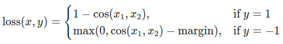
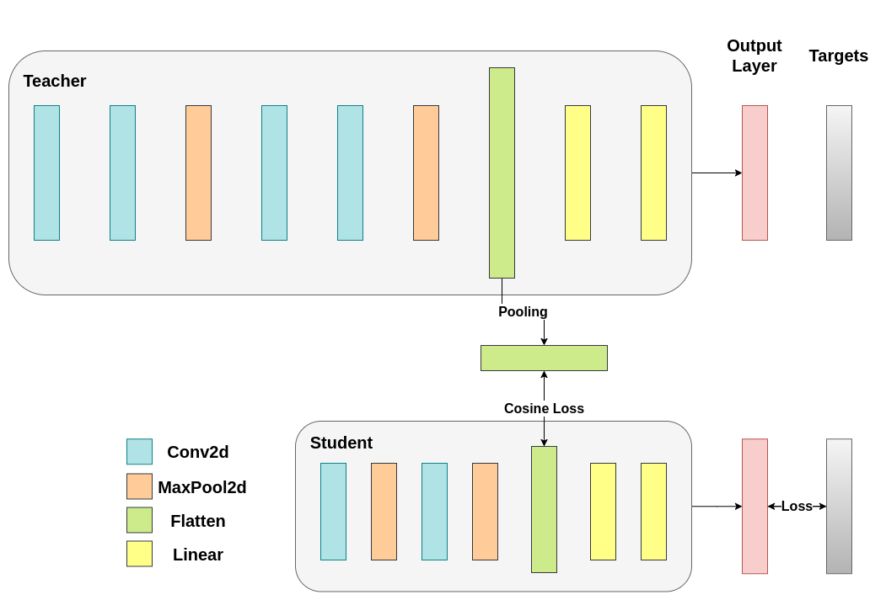

Note
Go to the end to download the full example code.
Knowledge Distillation Tutorial#
Created On: Aug 22, 2023 | Last Updated: Jan 24, 2025 | Last Verified: Nov 05, 2024
Author: Alexandros Chariton
Knowledge distillation is a technique that enables knowledge transfer from large, computationally expensive models to smaller ones without losing validity. This allows for deployment on less powerful hardware, making evaluation faster and more efficient.
In this tutorial, we will run a number of experiments focused at improving the accuracy of a
lightweight neural network, using a more powerful network as a teacher.
The computational cost and the speed of the lightweight network will remain unaffected,
our intervention only focuses on its weights, not on its forward pass.
Applications of this technology can be found in devices such as drones or mobile phones.
In this tutorial, we do not use any external packages as everything we need is available in torch and
torchvision.
In this tutorial, you will learn:
How to modify model classes to extract hidden representations and use them for further calculations
How to modify regular train loops in PyTorch to include additional losses on top of, for example, cross-entropy for classification
How to improve the performance of lightweight models by using more complex models as teachers
Prerequisites#
1 GPU, 4GB of memory
PyTorch v2.0 or later
CIFAR-10 dataset (downloaded by the script and saved in a directory called
/data)
import torch
import torch.nn as nn
import torch.optim as optim
import torchvision.transforms as transforms
import torchvision.datasets as datasets
# Check if the current `accelerator <https://pytorch.org/docs/stable/torch.html#accelerators>`__
# is available, and if not, use the CPU
device = torch.accelerator.current_accelerator().type if torch.accelerator.is_available() else "cpu"
print(f"Using {device} device")
Using cuda device
Loading CIFAR-10#
CIFAR-10 is a popular image dataset with ten classes. Our objective is to predict one of the following classes for each input image.

Example of CIFAR-10 images#
The input images are RGB, so they have 3 channels and are 32x32 pixels. Basically, each image is described by 3 x 32 x 32 = 3072 numbers ranging from 0 to 255. A common practice in neural networks is to normalize the input, which is done for multiple reasons, including avoiding saturation in commonly used activation functions and increasing numerical stability. Our normalization process consists of subtracting the mean and dividing by the standard deviation along each channel. The tensors “mean=[0.485, 0.456, 0.406]” and “std=[0.229, 0.224, 0.225]” were already computed, and they represent the mean and standard deviation of each channel in the predefined subset of CIFAR-10 intended to be the training set. Notice how we use these values for the test set as well, without recomputing the mean and standard deviation from scratch. This is because the network was trained on features produced by subtracting and dividing the numbers above, and we want to maintain consistency. Furthermore, in real life, we would not be able to compute the mean and standard deviation of the test set since, under our assumptions, this data would not be accessible at that point.
As a closing point, we often refer to this held-out set as the validation set, and we use a separate set, called the test set, after optimizing a model’s performance on the validation set. This is done to avoid selecting a model based on the greedy and biased optimization of a single metric.
# Below we are preprocessing data for CIFAR-10. We use an arbitrary batch size of 128.
transforms_cifar = transforms.Compose([
transforms.ToTensor(),
transforms.Normalize(mean=[0.485, 0.456, 0.406], std=[0.229, 0.224, 0.225]),
])
# Loading the CIFAR-10 dataset:
train_dataset = datasets.CIFAR10(root='./data', train=True, download=True, transform=transforms_cifar)
test_dataset = datasets.CIFAR10(root='./data', train=False, download=True, transform=transforms_cifar)
0%| | 0.00/170M [00:00<?, ?B/s]
0%| | 65.5k/170M [00:00<07:20, 387kB/s]
0%| | 131k/170M [00:00<08:24, 338kB/s]
0%| | 197k/170M [00:00<07:29, 379kB/s]
0%| | 262k/170M [00:00<07:30, 378kB/s]
0%| | 328k/170M [00:00<07:41, 369kB/s]
0%| | 393k/170M [00:01<08:09, 348kB/s]
0%| | 459k/170M [00:01<08:07, 349kB/s]
0%| | 524k/170M [00:01<08:11, 346kB/s]
0%| | 590k/170M [00:01<08:05, 350kB/s]
0%| | 655k/170M [00:01<08:14, 343kB/s]
0%| | 721k/170M [00:02<08:31, 332kB/s]
0%| | 786k/170M [00:02<08:23, 337kB/s]
0%| | 852k/170M [00:02<07:58, 354kB/s]
1%| | 918k/170M [00:02<08:15, 342kB/s]
1%| | 983k/170M [00:02<08:25, 336kB/s]
1%| | 1.05M/170M [00:03<08:45, 322kB/s]
1%| | 1.11M/170M [00:03<08:07, 348kB/s]
1%| | 1.18M/170M [00:03<08:07, 348kB/s]
1%| | 1.25M/170M [00:03<08:16, 341kB/s]
1%| | 1.31M/170M [00:03<08:03, 350kB/s]
1%| | 1.38M/170M [00:03<08:13, 343kB/s]
1%| | 1.44M/170M [00:04<07:50, 359kB/s]
1%| | 1.51M/170M [00:04<07:53, 357kB/s]
1%| | 1.57M/170M [00:04<08:14, 342kB/s]
1%| | 1.64M/170M [00:04<07:38, 368kB/s]
1%| | 1.70M/170M [00:04<08:19, 338kB/s]
1%| | 1.77M/170M [00:05<08:05, 348kB/s]
1%| | 1.84M/170M [00:05<08:03, 349kB/s]
1%| | 1.90M/170M [00:05<07:36, 370kB/s]
1%| | 1.97M/170M [00:05<07:40, 366kB/s]
1%| | 2.03M/170M [00:05<07:41, 365kB/s]
1%| | 2.10M/170M [00:05<08:00, 351kB/s]
1%|▏ | 2.16M/170M [00:06<07:49, 358kB/s]
1%|▏ | 2.23M/170M [00:06<07:49, 359kB/s]
1%|▏ | 2.29M/170M [00:06<07:51, 357kB/s]
1%|▏ | 2.36M/170M [00:06<07:41, 364kB/s]
1%|▏ | 2.42M/170M [00:06<07:53, 355kB/s]
1%|▏ | 2.49M/170M [00:07<07:42, 363kB/s]
1%|▏ | 2.56M/170M [00:07<07:36, 368kB/s]
2%|▏ | 2.62M/170M [00:07<07:36, 368kB/s]
2%|▏ | 2.69M/170M [00:07<07:36, 368kB/s]
2%|▏ | 2.75M/170M [00:07<07:55, 353kB/s]
2%|▏ | 2.82M/170M [00:07<07:55, 353kB/s]
2%|▏ | 2.88M/170M [00:08<07:49, 357kB/s]
2%|▏ | 2.95M/170M [00:08<07:42, 362kB/s]
2%|▏ | 3.01M/170M [00:08<07:44, 361kB/s]
2%|▏ | 3.08M/170M [00:08<08:10, 341kB/s]
2%|▏ | 3.15M/170M [00:08<07:37, 366kB/s]
2%|▏ | 3.21M/170M [00:09<07:53, 353kB/s]
2%|▏ | 3.28M/170M [00:09<07:15, 384kB/s]
2%|▏ | 3.34M/170M [00:09<07:17, 382kB/s]
2%|▏ | 3.41M/170M [00:09<07:16, 383kB/s]
2%|▏ | 3.47M/170M [00:09<07:32, 370kB/s]
2%|▏ | 3.54M/170M [00:09<07:33, 368kB/s]
2%|▏ | 3.60M/170M [00:10<07:31, 370kB/s]
2%|▏ | 3.67M/170M [00:10<07:40, 363kB/s]
2%|▏ | 3.74M/170M [00:10<07:09, 388kB/s]
2%|▏ | 3.80M/170M [00:10<07:30, 370kB/s]
2%|▏ | 3.87M/170M [00:10<07:25, 374kB/s]
2%|▏ | 3.93M/170M [00:10<07:20, 378kB/s]
2%|▏ | 4.00M/170M [00:11<07:14, 383kB/s]
2%|▏ | 4.06M/170M [00:11<07:15, 383kB/s]
2%|▏ | 4.13M/170M [00:11<07:49, 355kB/s]
2%|▏ | 4.19M/170M [00:11<07:22, 375kB/s]
2%|▏ | 4.26M/170M [00:11<07:21, 376kB/s]
3%|▎ | 4.33M/170M [00:12<07:20, 377kB/s]
3%|▎ | 4.39M/170M [00:12<07:14, 383kB/s]
3%|▎ | 4.46M/170M [00:12<07:32, 367kB/s]
3%|▎ | 4.52M/170M [00:12<07:18, 378kB/s]
3%|▎ | 4.59M/170M [00:12<07:18, 378kB/s]
3%|▎ | 4.65M/170M [00:12<07:11, 384kB/s]
3%|▎ | 4.72M/170M [00:13<07:08, 387kB/s]
3%|▎ | 4.78M/170M [00:13<07:24, 373kB/s]
3%|▎ | 4.85M/170M [00:13<07:18, 378kB/s]
3%|▎ | 4.92M/170M [00:13<07:12, 383kB/s]
3%|▎ | 4.98M/170M [00:13<07:08, 386kB/s]
3%|▎ | 5.05M/170M [00:13<07:08, 386kB/s]
3%|▎ | 5.11M/170M [00:14<07:07, 387kB/s]
3%|▎ | 5.18M/170M [00:14<07:21, 374kB/s]
3%|▎ | 5.24M/170M [00:14<07:12, 382kB/s]
3%|▎ | 5.31M/170M [00:14<07:06, 387kB/s]
3%|▎ | 5.37M/170M [00:14<07:05, 388kB/s]
3%|▎ | 5.44M/170M [00:14<07:06, 387kB/s]
3%|▎ | 5.51M/170M [00:15<07:21, 374kB/s]
3%|▎ | 5.57M/170M [00:15<07:12, 381kB/s]
3%|▎ | 5.64M/170M [00:15<07:03, 389kB/s]
3%|▎ | 5.70M/170M [00:15<07:07, 385kB/s]
3%|▎ | 5.77M/170M [00:15<07:02, 390kB/s]
3%|▎ | 5.83M/170M [00:16<07:31, 365kB/s]
3%|▎ | 5.90M/170M [00:16<07:05, 387kB/s]
3%|▎ | 5.96M/170M [00:16<07:04, 388kB/s]
4%|▎ | 6.03M/170M [00:16<07:01, 390kB/s]
4%|▎ | 6.09M/170M [00:16<06:59, 392kB/s]
4%|▎ | 6.16M/170M [00:16<07:13, 379kB/s]
4%|▎ | 6.23M/170M [00:16<07:07, 384kB/s]
4%|▎ | 6.29M/170M [00:17<07:04, 387kB/s]
4%|▎ | 6.36M/170M [00:17<06:58, 392kB/s]
4%|▍ | 6.42M/170M [00:17<06:58, 392kB/s]
4%|▍ | 6.49M/170M [00:17<07:16, 376kB/s]
4%|▍ | 6.55M/170M [00:17<07:07, 384kB/s]
4%|▍ | 6.62M/170M [00:18<07:06, 384kB/s]
4%|▍ | 6.68M/170M [00:18<07:04, 386kB/s]
4%|▍ | 6.75M/170M [00:18<07:02, 388kB/s]
4%|▍ | 6.82M/170M [00:18<06:58, 391kB/s]
4%|▍ | 6.88M/170M [00:18<07:14, 376kB/s]
4%|▍ | 6.95M/170M [00:18<07:07, 383kB/s]
4%|▍ | 7.01M/170M [00:19<07:00, 389kB/s]
4%|▍ | 7.08M/170M [00:19<07:07, 382kB/s]
4%|▍ | 7.14M/170M [00:19<06:52, 396kB/s]
4%|▍ | 7.21M/170M [00:19<07:11, 379kB/s]
4%|▍ | 7.27M/170M [00:19<07:04, 385kB/s]
4%|▍ | 7.34M/170M [00:19<07:20, 370kB/s]
4%|▍ | 7.41M/170M [00:20<06:54, 394kB/s]
4%|▍ | 7.47M/170M [00:20<06:56, 392kB/s]
4%|▍ | 7.54M/170M [00:20<07:08, 380kB/s]
4%|▍ | 7.60M/170M [00:20<07:03, 385kB/s]
4%|▍ | 7.67M/170M [00:20<06:59, 389kB/s]
5%|▍ | 7.73M/170M [00:20<06:53, 394kB/s]
5%|▍ | 7.80M/170M [00:21<06:51, 395kB/s]
5%|▍ | 7.86M/170M [00:21<07:07, 380kB/s]
5%|▍ | 7.93M/170M [00:21<07:07, 380kB/s]
5%|▍ | 8.00M/170M [00:21<07:02, 385kB/s]
5%|▍ | 8.06M/170M [00:21<06:57, 389kB/s]
5%|▍ | 8.13M/170M [00:21<06:52, 394kB/s]
5%|▍ | 8.19M/170M [00:22<07:02, 384kB/s]
5%|▍ | 8.26M/170M [00:22<07:04, 382kB/s]
5%|▍ | 8.32M/170M [00:22<06:59, 387kB/s]
5%|▍ | 8.39M/170M [00:22<07:09, 377kB/s]
5%|▍ | 8.45M/170M [00:22<06:51, 394kB/s]
5%|▍ | 8.52M/170M [00:22<06:52, 392kB/s]
5%|▌ | 8.59M/170M [00:23<07:09, 377kB/s]
5%|▌ | 8.65M/170M [00:23<06:59, 386kB/s]
5%|▌ | 8.72M/170M [00:23<07:02, 383kB/s]
5%|▌ | 8.78M/170M [00:23<07:19, 368kB/s]
5%|▌ | 8.85M/170M [00:23<06:44, 399kB/s]
5%|▌ | 8.91M/170M [00:23<07:04, 380kB/s]
5%|▌ | 8.98M/170M [00:24<06:57, 387kB/s]
5%|▌ | 9.04M/170M [00:24<06:54, 389kB/s]
5%|▌ | 9.11M/170M [00:24<06:55, 389kB/s]
5%|▌ | 9.18M/170M [00:24<06:52, 391kB/s]
5%|▌ | 9.24M/170M [00:24<07:13, 372kB/s]
5%|▌ | 9.31M/170M [00:25<07:30, 358kB/s]
5%|▌ | 9.37M/170M [00:25<06:54, 389kB/s]
6%|▌ | 9.44M/170M [00:25<06:49, 393kB/s]
6%|▌ | 9.50M/170M [00:25<07:05, 378kB/s]
6%|▌ | 9.57M/170M [00:25<06:53, 389kB/s]
6%|▌ | 9.63M/170M [00:25<06:54, 388kB/s]
6%|▌ | 9.70M/170M [00:26<06:50, 392kB/s]
6%|▌ | 9.76M/170M [00:26<06:52, 390kB/s]
6%|▌ | 9.83M/170M [00:26<06:50, 392kB/s]
6%|▌ | 9.90M/170M [00:26<07:02, 380kB/s]
6%|▌ | 9.96M/170M [00:26<07:06, 377kB/s]
6%|▌ | 10.0M/170M [00:26<06:59, 382kB/s]
6%|▌ | 10.1M/170M [00:27<06:57, 384kB/s]
6%|▌ | 10.2M/170M [00:27<06:56, 385kB/s]
6%|▌ | 10.2M/170M [00:27<06:53, 387kB/s]
6%|▌ | 10.3M/170M [00:27<07:07, 375kB/s]
6%|▌ | 10.4M/170M [00:27<07:00, 381kB/s]
6%|▌ | 10.4M/170M [00:27<06:51, 389kB/s]
6%|▌ | 10.5M/170M [00:28<07:18, 365kB/s]
6%|▌ | 10.6M/170M [00:28<07:03, 378kB/s]
6%|▌ | 10.6M/170M [00:28<07:13, 369kB/s]
6%|▋ | 10.7M/170M [00:28<07:16, 366kB/s]
6%|▋ | 10.7M/170M [00:28<06:53, 386kB/s]
6%|▋ | 10.8M/170M [00:28<06:53, 386kB/s]
6%|▋ | 10.9M/170M [00:29<06:50, 389kB/s]
6%|▋ | 10.9M/170M [00:29<07:04, 376kB/s]
6%|▋ | 11.0M/170M [00:29<06:54, 385kB/s]
6%|▋ | 11.1M/170M [00:29<06:54, 385kB/s]
7%|▋ | 11.1M/170M [00:29<06:50, 388kB/s]
7%|▋ | 11.2M/170M [00:29<06:45, 393kB/s]
7%|▋ | 11.3M/170M [00:30<07:00, 379kB/s]
7%|▋ | 11.3M/170M [00:30<06:53, 385kB/s]
7%|▋ | 11.4M/170M [00:30<06:52, 386kB/s]
7%|▋ | 11.5M/170M [00:30<06:51, 386kB/s]
7%|▋ | 11.5M/170M [00:30<07:02, 376kB/s]
7%|▋ | 11.6M/170M [00:30<06:48, 389kB/s]
7%|▋ | 11.7M/170M [00:31<07:05, 373kB/s]
7%|▋ | 11.7M/170M [00:31<07:08, 371kB/s]
7%|▋ | 11.8M/170M [00:31<06:48, 388kB/s]
7%|▋ | 11.9M/170M [00:31<07:00, 377kB/s]
7%|▋ | 11.9M/170M [00:31<06:56, 381kB/s]
7%|▋ | 12.0M/170M [00:32<07:10, 368kB/s]
7%|▋ | 12.1M/170M [00:32<07:04, 373kB/s]
7%|▋ | 12.1M/170M [00:32<06:57, 379kB/s]
7%|▋ | 12.2M/170M [00:32<06:57, 379kB/s]
7%|▋ | 12.3M/170M [00:32<06:54, 382kB/s]
7%|▋ | 12.3M/170M [00:32<07:09, 368kB/s]
7%|▋ | 12.4M/170M [00:33<07:01, 375kB/s]
7%|▋ | 12.5M/170M [00:33<06:52, 383kB/s]
7%|▋ | 12.5M/170M [00:33<06:55, 381kB/s]
7%|▋ | 12.6M/170M [00:33<06:51, 384kB/s]
7%|▋ | 12.6M/170M [00:33<07:03, 373kB/s]
7%|▋ | 12.7M/170M [00:33<06:57, 378kB/s]
7%|▋ | 12.8M/170M [00:34<06:57, 378kB/s]
8%|▊ | 12.8M/170M [00:34<07:05, 370kB/s]
8%|▊ | 12.9M/170M [00:34<06:49, 385kB/s]
8%|▊ | 13.0M/170M [00:34<07:05, 370kB/s]
8%|▊ | 13.0M/170M [00:34<06:58, 377kB/s]
8%|▊ | 13.1M/170M [00:34<06:58, 376kB/s]
8%|▊ | 13.2M/170M [00:35<06:58, 376kB/s]
8%|▊ | 13.2M/170M [00:35<06:52, 381kB/s]
8%|▊ | 13.3M/170M [00:35<06:56, 377kB/s]
8%|▊ | 13.4M/170M [00:35<07:09, 366kB/s]
8%|▊ | 13.4M/170M [00:35<07:00, 374kB/s]
8%|▊ | 13.5M/170M [00:36<07:03, 371kB/s]
8%|▊ | 13.6M/170M [00:36<07:14, 361kB/s]
8%|▊ | 13.6M/170M [00:36<06:50, 382kB/s]
8%|▊ | 13.7M/170M [00:36<07:10, 365kB/s]
8%|▊ | 13.8M/170M [00:36<07:02, 371kB/s]
8%|▊ | 13.8M/170M [00:36<06:59, 374kB/s]
8%|▊ | 13.9M/170M [00:37<07:04, 368kB/s]
8%|▊ | 14.0M/170M [00:37<07:00, 373kB/s]
8%|▊ | 14.0M/170M [00:37<07:09, 364kB/s]
8%|▊ | 14.1M/170M [00:37<07:24, 352kB/s]
8%|▊ | 14.2M/170M [00:37<06:57, 374kB/s]
8%|▊ | 14.2M/170M [00:38<06:57, 374kB/s]
8%|▊ | 14.3M/170M [00:38<06:59, 373kB/s]
8%|▊ | 14.4M/170M [00:38<07:04, 368kB/s]
8%|▊ | 14.4M/170M [00:38<06:59, 372kB/s]
8%|▊ | 14.5M/170M [00:38<06:59, 372kB/s]
9%|▊ | 14.5M/170M [00:38<06:50, 380kB/s]
9%|▊ | 14.6M/170M [00:39<06:47, 383kB/s]
9%|▊ | 14.7M/170M [00:39<07:03, 368kB/s]
9%|▊ | 14.7M/170M [00:39<07:00, 371kB/s]
9%|▊ | 14.8M/170M [00:39<06:56, 374kB/s]
9%|▊ | 14.9M/170M [00:39<06:51, 378kB/s]
9%|▉ | 14.9M/170M [00:39<06:49, 380kB/s]
9%|▉ | 15.0M/170M [00:40<06:47, 382kB/s]
9%|▉ | 15.1M/170M [00:40<07:01, 369kB/s]
9%|▉ | 15.1M/170M [00:40<06:56, 373kB/s]
9%|▉ | 15.2M/170M [00:40<06:50, 378kB/s]
9%|▉ | 15.3M/170M [00:40<06:47, 381kB/s]
9%|▉ | 15.3M/170M [00:40<06:55, 373kB/s]
9%|▉ | 15.4M/170M [00:41<07:08, 362kB/s]
9%|▉ | 15.5M/170M [00:41<06:43, 384kB/s]
9%|▉ | 15.5M/170M [00:41<06:44, 384kB/s]
9%|▉ | 15.6M/170M [00:41<06:52, 376kB/s]
9%|▉ | 15.7M/170M [00:41<06:37, 390kB/s]
9%|▉ | 15.7M/170M [00:42<06:53, 375kB/s]
9%|▉ | 15.8M/170M [00:42<06:49, 378kB/s]
9%|▉ | 15.9M/170M [00:42<06:46, 381kB/s]
9%|▉ | 15.9M/170M [00:42<06:43, 383kB/s]
9%|▉ | 16.0M/170M [00:42<06:41, 385kB/s]
9%|▉ | 16.1M/170M [00:42<07:00, 367kB/s]
9%|▉ | 16.1M/170M [00:43<06:53, 373kB/s]
9%|▉ | 16.2M/170M [00:43<06:46, 380kB/s]
10%|▉ | 16.3M/170M [00:43<06:43, 382kB/s]
10%|▉ | 16.3M/170M [00:43<06:38, 387kB/s]
10%|▉ | 16.4M/170M [00:43<06:54, 371kB/s]
10%|▉ | 16.4M/170M [00:43<07:02, 365kB/s]
10%|▉ | 16.5M/170M [00:44<06:43, 381kB/s]
10%|▉ | 16.6M/170M [00:44<06:42, 382kB/s]
10%|▉ | 16.6M/170M [00:44<06:48, 376kB/s]
10%|▉ | 16.7M/170M [00:44<07:11, 357kB/s]
10%|▉ | 16.8M/170M [00:44<07:06, 361kB/s]
10%|▉ | 16.8M/170M [00:45<07:00, 366kB/s]
10%|▉ | 16.9M/170M [00:45<06:50, 374kB/s]
10%|▉ | 17.0M/170M [00:45<06:48, 376kB/s]
10%|▉ | 17.0M/170M [00:45<06:48, 376kB/s]
10%|█ | 17.1M/170M [00:45<07:01, 364kB/s]
10%|█ | 17.2M/170M [00:45<06:53, 371kB/s]
10%|█ | 17.2M/170M [00:46<06:45, 378kB/s]
10%|█ | 17.3M/170M [00:46<06:48, 375kB/s]
10%|█ | 17.4M/170M [00:46<06:44, 378kB/s]
10%|█ | 17.4M/170M [00:46<07:10, 356kB/s]
10%|█ | 17.5M/170M [00:46<06:49, 374kB/s]
10%|█ | 17.6M/170M [00:46<06:51, 371kB/s]
10%|█ | 17.6M/170M [00:47<06:43, 379kB/s]
10%|█ | 17.7M/170M [00:47<06:43, 378kB/s]
10%|█ | 17.8M/170M [00:47<06:58, 365kB/s]
10%|█ | 17.8M/170M [00:47<07:01, 363kB/s]
10%|█ | 17.9M/170M [00:47<06:44, 377kB/s]
11%|█ | 18.0M/170M [00:47<06:42, 379kB/s]
11%|█ | 18.0M/170M [00:48<06:45, 376kB/s]
11%|█ | 18.1M/170M [00:48<07:01, 362kB/s]
11%|█ | 18.2M/170M [00:48<06:58, 364kB/s]
11%|█ | 18.2M/170M [00:48<06:50, 371kB/s]
11%|█ | 18.3M/170M [00:48<07:11, 353kB/s]
11%|█ | 18.4M/170M [00:49<06:42, 378kB/s]
11%|█ | 18.4M/170M [00:49<06:39, 380kB/s]
11%|█ | 18.5M/170M [00:49<06:53, 367kB/s]
11%|█ | 18.5M/170M [00:49<06:48, 372kB/s]
11%|█ | 18.6M/170M [00:49<06:47, 373kB/s]
11%|█ | 18.7M/170M [00:49<06:45, 375kB/s]
11%|█ | 18.7M/170M [00:50<06:43, 376kB/s]
11%|█ | 18.8M/170M [00:50<07:12, 351kB/s]
11%|█ | 18.9M/170M [00:50<06:48, 371kB/s]
11%|█ | 18.9M/170M [00:50<06:43, 375kB/s]
11%|█ | 19.0M/170M [00:50<06:49, 370kB/s]
11%|█ | 19.1M/170M [00:50<06:39, 379kB/s]
11%|█ | 19.1M/170M [00:51<06:53, 366kB/s]
11%|█▏ | 19.2M/170M [00:51<06:49, 369kB/s]
11%|█▏ | 19.3M/170M [00:51<07:06, 354kB/s]
11%|█▏ | 19.3M/170M [00:51<06:38, 380kB/s]
11%|█▏ | 19.4M/170M [00:51<06:36, 381kB/s]
11%|█▏ | 19.5M/170M [00:52<06:56, 363kB/s]
11%|█▏ | 19.5M/170M [00:52<06:51, 367kB/s]
11%|█▏ | 19.6M/170M [00:52<06:50, 367kB/s]
12%|█▏ | 19.7M/170M [00:52<06:45, 372kB/s]
12%|█▏ | 19.7M/170M [00:52<06:44, 372kB/s]
12%|█▏ | 19.8M/170M [00:52<06:44, 372kB/s]
12%|█▏ | 19.9M/170M [00:53<06:58, 360kB/s]
12%|█▏ | 19.9M/170M [00:53<07:08, 351kB/s]
12%|█▏ | 20.0M/170M [00:53<06:45, 371kB/s]
12%|█▏ | 20.1M/170M [00:53<06:45, 371kB/s]
12%|█▏ | 20.1M/170M [00:53<06:44, 371kB/s]
12%|█▏ | 20.2M/170M [00:54<06:57, 360kB/s]
12%|█▏ | 20.3M/170M [00:54<06:50, 366kB/s]
12%|█▏ | 20.3M/170M [00:54<06:51, 365kB/s]
12%|█▏ | 20.4M/170M [00:54<06:46, 370kB/s]
12%|█▏ | 20.4M/170M [00:54<06:45, 370kB/s]
12%|█▏ | 20.5M/170M [00:54<06:56, 361kB/s]
12%|█▏ | 20.6M/170M [00:55<07:02, 355kB/s]
12%|█▏ | 20.6M/170M [00:55<06:37, 377kB/s]
12%|█▏ | 20.7M/170M [00:55<06:36, 378kB/s]
12%|█▏ | 20.8M/170M [00:55<06:32, 382kB/s]
12%|█▏ | 20.8M/170M [00:55<06:47, 367kB/s]
12%|█▏ | 20.9M/170M [00:55<06:42, 372kB/s]
12%|█▏ | 21.0M/170M [00:56<06:38, 376kB/s]
12%|█▏ | 21.0M/170M [00:56<06:36, 377kB/s]
12%|█▏ | 21.1M/170M [00:56<06:35, 378kB/s]
12%|█▏ | 21.2M/170M [00:56<06:54, 360kB/s]
12%|█▏ | 21.2M/170M [00:56<06:53, 361kB/s]
12%|█▏ | 21.3M/170M [00:57<06:52, 362kB/s]
13%|█▎ | 21.4M/170M [00:57<06:36, 376kB/s]
13%|█▎ | 21.4M/170M [00:57<06:36, 376kB/s]
13%|█▎ | 21.5M/170M [00:57<06:37, 375kB/s]
13%|█▎ | 21.6M/170M [00:57<06:45, 367kB/s]
13%|█▎ | 21.6M/170M [00:57<06:38, 373kB/s]
13%|█▎ | 21.7M/170M [00:58<06:34, 377kB/s]
13%|█▎ | 21.8M/170M [00:58<06:33, 378kB/s]
13%|█▎ | 21.8M/170M [00:58<06:31, 379kB/s]
13%|█▎ | 21.9M/170M [00:58<06:55, 358kB/s]
13%|█▎ | 22.0M/170M [00:58<07:06, 348kB/s]
13%|█▎ | 22.0M/170M [00:58<06:31, 380kB/s]
13%|█▎ | 22.1M/170M [00:59<06:32, 378kB/s]
13%|█▎ | 22.2M/170M [00:59<06:32, 378kB/s]
13%|█▎ | 22.2M/170M [00:59<06:47, 364kB/s]
13%|█▎ | 22.3M/170M [00:59<06:43, 367kB/s]
13%|█▎ | 22.3M/170M [00:59<06:40, 370kB/s]
13%|█▎ | 22.4M/170M [01:00<06:35, 374kB/s]
13%|█▎ | 22.5M/170M [01:00<06:33, 376kB/s]
13%|█▎ | 22.5M/170M [01:00<06:50, 361kB/s]
13%|█▎ | 22.6M/170M [01:00<06:41, 368kB/s]
13%|█▎ | 22.7M/170M [01:00<06:39, 370kB/s]
13%|█▎ | 22.7M/170M [01:00<06:34, 375kB/s]
13%|█▎ | 22.8M/170M [01:01<06:29, 379kB/s]
13%|█▎ | 22.9M/170M [01:01<06:46, 363kB/s]
13%|█▎ | 22.9M/170M [01:01<06:40, 368kB/s]
13%|█▎ | 23.0M/170M [01:01<06:33, 374kB/s]
14%|█▎ | 23.1M/170M [01:01<06:31, 376kB/s]
14%|█▎ | 23.1M/170M [01:01<06:28, 379kB/s]
14%|█▎ | 23.2M/170M [01:02<06:30, 377kB/s]
14%|█▎ | 23.3M/170M [01:02<06:47, 361kB/s]
14%|█▎ | 23.3M/170M [01:02<06:34, 373kB/s]
14%|█▎ | 23.4M/170M [01:02<06:31, 376kB/s]
14%|█▍ | 23.5M/170M [01:02<06:29, 377kB/s]
14%|█▍ | 23.5M/170M [01:03<06:38, 368kB/s]
14%|█▍ | 23.6M/170M [01:03<06:49, 359kB/s]
14%|█▍ | 23.7M/170M [01:03<06:31, 375kB/s]
14%|█▍ | 23.7M/170M [01:03<06:25, 381kB/s]
14%|█▍ | 23.8M/170M [01:03<06:25, 380kB/s]
14%|█▍ | 23.9M/170M [01:03<06:24, 382kB/s]
14%|█▍ | 23.9M/170M [01:04<06:38, 368kB/s]
14%|█▍ | 24.0M/170M [01:04<06:29, 376kB/s]
14%|█▍ | 24.1M/170M [01:04<06:34, 371kB/s]
14%|█▍ | 24.1M/170M [01:04<06:28, 377kB/s]
14%|█▍ | 24.2M/170M [01:04<06:26, 379kB/s]
14%|█▍ | 24.2M/170M [01:04<06:34, 370kB/s]
14%|█▍ | 24.3M/170M [01:05<06:30, 374kB/s]
14%|█▍ | 24.4M/170M [01:05<06:30, 374kB/s]
14%|█▍ | 24.4M/170M [01:05<06:24, 380kB/s]
14%|█▍ | 24.5M/170M [01:05<06:20, 384kB/s]
14%|█▍ | 24.6M/170M [01:05<06:34, 370kB/s]
14%|█▍ | 24.6M/170M [01:06<06:49, 356kB/s]
14%|█▍ | 24.7M/170M [01:06<06:25, 379kB/s]
15%|█▍ | 24.8M/170M [01:06<06:22, 381kB/s]
15%|█▍ | 24.8M/170M [01:06<06:36, 367kB/s]
15%|█▍ | 24.9M/170M [01:06<06:16, 387kB/s]
15%|█▍ | 25.0M/170M [01:06<06:34, 369kB/s]
15%|█▍ | 25.0M/170M [01:07<06:25, 377kB/s]
15%|█▍ | 25.1M/170M [01:07<06:25, 377kB/s]
15%|█▍ | 25.2M/170M [01:07<06:27, 375kB/s]
15%|█▍ | 25.2M/170M [01:07<06:19, 383kB/s]
15%|█▍ | 25.3M/170M [01:07<06:35, 367kB/s]
15%|█▍ | 25.4M/170M [01:07<06:24, 377kB/s]
15%|█▍ | 25.4M/170M [01:08<06:22, 379kB/s]
15%|█▍ | 25.5M/170M [01:08<06:22, 379kB/s]
15%|█▍ | 25.6M/170M [01:08<06:20, 380kB/s]
15%|█▌ | 25.6M/170M [01:08<06:32, 369kB/s]
15%|█▌ | 25.7M/170M [01:08<06:29, 372kB/s]
15%|█▌ | 25.8M/170M [01:08<06:23, 378kB/s]
15%|█▌ | 25.8M/170M [01:09<06:21, 379kB/s]
15%|█▌ | 25.9M/170M [01:09<06:18, 382kB/s]
15%|█▌ | 26.0M/170M [01:09<06:39, 361kB/s]
15%|█▌ | 26.0M/170M [01:09<06:36, 364kB/s]
15%|█▌ | 26.1M/170M [01:09<06:20, 380kB/s]
15%|█▌ | 26.1M/170M [01:10<06:15, 384kB/s]
15%|█▌ | 26.2M/170M [01:10<06:19, 380kB/s]
15%|█▌ | 26.3M/170M [01:10<06:24, 375kB/s]
15%|█▌ | 26.3M/170M [01:10<06:20, 379kB/s]
15%|█▌ | 26.4M/170M [01:10<06:20, 379kB/s]
16%|█▌ | 26.5M/170M [01:10<06:13, 386kB/s]
16%|█▌ | 26.5M/170M [01:11<06:14, 384kB/s]
16%|█▌ | 26.6M/170M [01:11<06:16, 383kB/s]
16%|█▌ | 26.7M/170M [01:11<06:27, 371kB/s]
16%|█▌ | 26.7M/170M [01:11<06:21, 377kB/s]
16%|█▌ | 26.8M/170M [01:11<06:19, 379kB/s]
16%|█▌ | 26.9M/170M [01:11<06:18, 379kB/s]
16%|█▌ | 26.9M/170M [01:12<06:16, 382kB/s]
16%|█▌ | 27.0M/170M [01:12<06:29, 369kB/s]
16%|█▌ | 27.1M/170M [01:12<06:40, 358kB/s]
16%|█▌ | 27.1M/170M [01:12<06:18, 379kB/s]
16%|█▌ | 27.2M/170M [01:12<06:21, 376kB/s]
16%|█▌ | 27.3M/170M [01:12<06:21, 376kB/s]
16%|█▌ | 27.3M/170M [01:13<06:34, 363kB/s]
16%|█▌ | 27.4M/170M [01:13<06:26, 370kB/s]
16%|█▌ | 27.5M/170M [01:13<06:29, 367kB/s]
16%|█▌ | 27.5M/170M [01:13<06:24, 371kB/s]
16%|█▌ | 27.6M/170M [01:13<06:21, 375kB/s]
16%|█▌ | 27.7M/170M [01:14<06:38, 358kB/s]
16%|█▋ | 27.7M/170M [01:14<06:31, 365kB/s]
16%|█▋ | 27.8M/170M [01:14<06:48, 349kB/s]
16%|█▋ | 27.9M/170M [01:14<06:21, 373kB/s]
16%|█▋ | 27.9M/170M [01:14<06:16, 379kB/s]
16%|█▋ | 28.0M/170M [01:14<06:20, 375kB/s]
16%|█▋ | 28.0M/170M [01:15<06:33, 362kB/s]
16%|█▋ | 28.1M/170M [01:15<06:30, 365kB/s]
17%|█▋ | 28.2M/170M [01:15<06:25, 369kB/s]
17%|█▋ | 28.2M/170M [01:15<06:32, 362kB/s]
17%|█▋ | 28.3M/170M [01:15<06:24, 369kB/s]
17%|█▋ | 28.4M/170M [01:16<06:38, 356kB/s]
17%|█▋ | 28.4M/170M [01:16<06:36, 358kB/s]
17%|█▋ | 28.5M/170M [01:16<06:38, 356kB/s]
17%|█▋ | 28.6M/170M [01:16<06:22, 372kB/s]
17%|█▋ | 28.6M/170M [01:16<06:22, 371kB/s]
17%|█▋ | 28.7M/170M [01:16<06:34, 359kB/s]
17%|█▋ | 28.8M/170M [01:17<06:30, 363kB/s]
17%|█▋ | 28.8M/170M [01:17<06:31, 362kB/s]
17%|█▋ | 28.9M/170M [01:17<06:26, 366kB/s]
17%|█▋ | 29.0M/170M [01:17<06:26, 366kB/s]
17%|█▋ | 29.0M/170M [01:17<06:34, 358kB/s]
17%|█▋ | 29.1M/170M [01:18<06:29, 363kB/s]
17%|█▋ | 29.2M/170M [01:18<06:47, 347kB/s]
17%|█▋ | 29.2M/170M [01:18<06:16, 375kB/s]
17%|█▋ | 29.3M/170M [01:18<06:37, 355kB/s]
17%|█▋ | 29.4M/170M [01:18<06:46, 347kB/s]
17%|█▋ | 29.4M/170M [01:18<06:38, 354kB/s]
17%|█▋ | 29.5M/170M [01:19<06:28, 363kB/s]
17%|█▋ | 29.6M/170M [01:19<06:22, 369kB/s]
17%|█▋ | 29.6M/170M [01:19<06:20, 370kB/s]
17%|█▋ | 29.7M/170M [01:19<06:21, 369kB/s]
17%|█▋ | 29.8M/170M [01:19<06:37, 354kB/s]
17%|█▋ | 29.8M/170M [01:20<06:32, 358kB/s]
18%|█▊ | 29.9M/170M [01:20<06:35, 356kB/s]
18%|█▊ | 29.9M/170M [01:20<06:36, 354kB/s]
18%|█▊ | 30.0M/170M [01:20<06:12, 377kB/s]
18%|█▊ | 30.1M/170M [01:20<06:24, 365kB/s]
18%|█▊ | 30.1M/170M [01:20<06:20, 369kB/s]
18%|█▊ | 30.2M/170M [01:21<06:19, 370kB/s]
18%|█▊ | 30.3M/170M [01:21<06:16, 373kB/s]
18%|█▊ | 30.3M/170M [01:21<06:17, 371kB/s]
18%|█▊ | 30.4M/170M [01:21<06:37, 353kB/s]
18%|█▊ | 30.5M/170M [01:21<06:36, 353kB/s]
18%|█▊ | 30.5M/170M [01:21<06:16, 372kB/s]
18%|█▊ | 30.6M/170M [01:22<06:12, 376kB/s]
18%|█▊ | 30.7M/170M [01:22<06:11, 377kB/s]
18%|█▊ | 30.7M/170M [01:22<06:26, 361kB/s]
18%|█▊ | 30.8M/170M [01:22<06:25, 363kB/s]
18%|█▊ | 30.9M/170M [01:22<06:22, 365kB/s]
18%|█▊ | 30.9M/170M [01:23<06:28, 359kB/s]
18%|█▊ | 31.0M/170M [01:23<06:27, 360kB/s]
18%|█▊ | 31.1M/170M [01:23<06:20, 366kB/s]
18%|█▊ | 31.1M/170M [01:23<06:23, 364kB/s]
18%|█▊ | 31.2M/170M [01:23<06:22, 364kB/s]
18%|█▊ | 31.3M/170M [01:23<06:13, 372kB/s]
18%|█▊ | 31.3M/170M [01:24<06:15, 371kB/s]
18%|█▊ | 31.4M/170M [01:24<06:15, 371kB/s]
18%|█▊ | 31.5M/170M [01:24<06:27, 359kB/s]
18%|█▊ | 31.5M/170M [01:24<06:25, 360kB/s]
19%|█▊ | 31.6M/170M [01:24<06:19, 366kB/s]
19%|█▊ | 31.7M/170M [01:25<06:17, 368kB/s]
19%|█▊ | 31.7M/170M [01:25<06:16, 369kB/s]
19%|█▊ | 31.8M/170M [01:25<06:27, 358kB/s]
19%|█▊ | 31.9M/170M [01:25<06:19, 365kB/s]
19%|█▊ | 31.9M/170M [01:25<06:33, 352kB/s]
19%|█▉ | 32.0M/170M [01:25<06:10, 374kB/s]
19%|█▉ | 32.0M/170M [01:26<06:05, 379kB/s]
19%|█▉ | 32.1M/170M [01:26<06:23, 361kB/s]
19%|█▉ | 32.2M/170M [01:26<06:18, 365kB/s]
19%|█▉ | 32.2M/170M [01:26<06:14, 369kB/s]
19%|█▉ | 32.3M/170M [01:26<06:17, 366kB/s]
19%|█▉ | 32.4M/170M [01:27<06:20, 363kB/s]
19%|█▉ | 32.4M/170M [01:27<06:38, 346kB/s]
19%|█▉ | 32.5M/170M [01:27<06:37, 348kB/s]
19%|█▉ | 32.6M/170M [01:27<06:41, 343kB/s]
19%|█▉ | 32.6M/170M [01:27<06:34, 349kB/s]
19%|█▉ | 32.7M/170M [01:27<06:19, 363kB/s]
19%|█▉ | 32.8M/170M [01:28<06:40, 344kB/s]
19%|█▉ | 32.8M/170M [01:28<06:34, 349kB/s]
19%|█▉ | 32.9M/170M [01:28<06:42, 342kB/s]
19%|█▉ | 33.0M/170M [01:28<06:50, 335kB/s]
19%|█▉ | 33.0M/170M [01:28<06:56, 330kB/s]
19%|█▉ | 33.1M/170M [01:29<06:34, 348kB/s]
19%|█▉ | 33.2M/170M [01:29<06:49, 335kB/s]
19%|█▉ | 33.2M/170M [01:29<06:40, 342kB/s]
20%|█▉ | 33.3M/170M [01:29<06:41, 342kB/s]
20%|█▉ | 33.4M/170M [01:29<06:24, 357kB/s]
20%|█▉ | 33.4M/170M [01:30<06:26, 355kB/s]
20%|█▉ | 33.5M/170M [01:30<06:46, 337kB/s]
20%|█▉ | 33.6M/170M [01:30<06:34, 348kB/s]
20%|█▉ | 33.6M/170M [01:30<06:47, 336kB/s]
20%|█▉ | 33.7M/170M [01:30<06:44, 339kB/s]
20%|█▉ | 33.8M/170M [01:31<06:29, 352kB/s]
20%|█▉ | 33.8M/170M [01:31<06:42, 340kB/s]
20%|█▉ | 33.9M/170M [01:31<06:55, 329kB/s]
20%|█▉ | 33.9M/170M [01:31<06:28, 351kB/s]
20%|█▉ | 34.0M/170M [01:31<06:20, 359kB/s]
20%|█▉ | 34.1M/170M [01:31<06:24, 355kB/s]
20%|██ | 34.1M/170M [01:32<06:37, 343kB/s]
20%|██ | 34.2M/170M [01:32<06:51, 332kB/s]
20%|██ | 34.3M/170M [01:32<06:42, 338kB/s]
20%|██ | 34.3M/170M [01:32<06:36, 343kB/s]
20%|██ | 34.4M/170M [01:32<06:28, 351kB/s]
20%|██ | 34.5M/170M [01:33<06:41, 339kB/s]
20%|██ | 34.5M/170M [01:33<06:53, 328kB/s]
20%|██ | 34.6M/170M [01:33<06:33, 345kB/s]
20%|██ | 34.7M/170M [01:33<06:34, 344kB/s]
20%|██ | 34.7M/170M [01:33<06:58, 324kB/s]
20%|██ | 34.8M/170M [01:34<06:42, 337kB/s]
20%|██ | 34.9M/170M [01:34<06:44, 335kB/s]
20%|██ | 34.9M/170M [01:34<06:37, 341kB/s]
21%|██ | 35.0M/170M [01:34<06:31, 346kB/s]
21%|██ | 35.1M/170M [01:34<06:26, 351kB/s]
21%|██ | 35.1M/170M [01:35<06:20, 356kB/s]
21%|██ | 35.2M/170M [01:35<06:28, 348kB/s]
21%|██ | 35.3M/170M [01:35<06:24, 352kB/s]
21%|██ | 35.3M/170M [01:35<06:25, 350kB/s]
21%|██ | 35.4M/170M [01:35<06:15, 360kB/s]
21%|██ | 35.5M/170M [01:35<06:18, 356kB/s]
21%|██ | 35.5M/170M [01:36<06:35, 341kB/s]
21%|██ | 35.6M/170M [01:36<06:21, 354kB/s]
21%|██ | 35.7M/170M [01:36<06:28, 347kB/s]
21%|██ | 35.7M/170M [01:36<06:32, 344kB/s]
21%|██ | 35.8M/170M [01:36<06:15, 359kB/s]
21%|██ | 35.8M/170M [01:37<06:39, 337kB/s]
21%|██ | 35.9M/170M [01:37<06:38, 338kB/s]
21%|██ | 36.0M/170M [01:37<06:40, 335kB/s]
21%|██ | 36.0M/170M [01:37<06:50, 328kB/s]
21%|██ | 36.1M/170M [01:37<06:37, 338kB/s]
21%|██ | 36.2M/170M [01:38<06:32, 342kB/s]
21%|██▏ | 36.2M/170M [01:38<06:40, 335kB/s]
21%|██▏ | 36.3M/170M [01:38<06:33, 341kB/s]
21%|██▏ | 36.4M/170M [01:38<06:28, 346kB/s]
21%|██▏ | 36.4M/170M [01:38<06:18, 354kB/s]
21%|██▏ | 36.5M/170M [01:39<06:17, 355kB/s]
21%|██▏ | 36.6M/170M [01:39<06:31, 342kB/s]
21%|██▏ | 36.6M/170M [01:39<06:34, 339kB/s]
22%|██▏ | 36.7M/170M [01:39<06:23, 349kB/s]
22%|██▏ | 36.8M/170M [01:39<06:38, 336kB/s]
22%|██▏ | 36.8M/170M [01:39<06:04, 367kB/s]
22%|██▏ | 36.9M/170M [01:40<06:27, 345kB/s]
22%|██▏ | 37.0M/170M [01:40<06:17, 353kB/s]
22%|██▏ | 37.0M/170M [01:40<06:32, 340kB/s]
22%|██▏ | 37.1M/170M [01:40<06:32, 340kB/s]
22%|██▏ | 37.2M/170M [01:40<06:26, 345kB/s]
22%|██▏ | 37.2M/170M [01:41<06:32, 340kB/s]
22%|██▏ | 37.3M/170M [01:41<06:31, 341kB/s]
22%|██▏ | 37.4M/170M [01:41<06:15, 355kB/s]
22%|██▏ | 37.4M/170M [01:41<06:17, 353kB/s]
22%|██▏ | 37.5M/170M [01:41<06:08, 361kB/s]
22%|██▏ | 37.6M/170M [01:42<06:20, 350kB/s]
22%|██▏ | 37.6M/170M [01:42<06:14, 355kB/s]
22%|██▏ | 37.7M/170M [01:42<06:12, 357kB/s]
22%|██▏ | 37.7M/170M [01:42<06:12, 356kB/s]
22%|██▏ | 37.8M/170M [01:42<06:05, 363kB/s]
22%|██▏ | 37.9M/170M [01:42<06:12, 356kB/s]
22%|██▏ | 37.9M/170M [01:43<06:25, 344kB/s]
22%|██▏ | 38.0M/170M [01:43<06:16, 352kB/s]
22%|██▏ | 38.1M/170M [01:43<06:13, 354kB/s]
22%|██▏ | 38.1M/170M [01:43<06:16, 351kB/s]
22%|██▏ | 38.2M/170M [01:43<06:36, 333kB/s]
22%|██▏ | 38.3M/170M [01:44<06:38, 332kB/s]
22%|██▏ | 38.3M/170M [01:44<06:15, 352kB/s]
23%|██▎ | 38.4M/170M [01:44<06:20, 347kB/s]
23%|██▎ | 38.5M/170M [01:44<06:27, 341kB/s]
23%|██▎ | 38.5M/170M [01:44<06:05, 361kB/s]
23%|██▎ | 38.6M/170M [01:45<06:22, 345kB/s]
23%|██▎ | 38.7M/170M [01:45<06:20, 347kB/s]
23%|██▎ | 38.7M/170M [01:45<06:17, 349kB/s]
23%|██▎ | 38.8M/170M [01:45<06:12, 353kB/s]
23%|██▎ | 38.9M/170M [01:45<06:12, 353kB/s]
23%|██▎ | 38.9M/170M [01:46<06:22, 344kB/s]
23%|██▎ | 39.0M/170M [01:46<06:18, 348kB/s]
23%|██▎ | 39.1M/170M [01:46<06:22, 344kB/s]
23%|██▎ | 39.1M/170M [01:46<06:10, 354kB/s]
23%|██▎ | 39.2M/170M [01:46<06:14, 351kB/s]
23%|██▎ | 39.3M/170M [01:46<06:28, 338kB/s]
23%|██▎ | 39.3M/170M [01:47<06:20, 345kB/s]
23%|██▎ | 39.4M/170M [01:47<06:18, 346kB/s]
23%|██▎ | 39.5M/170M [01:47<06:17, 347kB/s]
23%|██▎ | 39.5M/170M [01:47<06:17, 347kB/s]
23%|██▎ | 39.6M/170M [01:47<06:14, 350kB/s]
23%|██▎ | 39.6M/170M [01:48<06:28, 337kB/s]
23%|██▎ | 39.7M/170M [01:48<06:19, 344kB/s]
23%|██▎ | 39.8M/170M [01:48<06:21, 343kB/s]
23%|██▎ | 39.8M/170M [01:48<06:14, 349kB/s]
23%|██▎ | 39.9M/170M [01:48<06:06, 357kB/s]
23%|██▎ | 40.0M/170M [01:49<06:22, 341kB/s]
23%|██▎ | 40.0M/170M [01:49<06:24, 340kB/s]
24%|██▎ | 40.1M/170M [01:49<06:00, 362kB/s]
24%|██▎ | 40.2M/170M [01:49<06:01, 360kB/s]
24%|██▎ | 40.2M/170M [01:49<05:57, 364kB/s]
24%|██▎ | 40.3M/170M [01:49<06:08, 353kB/s]
24%|██▎ | 40.4M/170M [01:50<06:19, 343kB/s]
24%|██▎ | 40.4M/170M [01:50<06:17, 345kB/s]
24%|██▍ | 40.5M/170M [01:50<06:11, 350kB/s]
24%|██▍ | 40.6M/170M [01:50<05:52, 368kB/s]
24%|██▍ | 40.6M/170M [01:50<06:05, 355kB/s]
24%|██▍ | 40.7M/170M [01:51<05:55, 365kB/s]
24%|██▍ | 40.8M/170M [01:51<05:58, 362kB/s]
24%|██▍ | 40.8M/170M [01:51<05:51, 369kB/s]
24%|██▍ | 40.9M/170M [01:51<05:50, 370kB/s]
24%|██▍ | 41.0M/170M [01:51<06:00, 359kB/s]
24%|██▍ | 41.0M/170M [01:51<05:58, 361kB/s]
24%|██▍ | 41.1M/170M [01:52<05:49, 370kB/s]
24%|██▍ | 41.2M/170M [01:52<05:51, 368kB/s]
24%|██▍ | 41.2M/170M [01:52<05:49, 370kB/s]
24%|██▍ | 41.3M/170M [01:52<05:51, 368kB/s]
24%|██▍ | 41.4M/170M [01:52<06:01, 357kB/s]
24%|██▍ | 41.4M/170M [01:53<05:55, 363kB/s]
24%|██▍ | 41.5M/170M [01:53<05:54, 364kB/s]
24%|██▍ | 41.5M/170M [01:53<05:55, 363kB/s]
24%|██▍ | 41.6M/170M [01:53<05:53, 364kB/s]
24%|██▍ | 41.7M/170M [01:53<06:00, 357kB/s]
24%|██▍ | 41.7M/170M [01:53<05:58, 359kB/s]
25%|██▍ | 41.8M/170M [01:54<05:52, 365kB/s]
25%|██▍ | 41.9M/170M [01:54<05:51, 365kB/s]
25%|██▍ | 41.9M/170M [01:54<05:48, 369kB/s]
25%|██▍ | 42.0M/170M [01:54<05:56, 360kB/s]
25%|██▍ | 42.1M/170M [01:54<05:54, 363kB/s]
25%|██▍ | 42.1M/170M [01:55<05:49, 367kB/s]
25%|██▍ | 42.2M/170M [01:55<05:46, 370kB/s]
25%|██▍ | 42.3M/170M [01:55<05:41, 375kB/s]
25%|██▍ | 42.3M/170M [01:55<05:56, 359kB/s]
25%|██▍ | 42.4M/170M [01:55<05:47, 369kB/s]
25%|██▍ | 42.5M/170M [01:55<05:47, 368kB/s]
25%|██▍ | 42.5M/170M [01:56<05:45, 371kB/s]
25%|██▍ | 42.6M/170M [01:56<05:46, 369kB/s]
25%|██▌ | 42.7M/170M [01:56<05:56, 358kB/s]
25%|██▌ | 42.7M/170M [01:56<06:02, 353kB/s]
25%|██▌ | 42.8M/170M [01:56<05:49, 365kB/s]
25%|██▌ | 42.9M/170M [01:56<05:42, 373kB/s]
25%|██▌ | 42.9M/170M [01:57<05:43, 371kB/s]
25%|██▌ | 43.0M/170M [01:57<05:43, 371kB/s]
25%|██▌ | 43.1M/170M [01:57<05:57, 356kB/s]
25%|██▌ | 43.1M/170M [01:57<05:48, 366kB/s]
25%|██▌ | 43.2M/170M [01:57<05:44, 370kB/s]
25%|██▌ | 43.3M/170M [01:58<05:46, 367kB/s]
25%|██▌ | 43.3M/170M [01:58<05:39, 374kB/s]
25%|██▌ | 43.4M/170M [01:58<05:54, 358kB/s]
25%|██▌ | 43.5M/170M [01:58<05:56, 356kB/s]
26%|██▌ | 43.5M/170M [01:58<05:51, 361kB/s]
26%|██▌ | 43.6M/170M [01:58<05:45, 368kB/s]
26%|██▌ | 43.6M/170M [01:59<05:40, 373kB/s]
26%|██▌ | 43.7M/170M [01:59<05:55, 357kB/s]
26%|██▌ | 43.8M/170M [01:59<05:50, 361kB/s]
26%|██▌ | 43.8M/170M [01:59<05:49, 362kB/s]
26%|██▌ | 43.9M/170M [01:59<05:42, 370kB/s]
26%|██▌ | 44.0M/170M [02:00<05:40, 372kB/s]
26%|██▌ | 44.0M/170M [02:00<05:54, 357kB/s]
26%|██▌ | 44.1M/170M [02:00<05:45, 366kB/s]
26%|██▌ | 44.2M/170M [02:00<05:46, 365kB/s]
26%|██▌ | 44.2M/170M [02:00<05:42, 369kB/s]
26%|██▌ | 44.3M/170M [02:00<05:43, 368kB/s]
26%|██▌ | 44.4M/170M [02:01<05:40, 371kB/s]
26%|██▌ | 44.4M/170M [02:01<06:04, 345kB/s]
26%|██▌ | 44.5M/170M [02:01<05:41, 369kB/s]
26%|██▌ | 44.6M/170M [02:01<05:41, 369kB/s]
26%|██▌ | 44.6M/170M [02:01<05:38, 371kB/s]
26%|██▌ | 44.7M/170M [02:01<05:38, 371kB/s]
26%|██▋ | 44.8M/170M [02:02<05:45, 364kB/s]
26%|██▋ | 44.8M/170M [02:02<05:40, 369kB/s]
26%|██▋ | 44.9M/170M [02:02<05:42, 367kB/s]
26%|██▋ | 45.0M/170M [02:02<05:51, 357kB/s]
26%|██▋ | 45.0M/170M [02:02<05:28, 382kB/s]
26%|██▋ | 45.1M/170M [02:03<05:36, 372kB/s]
26%|██▋ | 45.2M/170M [02:03<05:36, 373kB/s]
27%|██▋ | 45.2M/170M [02:03<05:34, 374kB/s]
27%|██▋ | 45.3M/170M [02:03<05:34, 375kB/s]
27%|██▋ | 45.4M/170M [02:03<05:34, 375kB/s]
27%|██▋ | 45.4M/170M [02:03<05:43, 364kB/s]
27%|██▋ | 45.5M/170M [02:04<05:39, 368kB/s]
27%|██▋ | 45.5M/170M [02:04<05:37, 370kB/s]
27%|██▋ | 45.6M/170M [02:04<05:48, 358kB/s]
27%|██▋ | 45.7M/170M [02:04<05:28, 380kB/s]
27%|██▋ | 45.7M/170M [02:04<05:40, 366kB/s]
27%|██▋ | 45.8M/170M [02:05<05:37, 370kB/s]
27%|██▋ | 45.9M/170M [02:05<05:37, 370kB/s]
27%|██▋ | 45.9M/170M [02:05<05:34, 373kB/s]
27%|██▋ | 46.0M/170M [02:05<05:28, 379kB/s]
27%|██▋ | 46.1M/170M [02:05<05:31, 376kB/s]
27%|██▋ | 46.1M/170M [02:05<05:43, 362kB/s]
27%|██▋ | 46.2M/170M [02:06<05:42, 363kB/s]
27%|██▋ | 46.3M/170M [02:06<05:36, 369kB/s]
27%|██▋ | 46.3M/170M [02:06<05:39, 365kB/s]
27%|██▋ | 46.4M/170M [02:06<05:34, 371kB/s]
27%|██▋ | 46.5M/170M [02:06<05:48, 355kB/s]
27%|██▋ | 46.5M/170M [02:06<05:44, 360kB/s]
27%|██▋ | 46.6M/170M [02:07<05:56, 347kB/s]
27%|██▋ | 46.7M/170M [02:07<05:31, 374kB/s]
27%|██▋ | 46.7M/170M [02:07<05:32, 372kB/s]
27%|██▋ | 46.8M/170M [02:07<05:47, 356kB/s]
27%|██▋ | 46.9M/170M [02:07<05:49, 354kB/s]
28%|██▊ | 46.9M/170M [02:08<05:37, 366kB/s]
28%|██▊ | 47.0M/170M [02:08<05:37, 366kB/s]
28%|██▊ | 47.1M/170M [02:08<05:48, 355kB/s]
28%|██▊ | 47.1M/170M [02:08<05:41, 361kB/s]
28%|██▊ | 47.2M/170M [02:08<05:37, 365kB/s]
28%|██▊ | 47.3M/170M [02:08<05:38, 364kB/s]
28%|██▊ | 47.3M/170M [02:09<05:35, 367kB/s]
28%|██▊ | 47.4M/170M [02:09<05:32, 371kB/s]
28%|██▊ | 47.4M/170M [02:09<05:42, 359kB/s]
28%|██▊ | 47.5M/170M [02:09<05:39, 362kB/s]
28%|██▊ | 47.6M/170M [02:09<05:35, 366kB/s]
28%|██▊ | 47.6M/170M [02:10<05:35, 366kB/s]
28%|██▊ | 47.7M/170M [02:10<05:36, 365kB/s]
28%|██▊ | 47.8M/170M [02:10<05:35, 366kB/s]
28%|██▊ | 47.8M/170M [02:10<05:45, 355kB/s]
28%|██▊ | 47.9M/170M [02:10<05:45, 355kB/s]
28%|██▊ | 48.0M/170M [02:10<05:53, 347kB/s]
28%|██▊ | 48.0M/170M [02:11<05:32, 369kB/s]
28%|██▊ | 48.1M/170M [02:11<05:30, 370kB/s]
28%|██▊ | 48.2M/170M [02:11<05:42, 357kB/s]
28%|██▊ | 48.2M/170M [02:11<05:33, 367kB/s]
28%|██▊ | 48.3M/170M [02:11<05:32, 367kB/s]
28%|██▊ | 48.4M/170M [02:12<05:29, 371kB/s]
28%|██▊ | 48.4M/170M [02:12<05:29, 370kB/s]
28%|██▊ | 48.5M/170M [02:12<05:37, 361kB/s]
28%|██▊ | 48.6M/170M [02:12<05:35, 364kB/s]
29%|██▊ | 48.6M/170M [02:12<05:30, 369kB/s]
29%|██▊ | 48.7M/170M [02:12<05:30, 369kB/s]
29%|██▊ | 48.8M/170M [02:13<05:27, 372kB/s]
29%|██▊ | 48.8M/170M [02:13<05:37, 360kB/s]
29%|██▊ | 48.9M/170M [02:13<05:54, 343kB/s]
29%|██▊ | 49.0M/170M [02:13<05:25, 374kB/s]
29%|██▉ | 49.0M/170M [02:13<05:25, 373kB/s]
29%|██▉ | 49.1M/170M [02:14<05:36, 361kB/s]
29%|██▉ | 49.2M/170M [02:14<05:32, 365kB/s]
29%|██▉ | 49.2M/170M [02:14<05:30, 367kB/s]
29%|██▉ | 49.3M/170M [02:14<05:24, 373kB/s]
29%|██▉ | 49.3M/170M [02:14<05:23, 375kB/s]
29%|██▉ | 49.4M/170M [02:14<05:22, 375kB/s]
29%|██▉ | 49.5M/170M [02:15<05:23, 374kB/s]
29%|██▉ | 49.5M/170M [02:15<05:34, 361kB/s]
29%|██▉ | 49.6M/170M [02:15<05:27, 369kB/s]
29%|██▉ | 49.7M/170M [02:15<05:24, 372kB/s]
29%|██▉ | 49.7M/170M [02:15<05:26, 370kB/s]
29%|██▉ | 49.8M/170M [02:15<05:26, 370kB/s]
29%|██▉ | 49.9M/170M [02:16<05:38, 356kB/s]
29%|██▉ | 49.9M/170M [02:16<05:28, 367kB/s]
29%|██▉ | 50.0M/170M [02:16<05:27, 368kB/s]
29%|██▉ | 50.1M/170M [02:16<05:22, 374kB/s]
29%|██▉ | 50.1M/170M [02:16<05:22, 374kB/s]
29%|██▉ | 50.2M/170M [02:17<05:50, 343kB/s]
29%|██▉ | 50.3M/170M [02:17<05:22, 373kB/s]
30%|██▉ | 50.3M/170M [02:17<05:23, 371kB/s]
30%|██▉ | 50.4M/170M [02:17<05:23, 371kB/s]
30%|██▉ | 50.5M/170M [02:17<05:21, 373kB/s]
30%|██▉ | 50.5M/170M [02:17<05:31, 362kB/s]
30%|██▉ | 50.6M/170M [02:18<05:27, 366kB/s]
30%|██▉ | 50.7M/170M [02:18<05:26, 367kB/s]
30%|██▉ | 50.7M/170M [02:18<05:22, 371kB/s]
30%|██▉ | 50.8M/170M [02:18<05:40, 352kB/s]
30%|██▉ | 50.9M/170M [02:18<05:50, 341kB/s]
30%|██▉ | 50.9M/170M [02:19<05:43, 348kB/s]
30%|██▉ | 51.0M/170M [02:19<05:34, 357kB/s]
30%|██▉ | 51.1M/170M [02:19<05:27, 364kB/s]
30%|██▉ | 51.1M/170M [02:19<05:25, 367kB/s]
30%|███ | 51.2M/170M [02:19<05:27, 364kB/s]
30%|███ | 51.2M/170M [02:19<05:36, 355kB/s]
30%|███ | 51.3M/170M [02:20<05:23, 369kB/s]
30%|███ | 51.4M/170M [02:20<05:19, 373kB/s]
30%|███ | 51.4M/170M [02:20<05:17, 375kB/s]
30%|███ | 51.5M/170M [02:20<05:15, 377kB/s]
30%|███ | 51.6M/170M [02:20<05:29, 361kB/s]
30%|███ | 51.6M/170M [02:20<05:24, 366kB/s]
30%|███ | 51.7M/170M [02:21<05:21, 369kB/s]
30%|███ | 51.8M/170M [02:21<05:17, 374kB/s]
30%|███ | 51.8M/170M [02:21<05:18, 373kB/s]
30%|███ | 51.9M/170M [02:21<05:42, 346kB/s]
30%|███ | 52.0M/170M [02:21<05:16, 375kB/s]
31%|███ | 52.0M/170M [02:22<05:21, 368kB/s]
31%|███ | 52.1M/170M [02:22<05:16, 374kB/s]
31%|███ | 52.2M/170M [02:22<05:13, 378kB/s]
31%|███ | 52.2M/170M [02:22<05:27, 361kB/s]
31%|███ | 52.3M/170M [02:22<05:21, 368kB/s]
31%|███ | 52.4M/170M [02:22<05:16, 373kB/s]
31%|███ | 52.4M/170M [02:23<05:16, 373kB/s]
31%|███ | 52.5M/170M [02:23<05:15, 374kB/s]
31%|███ | 52.6M/170M [02:23<05:29, 358kB/s]
31%|███ | 52.6M/170M [02:23<05:22, 366kB/s]
31%|███ | 52.7M/170M [02:23<05:18, 369kB/s]
31%|███ | 52.8M/170M [02:23<05:12, 377kB/s]
31%|███ | 52.8M/170M [02:24<05:14, 375kB/s]
31%|███ | 52.9M/170M [02:24<05:16, 372kB/s]
31%|███ | 53.0M/170M [02:24<05:23, 363kB/s]
31%|███ | 53.0M/170M [02:24<05:22, 364kB/s]
31%|███ | 53.1M/170M [02:24<05:13, 375kB/s]
31%|███ | 53.1M/170M [02:25<05:13, 374kB/s]
31%|███ | 53.2M/170M [02:25<05:11, 376kB/s]
31%|███▏ | 53.3M/170M [02:25<05:20, 366kB/s]
31%|███▏ | 53.3M/170M [02:25<05:15, 371kB/s]
31%|███▏ | 53.4M/170M [02:25<05:11, 376kB/s]
31%|███▏ | 53.5M/170M [02:25<05:17, 369kB/s]
31%|███▏ | 53.5M/170M [02:26<05:07, 381kB/s]
31%|███▏ | 53.6M/170M [02:26<05:19, 366kB/s]
31%|███▏ | 53.7M/170M [02:26<05:12, 374kB/s]
32%|███▏ | 53.7M/170M [02:26<05:09, 377kB/s]
32%|███▏ | 53.8M/170M [02:26<05:09, 377kB/s]
32%|███▏ | 53.9M/170M [02:26<05:06, 381kB/s]
32%|███▏ | 53.9M/170M [02:27<05:16, 368kB/s]
32%|███▏ | 54.0M/170M [02:27<05:17, 367kB/s]
32%|███▏ | 54.1M/170M [02:27<05:08, 377kB/s]
32%|███▏ | 54.1M/170M [02:27<05:06, 380kB/s]
32%|███▏ | 54.2M/170M [02:27<05:07, 378kB/s]
32%|███▏ | 54.3M/170M [02:28<05:04, 382kB/s]
32%|███▏ | 54.3M/170M [02:28<05:15, 368kB/s]
32%|███▏ | 54.4M/170M [02:28<05:07, 378kB/s]
32%|███▏ | 54.5M/170M [02:28<05:09, 375kB/s]
32%|███▏ | 54.5M/170M [02:28<05:00, 386kB/s]
32%|███▏ | 54.6M/170M [02:28<04:57, 389kB/s]
32%|███▏ | 54.7M/170M [02:29<05:19, 362kB/s]
32%|███▏ | 54.7M/170M [02:29<05:01, 384kB/s]
32%|███▏ | 54.8M/170M [02:29<05:01, 384kB/s]
32%|███▏ | 54.9M/170M [02:29<05:00, 385kB/s]
32%|███▏ | 54.9M/170M [02:29<04:57, 388kB/s]
32%|███▏ | 55.0M/170M [02:29<05:09, 373kB/s]
32%|███▏ | 55.1M/170M [02:30<05:16, 365kB/s]
32%|███▏ | 55.1M/170M [02:30<04:56, 390kB/s]
32%|███▏ | 55.2M/170M [02:30<04:55, 391kB/s]
32%|███▏ | 55.2M/170M [02:30<05:05, 377kB/s]
32%|███▏ | 55.3M/170M [02:30<05:02, 381kB/s]
32%|███▏ | 55.4M/170M [02:30<04:56, 388kB/s]
33%|███▎ | 55.4M/170M [02:31<05:07, 375kB/s]
33%|███▎ | 55.5M/170M [02:31<04:53, 392kB/s]
33%|███▎ | 55.6M/170M [02:31<04:53, 391kB/s]
33%|███▎ | 55.6M/170M [02:31<05:05, 376kB/s]
33%|███▎ | 55.7M/170M [02:31<05:06, 375kB/s]
33%|███▎ | 55.8M/170M [02:32<05:06, 375kB/s]
33%|███▎ | 55.8M/170M [02:32<05:07, 373kB/s]
33%|███▎ | 55.9M/170M [02:32<04:57, 385kB/s]
33%|███▎ | 56.0M/170M [02:32<04:56, 387kB/s]
33%|███▎ | 56.0M/170M [02:32<05:08, 371kB/s]
33%|███▎ | 56.1M/170M [02:32<05:02, 378kB/s]
33%|███▎ | 56.2M/170M [02:33<04:59, 382kB/s]
33%|███▎ | 56.2M/170M [02:33<04:59, 381kB/s]
33%|███▎ | 56.3M/170M [02:33<05:00, 380kB/s]
33%|███▎ | 56.4M/170M [02:33<05:08, 370kB/s]
33%|███▎ | 56.4M/170M [02:33<05:05, 373kB/s]
33%|███▎ | 56.5M/170M [02:33<05:03, 376kB/s]
33%|███▎ | 56.6M/170M [02:34<05:02, 377kB/s]
33%|███▎ | 56.6M/170M [02:34<04:58, 381kB/s]
33%|███▎ | 56.7M/170M [02:34<05:06, 371kB/s]
33%|███▎ | 56.8M/170M [02:34<05:03, 375kB/s]
33%|███▎ | 56.8M/170M [02:34<04:59, 379kB/s]
33%|███▎ | 56.9M/170M [02:34<04:58, 381kB/s]
33%|███▎ | 57.0M/170M [02:35<04:53, 387kB/s]
33%|███▎ | 57.0M/170M [02:35<05:07, 369kB/s]
33%|███▎ | 57.1M/170M [02:35<05:03, 373kB/s]
34%|███▎ | 57.1M/170M [02:35<05:11, 363kB/s]
34%|███▎ | 57.2M/170M [02:35<04:54, 385kB/s]
34%|███▎ | 57.3M/170M [02:35<04:59, 378kB/s]
34%|███▎ | 57.3M/170M [02:36<05:11, 363kB/s]
34%|███▎ | 57.4M/170M [02:36<04:55, 382kB/s]
34%|███▎ | 57.5M/170M [02:36<04:52, 387kB/s]
34%|███▎ | 57.5M/170M [02:36<04:49, 391kB/s]
34%|███▍ | 57.6M/170M [02:36<04:48, 391kB/s]
34%|███▍ | 57.7M/170M [02:37<04:48, 391kB/s]
34%|███▍ | 57.7M/170M [02:37<05:01, 374kB/s]
34%|███▍ | 57.8M/170M [02:37<04:57, 379kB/s]
34%|███▍ | 57.9M/170M [02:37<04:52, 385kB/s]
34%|███▍ | 57.9M/170M [02:37<04:54, 383kB/s]
34%|███▍ | 58.0M/170M [02:37<04:54, 382kB/s]
34%|███▍ | 58.1M/170M [02:38<05:06, 367kB/s]
34%|███▍ | 58.1M/170M [02:38<04:59, 375kB/s]
34%|███▍ | 58.2M/170M [02:38<04:59, 375kB/s]
34%|███▍ | 58.3M/170M [02:38<04:53, 383kB/s]
34%|███▍ | 58.3M/170M [02:38<04:52, 384kB/s]
34%|███▍ | 58.4M/170M [02:38<04:59, 374kB/s]
34%|███▍ | 58.5M/170M [02:39<04:56, 378kB/s]
34%|███▍ | 58.5M/170M [02:39<04:59, 374kB/s]
34%|███▍ | 58.6M/170M [02:39<04:55, 379kB/s]
34%|███▍ | 58.7M/170M [02:39<04:51, 384kB/s]
34%|███▍ | 58.7M/170M [02:39<05:02, 370kB/s]
34%|███▍ | 58.8M/170M [02:39<04:55, 378kB/s]
35%|███▍ | 58.9M/170M [02:40<04:55, 378kB/s]
35%|███▍ | 58.9M/170M [02:40<05:39, 328kB/s]
35%|███▍ | 59.0M/170M [02:40<06:24, 290kB/s]
35%|███▍ | 59.0M/170M [02:40<06:30, 286kB/s]
35%|███▍ | 59.0M/170M [02:40<07:07, 261kB/s]
35%|███▍ | 59.1M/170M [02:41<07:16, 255kB/s]
35%|███▍ | 59.1M/170M [02:41<07:31, 247kB/s]
35%|███▍ | 59.1M/170M [02:41<07:16, 255kB/s]
35%|███▍ | 59.2M/170M [02:41<07:37, 243kB/s]
35%|███▍ | 59.2M/170M [02:41<07:30, 247kB/s]
35%|███▍ | 59.2M/170M [02:41<07:24, 251kB/s]
35%|███▍ | 59.3M/170M [02:42<07:06, 261kB/s]
35%|███▍ | 59.3M/170M [02:42<06:49, 271kB/s]
35%|███▍ | 59.4M/170M [02:42<07:13, 256kB/s]
35%|███▍ | 59.4M/170M [02:42<07:15, 255kB/s]
35%|███▍ | 59.5M/170M [02:42<07:24, 250kB/s]
35%|███▍ | 59.5M/170M [02:42<07:37, 243kB/s]
35%|███▍ | 59.5M/170M [02:43<08:32, 216kB/s]
35%|███▍ | 59.6M/170M [02:43<09:20, 198kB/s]
35%|███▍ | 59.6M/170M [02:43<10:08, 182kB/s]
35%|███▍ | 59.6M/170M [02:43<09:52, 187kB/s]
35%|███▍ | 59.7M/170M [02:43<09:17, 199kB/s]
35%|███▌ | 59.7M/170M [02:43<08:59, 205kB/s]
35%|███▌ | 59.7M/170M [02:44<08:36, 214kB/s]
35%|███▌ | 59.8M/170M [02:44<07:02, 262kB/s]
35%|███▌ | 59.8M/170M [02:44<06:44, 274kB/s]
35%|███▌ | 59.9M/170M [02:44<06:52, 268kB/s]
35%|███▌ | 59.9M/170M [02:44<07:50, 235kB/s]
35%|███▌ | 59.9M/170M [02:44<08:00, 230kB/s]
35%|███▌ | 60.0M/170M [02:45<09:21, 197kB/s]
35%|███▌ | 60.0M/170M [02:45<09:10, 201kB/s]
35%|███▌ | 60.0M/170M [02:45<09:01, 204kB/s]
35%|███▌ | 60.1M/170M [02:45<08:15, 223kB/s]
35%|███▌ | 60.1M/170M [02:45<08:34, 215kB/s]
35%|███▌ | 60.2M/170M [02:45<08:54, 206kB/s]
35%|███▌ | 60.2M/170M [02:46<08:21, 220kB/s]
35%|███▌ | 60.2M/170M [02:46<07:51, 234kB/s]
35%|███▌ | 60.3M/170M [02:46<08:14, 223kB/s]
35%|███▌ | 60.3M/170M [02:46<08:12, 224kB/s]
35%|███▌ | 60.3M/170M [02:46<08:10, 225kB/s]
35%|███▌ | 60.4M/170M [02:46<07:53, 233kB/s]
35%|███▌ | 60.4M/170M [02:46<07:30, 244kB/s]
35%|███▌ | 60.4M/170M [02:46<07:22, 249kB/s]
35%|███▌ | 60.5M/170M [02:47<06:58, 263kB/s]
35%|███▌ | 60.5M/170M [02:47<06:51, 267kB/s]
35%|███▌ | 60.5M/170M [02:47<07:02, 261kB/s]
36%|███▌ | 60.6M/170M [02:47<07:15, 252kB/s]
36%|███▌ | 60.6M/170M [02:47<10:21, 177kB/s]
36%|███▌ | 60.6M/170M [02:48<11:45, 156kB/s]
36%|███▌ | 60.7M/170M [02:48<10:41, 171kB/s]
36%|███▌ | 60.7M/170M [02:48<10:01, 183kB/s]
36%|███▌ | 60.7M/170M [02:48<08:55, 205kB/s]
36%|███▌ | 60.8M/170M [02:48<09:03, 202kB/s]
36%|███▌ | 60.8M/170M [02:48<09:36, 190kB/s]
36%|███▌ | 60.8M/170M [02:49<09:32, 192kB/s]
36%|███▌ | 60.9M/170M [02:49<08:44, 209kB/s]
36%|███▌ | 60.9M/170M [02:49<08:14, 222kB/s]
36%|███▌ | 60.9M/170M [02:49<07:53, 231kB/s]
36%|███▌ | 60.9M/170M [02:49<07:28, 244kB/s]
36%|███▌ | 61.0M/170M [02:49<07:20, 249kB/s]
36%|███▌ | 61.0M/170M [02:49<07:57, 229kB/s]
36%|███▌ | 61.0M/170M [02:50<09:19, 195kB/s]
36%|███▌ | 61.1M/170M [02:50<09:29, 192kB/s]
36%|███▌ | 61.1M/170M [02:50<09:45, 187kB/s]
36%|███▌ | 61.1M/170M [02:50<09:41, 188kB/s]
36%|███▌ | 61.2M/170M [02:50<09:32, 191kB/s]
36%|███▌ | 61.2M/170M [02:50<09:04, 201kB/s]
36%|███▌ | 61.2M/170M [02:51<09:32, 191kB/s]
36%|███▌ | 61.3M/170M [02:51<09:04, 201kB/s]
36%|███▌ | 61.3M/170M [02:51<08:35, 212kB/s]
36%|███▌ | 61.3M/170M [02:51<08:04, 225kB/s]
36%|███▌ | 61.4M/170M [02:51<06:54, 263kB/s]
36%|███▌ | 61.4M/170M [02:51<07:27, 244kB/s]
36%|███▌ | 61.5M/170M [02:52<06:31, 279kB/s]
36%|███▌ | 61.5M/170M [02:52<06:36, 275kB/s]
36%|███▌ | 61.6M/170M [02:52<06:28, 281kB/s]
36%|███▌ | 61.6M/170M [02:52<07:00, 259kB/s]
36%|███▌ | 61.6M/170M [02:52<06:48, 266kB/s]
36%|███▌ | 61.7M/170M [02:52<06:56, 261kB/s]
36%|███▌ | 61.7M/170M [02:52<07:13, 251kB/s]
36%|███▌ | 61.7M/170M [02:52<07:13, 251kB/s]
36%|███▌ | 61.8M/170M [02:53<07:48, 232kB/s]
36%|███▌ | 61.8M/170M [02:53<08:22, 216kB/s]
36%|███▋ | 61.8M/170M [02:53<09:25, 192kB/s]
36%|███▋ | 61.9M/170M [02:53<09:16, 195kB/s]
36%|███▋ | 61.9M/170M [02:53<09:10, 197kB/s]
36%|███▋ | 61.9M/170M [02:53<08:25, 215kB/s]
36%|███▋ | 62.0M/170M [02:54<07:51, 230kB/s]
36%|███▋ | 62.0M/170M [02:54<07:14, 250kB/s]
36%|███▋ | 62.0M/170M [02:54<07:05, 255kB/s]
36%|███▋ | 62.1M/170M [02:54<07:29, 241kB/s]
36%|███▋ | 62.1M/170M [02:54<07:39, 236kB/s]
36%|███▋ | 62.1M/170M [02:54<07:42, 235kB/s]
36%|███▋ | 62.2M/170M [02:54<06:42, 269kB/s]
37%|███▋ | 62.3M/170M [02:55<05:34, 323kB/s]
37%|███▋ | 62.3M/170M [02:55<05:09, 350kB/s]
37%|███▋ | 62.4M/170M [02:55<04:54, 366kB/s]
37%|███▋ | 62.5M/170M [02:55<04:55, 366kB/s]
37%|███▋ | 62.5M/170M [02:55<05:01, 358kB/s]
37%|███▋ | 62.6M/170M [02:55<05:01, 358kB/s]
37%|███▋ | 62.7M/170M [02:56<04:43, 380kB/s]
37%|███▋ | 62.7M/170M [02:56<04:42, 381kB/s]
37%|███▋ | 62.8M/170M [02:56<04:42, 381kB/s]
37%|███▋ | 62.8M/170M [02:56<04:51, 369kB/s]
37%|███▋ | 62.9M/170M [02:56<04:48, 373kB/s]
37%|███▋ | 63.0M/170M [02:56<04:46, 376kB/s]
37%|███▋ | 63.0M/170M [02:57<04:42, 381kB/s]
37%|███▋ | 63.1M/170M [02:57<04:42, 380kB/s]
37%|███▋ | 63.2M/170M [02:57<04:52, 367kB/s]
37%|███▋ | 63.2M/170M [02:57<04:43, 378kB/s]
37%|███▋ | 63.3M/170M [02:57<04:38, 385kB/s]
37%|███▋ | 63.4M/170M [02:57<04:40, 382kB/s]
37%|███▋ | 63.4M/170M [02:58<04:32, 394kB/s]
37%|███▋ | 63.5M/170M [02:58<04:44, 376kB/s]
37%|███▋ | 63.6M/170M [02:58<04:42, 378kB/s]
37%|███▋ | 63.6M/170M [02:58<04:44, 375kB/s]
37%|███▋ | 63.7M/170M [02:58<04:37, 385kB/s]
37%|███▋ | 63.8M/170M [02:59<04:37, 385kB/s]
37%|███▋ | 63.8M/170M [02:59<04:45, 373kB/s]
37%|███▋ | 63.9M/170M [02:59<04:42, 378kB/s]
38%|███▊ | 64.0M/170M [02:59<04:46, 372kB/s]
38%|███▊ | 64.0M/170M [02:59<04:40, 379kB/s]
38%|███▊ | 64.1M/170M [02:59<04:40, 379kB/s]
38%|███▊ | 64.2M/170M [03:00<04:38, 382kB/s]
38%|███▊ | 64.2M/170M [03:00<04:45, 372kB/s]
38%|███▊ | 64.3M/170M [03:00<04:43, 374kB/s]
38%|███▊ | 64.4M/170M [03:00<04:39, 379kB/s]
38%|███▊ | 64.4M/170M [03:00<04:38, 381kB/s]
38%|███▊ | 64.5M/170M [03:00<04:38, 381kB/s]
38%|███▊ | 64.6M/170M [03:01<04:46, 370kB/s]
38%|███▊ | 64.6M/170M [03:01<04:40, 378kB/s]
38%|███▊ | 64.7M/170M [03:01<04:38, 380kB/s]
38%|███▊ | 64.7M/170M [03:01<04:36, 382kB/s]
38%|███▊ | 64.8M/170M [03:01<04:34, 385kB/s]
38%|███▊ | 64.9M/170M [03:01<04:44, 371kB/s]
38%|███▊ | 64.9M/170M [03:02<04:36, 381kB/s]
38%|███▊ | 65.0M/170M [03:02<04:44, 371kB/s]
38%|███▊ | 65.1M/170M [03:02<04:31, 388kB/s]
38%|███▊ | 65.1M/170M [03:02<04:32, 387kB/s]
38%|███▊ | 65.2M/170M [03:02<04:45, 369kB/s]
38%|███▊ | 65.3M/170M [03:03<04:51, 360kB/s]
38%|███▊ | 65.3M/170M [03:03<04:33, 384kB/s]
38%|███▊ | 65.4M/170M [03:03<04:32, 386kB/s]
38%|███▊ | 65.5M/170M [03:03<04:32, 386kB/s]
38%|███▊ | 65.5M/170M [03:03<04:42, 372kB/s]
38%|███▊ | 65.6M/170M [03:03<04:50, 361kB/s]
39%|███▊ | 65.7M/170M [03:04<04:34, 382kB/s]
39%|███▊ | 65.7M/170M [03:04<04:35, 381kB/s]
39%|███▊ | 65.8M/170M [03:04<04:33, 383kB/s]
39%|███▊ | 65.9M/170M [03:04<04:33, 383kB/s]
39%|███▊ | 65.9M/170M [03:04<04:44, 367kB/s]
39%|███▊ | 66.0M/170M [03:04<04:37, 376kB/s]
39%|███▊ | 66.1M/170M [03:05<04:36, 378kB/s]
39%|███▉ | 66.1M/170M [03:05<04:41, 371kB/s]
39%|███▉ | 66.2M/170M [03:05<04:32, 383kB/s]
39%|███▉ | 66.3M/170M [03:05<04:44, 367kB/s]
39%|███▉ | 66.3M/170M [03:05<04:40, 371kB/s]
39%|███▉ | 66.4M/170M [03:05<04:36, 376kB/s]
39%|███▉ | 66.5M/170M [03:06<04:36, 377kB/s]
39%|███▉ | 66.5M/170M [03:06<04:29, 386kB/s]
39%|███▉ | 66.6M/170M [03:06<04:42, 368kB/s]
39%|███▉ | 66.7M/170M [03:06<04:37, 374kB/s]
39%|███▉ | 66.7M/170M [03:06<04:40, 370kB/s]
39%|███▉ | 66.8M/170M [03:07<04:33, 380kB/s]
39%|███▉ | 66.8M/170M [03:07<04:34, 378kB/s]
39%|███▉ | 66.9M/170M [03:07<04:43, 365kB/s]
39%|███▉ | 67.0M/170M [03:07<04:42, 366kB/s]
39%|███▉ | 67.0M/170M [03:07<04:37, 372kB/s]
39%|███▉ | 67.1M/170M [03:07<04:32, 379kB/s]
39%|███▉ | 67.2M/170M [03:08<04:35, 376kB/s]
39%|███▉ | 67.2M/170M [03:08<04:42, 366kB/s]
39%|███▉ | 67.3M/170M [03:08<04:47, 359kB/s]
40%|███▉ | 67.4M/170M [03:08<04:50, 355kB/s]
40%|███▉ | 67.4M/170M [03:08<04:50, 354kB/s]
40%|███▉ | 67.5M/170M [03:08<04:34, 376kB/s]
40%|███▉ | 67.6M/170M [03:09<04:27, 384kB/s]
40%|███▉ | 67.6M/170M [03:09<04:42, 365kB/s]
40%|███▉ | 67.7M/170M [03:09<04:35, 373kB/s]
40%|███▉ | 67.8M/170M [03:09<04:33, 375kB/s]
40%|███▉ | 67.8M/170M [03:09<04:32, 377kB/s]
40%|███▉ | 67.9M/170M [03:10<04:32, 376kB/s]
40%|███▉ | 68.0M/170M [03:10<04:32, 376kB/s]
40%|███▉ | 68.0M/170M [03:10<04:28, 381kB/s]
40%|███▉ | 68.1M/170M [03:10<04:25, 385kB/s]
40%|███▉ | 68.2M/170M [03:10<04:23, 389kB/s]
40%|████ | 68.2M/170M [03:10<04:19, 394kB/s]
40%|████ | 68.3M/170M [03:11<04:27, 382kB/s]
40%|████ | 68.4M/170M [03:11<04:26, 383kB/s]
40%|████ | 68.4M/170M [03:11<04:22, 390kB/s]
40%|████ | 68.5M/170M [03:11<04:17, 396kB/s]
40%|████ | 68.6M/170M [03:11<04:13, 402kB/s]
40%|████ | 68.6M/170M [03:11<04:23, 387kB/s]
40%|████ | 68.7M/170M [03:12<04:19, 393kB/s]
40%|████ | 68.7M/170M [03:12<04:18, 394kB/s]
40%|████ | 68.8M/170M [03:12<04:13, 401kB/s]
40%|████ | 68.9M/170M [03:12<04:16, 396kB/s]
40%|████ | 68.9M/170M [03:12<04:13, 401kB/s]
40%|████ | 69.0M/170M [03:12<04:25, 383kB/s]
41%|████ | 69.1M/170M [03:13<04:21, 387kB/s]
41%|████ | 69.1M/170M [03:13<04:15, 397kB/s]
41%|████ | 69.2M/170M [03:13<04:15, 397kB/s]
41%|████ | 69.3M/170M [03:13<04:28, 377kB/s]
41%|████ | 69.3M/170M [03:13<04:15, 396kB/s]
41%|████ | 69.4M/170M [03:13<04:17, 392kB/s]
41%|████ | 69.5M/170M [03:14<04:11, 401kB/s]
41%|████ | 69.5M/170M [03:14<04:11, 401kB/s]
41%|████ | 69.6M/170M [03:14<04:09, 404kB/s]
41%|████ | 69.7M/170M [03:14<04:21, 385kB/s]
41%|████ | 69.7M/170M [03:14<04:26, 379kB/s]
41%|████ | 69.8M/170M [03:14<04:11, 400kB/s]
41%|████ | 69.9M/170M [03:15<04:09, 403kB/s]
41%|████ | 69.9M/170M [03:15<04:19, 387kB/s]
41%|████ | 70.0M/170M [03:15<04:16, 392kB/s]
41%|████ | 70.1M/170M [03:15<04:14, 395kB/s]
41%|████ | 70.1M/170M [03:15<04:10, 400kB/s]
41%|████ | 70.2M/170M [03:15<04:08, 404kB/s]
41%|████ | 70.3M/170M [03:16<04:06, 406kB/s]
41%|████ | 70.3M/170M [03:16<04:14, 393kB/s]
41%|████▏ | 70.4M/170M [03:16<04:27, 375kB/s]
41%|████▏ | 70.5M/170M [03:16<04:05, 407kB/s]
41%|████▏ | 70.5M/170M [03:16<04:03, 411kB/s]
41%|████▏ | 70.6M/170M [03:16<04:04, 409kB/s]
41%|████▏ | 70.6M/170M [03:17<04:06, 405kB/s]
41%|████▏ | 70.7M/170M [03:17<04:15, 390kB/s]
42%|████▏ | 70.8M/170M [03:17<04:10, 399kB/s]
42%|████▏ | 70.8M/170M [03:17<04:10, 398kB/s]
42%|████▏ | 70.9M/170M [03:17<04:10, 397kB/s]
42%|████▏ | 71.0M/170M [03:17<04:10, 397kB/s]
42%|████▏ | 71.0M/170M [03:18<04:17, 387kB/s]
42%|████▏ | 71.1M/170M [03:18<04:13, 392kB/s]
42%|████▏ | 71.2M/170M [03:18<04:11, 395kB/s]
42%|████▏ | 71.2M/170M [03:18<04:23, 377kB/s]
42%|████▏ | 71.3M/170M [03:18<04:16, 387kB/s]
42%|████▏ | 71.4M/170M [03:18<04:21, 379kB/s]
42%|████▏ | 71.4M/170M [03:19<04:17, 385kB/s]
42%|████▏ | 71.5M/170M [03:19<04:24, 374kB/s]
42%|████▏ | 71.6M/170M [03:19<04:05, 404kB/s]
42%|████▏ | 71.6M/170M [03:19<04:04, 404kB/s]
42%|████▏ | 71.7M/170M [03:19<04:13, 389kB/s]
42%|████▏ | 71.8M/170M [03:19<04:13, 389kB/s]
42%|████▏ | 71.8M/170M [03:20<04:11, 392kB/s]
42%|████▏ | 71.9M/170M [03:20<04:20, 378kB/s]
42%|████▏ | 72.0M/170M [03:20<04:02, 406kB/s]
42%|████▏ | 72.0M/170M [03:20<04:11, 391kB/s]
42%|████▏ | 72.1M/170M [03:20<04:16, 384kB/s]
42%|████▏ | 72.2M/170M [03:20<04:10, 393kB/s]
42%|████▏ | 72.2M/170M [03:21<04:06, 398kB/s]
42%|████▏ | 72.3M/170M [03:21<04:20, 377kB/s]
42%|████▏ | 72.4M/170M [03:21<04:00, 407kB/s]
42%|████▏ | 72.4M/170M [03:21<04:12, 388kB/s]
43%|████▎ | 72.5M/170M [03:21<04:09, 394kB/s]
43%|████▎ | 72.5M/170M [03:21<04:05, 399kB/s]
43%|████▎ | 72.6M/170M [03:22<04:10, 390kB/s]
43%|████▎ | 72.7M/170M [03:22<04:08, 394kB/s]
43%|████▎ | 72.7M/170M [03:22<04:16, 382kB/s]
43%|████▎ | 72.8M/170M [03:22<04:13, 386kB/s]
43%|████▎ | 72.9M/170M [03:22<04:14, 384kB/s]
43%|████▎ | 72.9M/170M [03:22<04:21, 372kB/s]
43%|████▎ | 73.0M/170M [03:23<04:06, 395kB/s]
43%|████▎ | 73.1M/170M [03:23<04:15, 382kB/s]
43%|████▎ | 73.1M/170M [03:23<04:09, 391kB/s]
43%|████▎ | 73.2M/170M [03:23<04:09, 390kB/s]
43%|████▎ | 73.3M/170M [03:23<04:10, 388kB/s]
43%|████▎ | 73.3M/170M [03:23<04:05, 396kB/s]
43%|████▎ | 73.4M/170M [03:24<04:11, 386kB/s]
43%|████▎ | 73.5M/170M [03:24<04:09, 390kB/s]
43%|████▎ | 73.5M/170M [03:24<04:06, 394kB/s]
43%|████▎ | 73.6M/170M [03:24<04:06, 393kB/s]
43%|████▎ | 73.7M/170M [03:24<04:10, 387kB/s]
43%|████▎ | 73.7M/170M [03:24<04:22, 369kB/s]
43%|████▎ | 73.8M/170M [03:25<04:07, 390kB/s]
43%|████▎ | 73.9M/170M [03:25<04:01, 400kB/s]
43%|████▎ | 73.9M/170M [03:25<04:02, 398kB/s]
43%|████▎ | 74.0M/170M [03:25<04:06, 392kB/s]
43%|████▎ | 74.1M/170M [03:25<04:07, 390kB/s]
43%|████▎ | 74.1M/170M [03:25<04:17, 375kB/s]
44%|████▎ | 74.2M/170M [03:26<04:06, 391kB/s]
44%|████▎ | 74.3M/170M [03:26<04:05, 393kB/s]
44%|████▎ | 74.3M/170M [03:26<04:05, 392kB/s]
44%|████▎ | 74.4M/170M [03:26<04:05, 392kB/s]
44%|████▎ | 74.4M/170M [03:26<04:09, 384kB/s]
44%|████▎ | 74.5M/170M [03:26<04:08, 386kB/s]
44%|████▎ | 74.6M/170M [03:27<04:07, 387kB/s]
44%|████▍ | 74.6M/170M [03:27<04:02, 395kB/s]
44%|████▍ | 74.7M/170M [03:27<04:01, 397kB/s]
44%|████▍ | 74.8M/170M [03:27<04:11, 380kB/s]
44%|████▍ | 74.8M/170M [03:27<04:07, 386kB/s]
44%|████▍ | 74.9M/170M [03:27<04:06, 388kB/s]
44%|████▍ | 75.0M/170M [03:28<04:04, 391kB/s]
44%|████▍ | 75.0M/170M [03:28<04:01, 396kB/s]
44%|████▍ | 75.1M/170M [03:28<04:21, 364kB/s]
44%|████▍ | 75.2M/170M [03:28<04:02, 393kB/s]
44%|████▍ | 75.2M/170M [03:28<04:03, 392kB/s]
44%|████▍ | 75.3M/170M [03:28<03:59, 397kB/s]
44%|████▍ | 75.4M/170M [03:29<04:00, 396kB/s]
44%|████▍ | 75.4M/170M [03:29<04:16, 370kB/s]
44%|████▍ | 75.5M/170M [03:29<04:00, 395kB/s]
44%|████▍ | 75.6M/170M [03:29<04:00, 395kB/s]
44%|████▍ | 75.6M/170M [03:29<03:59, 396kB/s]
44%|████▍ | 75.7M/170M [03:29<04:00, 395kB/s]
44%|████▍ | 75.8M/170M [03:30<03:59, 396kB/s]
44%|████▍ | 75.8M/170M [03:30<04:13, 374kB/s]
45%|████▍ | 75.9M/170M [03:30<04:01, 391kB/s]
45%|████▍ | 76.0M/170M [03:30<04:00, 393kB/s]
45%|████▍ | 76.0M/170M [03:30<04:01, 391kB/s]
45%|████▍ | 76.1M/170M [03:30<03:56, 399kB/s]
45%|████▍ | 76.2M/170M [03:31<04:20, 362kB/s]
45%|████▍ | 76.2M/170M [03:31<04:09, 378kB/s]
45%|████▍ | 76.3M/170M [03:31<04:11, 375kB/s]
45%|████▍ | 76.3M/170M [03:31<04:01, 390kB/s]
45%|████▍ | 76.4M/170M [03:31<03:59, 393kB/s]
45%|████▍ | 76.5M/170M [03:32<04:05, 383kB/s]
45%|████▍ | 76.5M/170M [03:32<04:03, 387kB/s]
45%|████▍ | 76.6M/170M [03:32<04:00, 390kB/s]
45%|████▍ | 76.7M/170M [03:32<03:59, 392kB/s]
45%|████▌ | 76.7M/170M [03:32<03:54, 400kB/s]
45%|████▌ | 76.8M/170M [03:32<04:06, 380kB/s]
45%|████▌ | 76.9M/170M [03:33<04:00, 390kB/s]
45%|████▌ | 76.9M/170M [03:33<03:56, 396kB/s]
45%|████▌ | 77.0M/170M [03:33<03:58, 392kB/s]
45%|████▌ | 77.1M/170M [03:33<03:56, 395kB/s]
45%|████▌ | 77.1M/170M [03:33<03:52, 402kB/s]
45%|████▌ | 77.2M/170M [03:33<04:02, 385kB/s]
45%|████▌ | 77.3M/170M [03:34<03:57, 392kB/s]
45%|████▌ | 77.3M/170M [03:34<03:53, 400kB/s]
45%|████▌ | 77.4M/170M [03:34<03:51, 402kB/s]
45%|████▌ | 77.5M/170M [03:34<03:51, 402kB/s]
45%|████▌ | 77.5M/170M [03:34<03:59, 388kB/s]
46%|████▌ | 77.6M/170M [03:34<03:53, 398kB/s]
46%|████▌ | 77.7M/170M [03:35<03:53, 398kB/s]
46%|████▌ | 77.7M/170M [03:35<03:54, 395kB/s]
46%|████▌ | 77.8M/170M [03:35<03:51, 401kB/s]
46%|████▌ | 77.9M/170M [03:35<04:02, 382kB/s]
46%|████▌ | 77.9M/170M [03:35<03:54, 394kB/s]
46%|████▌ | 78.0M/170M [03:35<03:53, 397kB/s]
46%|████▌ | 78.1M/170M [03:36<03:51, 400kB/s]
46%|████▌ | 78.1M/170M [03:36<03:49, 402kB/s]
46%|████▌ | 78.2M/170M [03:36<03:59, 386kB/s]
46%|████▌ | 78.2M/170M [03:36<03:57, 388kB/s]
46%|████▌ | 78.3M/170M [03:36<03:51, 397kB/s]
46%|████▌ | 78.4M/170M [03:36<03:58, 386kB/s]
46%|████▌ | 78.4M/170M [03:36<03:44, 410kB/s]
46%|████▌ | 78.5M/170M [03:37<03:53, 394kB/s]
46%|████▌ | 78.6M/170M [03:37<03:51, 397kB/s]
46%|████▌ | 78.6M/170M [03:37<03:51, 397kB/s]
46%|████▌ | 78.7M/170M [03:37<03:48, 402kB/s]
46%|████▌ | 78.8M/170M [03:37<03:50, 399kB/s]
46%|████▌ | 78.8M/170M [03:37<03:47, 403kB/s]
46%|████▋ | 78.9M/170M [03:38<04:00, 381kB/s]
46%|████▋ | 79.0M/170M [03:38<03:54, 390kB/s]
46%|████▋ | 79.0M/170M [03:38<03:52, 394kB/s]
46%|████▋ | 79.1M/170M [03:38<03:49, 398kB/s]
46%|████▋ | 79.2M/170M [03:38<03:48, 400kB/s]
46%|████▋ | 79.2M/170M [03:38<03:52, 393kB/s]
47%|████▋ | 79.3M/170M [03:39<03:51, 394kB/s]
47%|████▋ | 79.4M/170M [03:39<03:51, 394kB/s]
47%|████▋ | 79.4M/170M [03:39<03:50, 396kB/s]
47%|████▋ | 79.5M/170M [03:39<03:46, 402kB/s]
47%|████▋ | 79.6M/170M [03:39<04:04, 373kB/s]
47%|████▋ | 79.6M/170M [03:39<03:43, 406kB/s]
47%|████▋ | 79.7M/170M [03:40<03:46, 401kB/s]
47%|████▋ | 79.8M/170M [03:40<03:43, 406kB/s]
47%|████▋ | 79.8M/170M [03:40<03:44, 404kB/s]
47%|████▋ | 79.9M/170M [03:40<03:51, 392kB/s]
47%|████▋ | 80.0M/170M [03:40<03:56, 383kB/s]
47%|████▋ | 80.0M/170M [03:40<03:40, 411kB/s]
47%|████▋ | 80.1M/170M [03:41<03:44, 404kB/s]
47%|████▋ | 80.2M/170M [03:41<03:36, 417kB/s]
47%|████▋ | 80.2M/170M [03:41<03:48, 396kB/s]
47%|████▋ | 80.3M/170M [03:41<03:47, 396kB/s]
47%|████▋ | 80.3M/170M [03:41<03:40, 409kB/s]
47%|████▋ | 80.4M/170M [03:41<03:38, 411kB/s]
47%|████▋ | 80.5M/170M [03:42<03:39, 410kB/s]
47%|████▋ | 80.5M/170M [03:42<03:36, 415kB/s]
47%|████▋ | 80.6M/170M [03:42<03:46, 398kB/s]
47%|████▋ | 80.7M/170M [03:42<03:43, 402kB/s]
47%|████▋ | 80.7M/170M [03:42<03:40, 407kB/s]
47%|████▋ | 80.8M/170M [03:42<03:37, 412kB/s]
47%|████▋ | 80.9M/170M [03:43<03:36, 415kB/s]
47%|████▋ | 80.9M/170M [03:43<03:45, 397kB/s]
48%|████▊ | 81.0M/170M [03:43<03:40, 405kB/s]
48%|████▊ | 81.1M/170M [03:43<03:38, 408kB/s]
48%|████▊ | 81.1M/170M [03:43<03:37, 411kB/s]
48%|████▊ | 81.2M/170M [03:43<03:36, 413kB/s]
48%|████▊ | 81.3M/170M [03:44<03:42, 402kB/s]
48%|████▊ | 81.3M/170M [03:44<03:39, 406kB/s]
48%|████▊ | 81.4M/170M [03:44<03:39, 405kB/s]
48%|████▊ | 81.5M/170M [03:44<03:37, 410kB/s]
48%|████▊ | 81.5M/170M [03:44<03:35, 413kB/s]
48%|████▊ | 81.6M/170M [03:44<03:45, 395kB/s]
48%|████▊ | 81.7M/170M [03:45<03:43, 398kB/s]
48%|████▊ | 81.7M/170M [03:45<03:39, 404kB/s]
48%|████▊ | 81.8M/170M [03:45<03:36, 410kB/s]
48%|████▊ | 81.9M/170M [03:45<03:35, 412kB/s]
48%|████▊ | 81.9M/170M [03:45<03:42, 399kB/s]
48%|████▊ | 82.0M/170M [03:45<03:41, 399kB/s]
48%|████▊ | 82.1M/170M [03:45<03:48, 388kB/s]
48%|████▊ | 82.1M/170M [03:46<03:35, 411kB/s]
48%|████▊ | 82.2M/170M [03:46<03:36, 408kB/s]
48%|████▊ | 82.2M/170M [03:46<03:32, 415kB/s]
48%|████▊ | 82.3M/170M [03:46<03:43, 395kB/s]
48%|████▊ | 82.4M/170M [03:46<03:42, 396kB/s]
48%|████▊ | 82.4M/170M [03:46<03:34, 411kB/s]
48%|████▊ | 82.5M/170M [03:47<03:32, 414kB/s]
48%|████▊ | 82.6M/170M [03:47<03:31, 417kB/s]
48%|████▊ | 82.6M/170M [03:47<03:38, 403kB/s]
49%|████▊ | 82.7M/170M [03:47<03:34, 409kB/s]
49%|████▊ | 82.8M/170M [03:47<03:35, 406kB/s]
49%|████▊ | 82.8M/170M [03:47<03:31, 414kB/s]
49%|████▊ | 82.9M/170M [03:48<03:31, 414kB/s]
49%|████▊ | 83.0M/170M [03:48<03:41, 395kB/s]
49%|████▊ | 83.0M/170M [03:48<03:36, 404kB/s]
49%|████▊ | 83.1M/170M [03:48<03:35, 406kB/s]
49%|████▉ | 83.2M/170M [03:48<03:35, 405kB/s]
49%|████▉ | 83.2M/170M [03:48<03:31, 412kB/s]
49%|████▉ | 83.3M/170M [03:49<03:40, 395kB/s]
49%|████▉ | 83.4M/170M [03:49<03:38, 399kB/s]
49%|████▉ | 83.4M/170M [03:49<03:37, 401kB/s]
49%|████▉ | 83.5M/170M [03:49<03:33, 407kB/s]
49%|████▉ | 83.6M/170M [03:49<03:38, 398kB/s]
49%|████▉ | 83.6M/170M [03:49<03:49, 379kB/s]
49%|████▉ | 83.7M/170M [03:50<03:36, 401kB/s]
49%|████▉ | 83.8M/170M [03:50<03:36, 400kB/s]
49%|████▉ | 83.8M/170M [03:50<03:33, 406kB/s]
49%|████▉ | 83.9M/170M [03:50<03:32, 408kB/s]
49%|████▉ | 84.0M/170M [03:50<03:31, 410kB/s]
49%|████▉ | 84.0M/170M [03:50<03:38, 396kB/s]
49%|████▉ | 84.1M/170M [03:51<03:36, 399kB/s]
49%|████▉ | 84.1M/170M [03:51<03:57, 364kB/s]
49%|████▉ | 84.2M/170M [03:51<03:45, 383kB/s]
49%|████▉ | 84.3M/170M [03:51<03:49, 376kB/s]
49%|████▉ | 84.3M/170M [03:51<03:33, 403kB/s]
50%|████▉ | 84.4M/170M [03:51<03:35, 400kB/s]
50%|████▉ | 84.5M/170M [03:52<03:25, 418kB/s]
50%|████▉ | 84.5M/170M [03:52<03:29, 410kB/s]
50%|████▉ | 84.6M/170M [03:52<03:19, 430kB/s]
50%|████▉ | 84.7M/170M [03:52<03:27, 414kB/s]
50%|████▉ | 84.7M/170M [03:52<03:26, 415kB/s]
50%|████▉ | 84.8M/170M [03:52<03:31, 404kB/s]
50%|████▉ | 84.9M/170M [03:52<03:22, 422kB/s]
50%|████▉ | 84.9M/170M [03:53<03:23, 421kB/s]
50%|████▉ | 85.0M/170M [03:53<03:31, 404kB/s]
50%|████▉ | 85.1M/170M [03:53<03:43, 382kB/s]
50%|████▉ | 85.1M/170M [03:53<03:22, 421kB/s]
50%|████▉ | 85.2M/170M [03:53<03:21, 424kB/s]
50%|█████ | 85.3M/170M [03:53<03:25, 414kB/s]
50%|█████ | 85.3M/170M [03:54<03:22, 420kB/s]
50%|█████ | 85.4M/170M [03:54<03:32, 401kB/s]
50%|█████ | 85.5M/170M [03:54<03:26, 412kB/s]
50%|█████ | 85.5M/170M [03:54<03:26, 412kB/s]
50%|█████ | 85.6M/170M [03:54<03:24, 415kB/s]
50%|█████ | 85.7M/170M [03:54<03:21, 421kB/s]
50%|█████ | 85.7M/170M [03:55<03:29, 404kB/s]
50%|█████ | 85.8M/170M [03:55<03:27, 409kB/s]
50%|█████ | 85.9M/170M [03:55<03:26, 410kB/s]
50%|█████ | 85.9M/170M [03:55<03:22, 418kB/s]
50%|█████ | 86.0M/170M [03:55<03:23, 416kB/s]
50%|█████ | 86.0M/170M [03:55<03:34, 394kB/s]
51%|█████ | 86.1M/170M [03:55<03:24, 412kB/s]
51%|█████ | 86.2M/170M [03:56<03:26, 409kB/s]
51%|█████ | 86.2M/170M [03:56<03:22, 417kB/s]
51%|█████ | 86.3M/170M [03:56<03:30, 400kB/s]
51%|█████ | 86.4M/170M [03:56<03:28, 403kB/s]
51%|█████ | 86.4M/170M [03:56<03:25, 409kB/s]
51%|█████ | 86.5M/170M [03:56<03:27, 405kB/s]
51%|█████ | 86.6M/170M [03:57<03:21, 417kB/s]
51%|█████ | 86.6M/170M [03:57<03:21, 415kB/s]
51%|█████ | 86.7M/170M [03:57<03:27, 404kB/s]
51%|█████ | 86.8M/170M [03:57<03:26, 406kB/s]
51%|█████ | 86.8M/170M [03:57<03:26, 405kB/s]
51%|█████ | 86.9M/170M [03:57<03:27, 402kB/s]
51%|█████ | 87.0M/170M [03:58<03:26, 405kB/s]
51%|█████ | 87.0M/170M [03:58<03:23, 411kB/s]
51%|█████ | 87.1M/170M [03:58<03:31, 393kB/s]
51%|█████ | 87.2M/170M [03:58<03:25, 406kB/s]
51%|█████ | 87.2M/170M [03:58<03:28, 399kB/s]
51%|█████ | 87.3M/170M [03:58<03:27, 400kB/s]
51%|█████ | 87.4M/170M [03:59<03:27, 400kB/s]
51%|█████▏ | 87.4M/170M [03:59<03:32, 391kB/s]
51%|█████▏ | 87.5M/170M [03:59<03:27, 400kB/s]
51%|█████▏ | 87.6M/170M [03:59<03:25, 404kB/s]
51%|█████▏ | 87.6M/170M [03:59<03:24, 406kB/s]
51%|█████▏ | 87.7M/170M [03:59<03:23, 407kB/s]
51%|█████▏ | 87.8M/170M [04:00<03:28, 398kB/s]
52%|█████▏ | 87.8M/170M [04:00<03:26, 401kB/s]
52%|█████▏ | 87.9M/170M [04:00<03:24, 405kB/s]
52%|█████▏ | 87.9M/170M [04:00<03:20, 412kB/s]
52%|█████▏ | 88.0M/170M [04:00<03:20, 412kB/s]
52%|█████▏ | 88.1M/170M [04:00<03:28, 396kB/s]
52%|█████▏ | 88.1M/170M [04:01<03:26, 400kB/s]
52%|█████▏ | 88.2M/170M [04:01<03:31, 390kB/s]
52%|█████▏ | 88.3M/170M [04:01<03:19, 411kB/s]
52%|█████▏ | 88.3M/170M [04:01<03:19, 411kB/s]
52%|█████▏ | 88.4M/170M [04:01<03:37, 378kB/s]
52%|█████▏ | 88.5M/170M [04:01<03:24, 401kB/s]
52%|█████▏ | 88.5M/170M [04:01<03:21, 406kB/s]
52%|█████▏ | 88.6M/170M [04:02<03:32, 386kB/s]
52%|█████▏ | 88.7M/170M [04:02<03:16, 415kB/s]
52%|█████▏ | 88.7M/170M [04:02<03:17, 414kB/s]
52%|█████▏ | 88.8M/170M [04:02<03:23, 401kB/s]
52%|█████▏ | 88.9M/170M [04:02<03:22, 402kB/s]
52%|█████▏ | 88.9M/170M [04:02<03:21, 404kB/s]
52%|█████▏ | 89.0M/170M [04:03<03:22, 402kB/s]
52%|█████▏ | 89.1M/170M [04:03<03:20, 407kB/s]
52%|█████▏ | 89.1M/170M [04:03<03:27, 392kB/s]
52%|█████▏ | 89.2M/170M [04:03<03:23, 400kB/s]
52%|█████▏ | 89.3M/170M [04:03<03:23, 400kB/s]
52%|█████▏ | 89.3M/170M [04:03<03:20, 405kB/s]
52%|█████▏ | 89.4M/170M [04:04<03:19, 407kB/s]
52%|█████▏ | 89.5M/170M [04:04<03:24, 396kB/s]
53%|█████▎ | 89.5M/170M [04:04<03:23, 398kB/s]
53%|█████▎ | 89.6M/170M [04:04<03:21, 401kB/s]
53%|█████▎ | 89.7M/170M [04:04<03:18, 406kB/s]
53%|█████▎ | 89.7M/170M [04:04<03:19, 406kB/s]
53%|█████▎ | 89.8M/170M [04:05<03:26, 390kB/s]
53%|█████▎ | 89.8M/170M [04:05<03:25, 393kB/s]
53%|█████▎ | 89.9M/170M [04:05<03:19, 403kB/s]
53%|█████▎ | 90.0M/170M [04:05<03:20, 402kB/s]
53%|█████▎ | 90.0M/170M [04:05<03:19, 403kB/s]
53%|█████▎ | 90.1M/170M [04:05<03:26, 390kB/s]
53%|█████▎ | 90.2M/170M [04:06<03:24, 393kB/s]
53%|█████▎ | 90.2M/170M [04:06<03:19, 401kB/s]
53%|█████▎ | 90.3M/170M [04:06<03:25, 390kB/s]
53%|█████▎ | 90.4M/170M [04:06<03:17, 406kB/s]
53%|█████▎ | 90.4M/170M [04:06<03:17, 406kB/s]
53%|█████▎ | 90.5M/170M [04:06<03:28, 383kB/s]
53%|█████▎ | 90.6M/170M [04:07<03:19, 401kB/s]
53%|█████▎ | 90.6M/170M [04:07<03:17, 404kB/s]
53%|█████▎ | 90.7M/170M [04:07<03:22, 395kB/s]
53%|█████▎ | 90.8M/170M [04:07<03:16, 406kB/s]
53%|█████▎ | 90.8M/170M [04:07<03:22, 393kB/s]
53%|█████▎ | 90.9M/170M [04:07<03:20, 397kB/s]
53%|█████▎ | 91.0M/170M [04:08<03:19, 400kB/s]
53%|█████▎ | 91.0M/170M [04:08<03:16, 404kB/s]
53%|█████▎ | 91.1M/170M [04:08<03:16, 405kB/s]
53%|█████▎ | 91.2M/170M [04:08<03:24, 388kB/s]
54%|█████▎ | 91.2M/170M [04:08<03:18, 399kB/s]
54%|█████▎ | 91.3M/170M [04:08<03:18, 400kB/s]
54%|█████▎ | 91.4M/170M [04:09<03:18, 399kB/s]
54%|█████▎ | 91.4M/170M [04:09<03:16, 403kB/s]
54%|█████▎ | 91.5M/170M [04:09<03:22, 391kB/s]
54%|█████▎ | 91.6M/170M [04:09<03:18, 398kB/s]
54%|█████▎ | 91.6M/170M [04:09<03:16, 402kB/s]
54%|█████▍ | 91.7M/170M [04:09<03:14, 405kB/s]
54%|█████▍ | 91.8M/170M [04:10<03:15, 404kB/s]
54%|█████▍ | 91.8M/170M [04:10<03:20, 393kB/s]
54%|█████▍ | 91.9M/170M [04:10<03:17, 398kB/s]
54%|█████▍ | 91.9M/170M [04:10<03:14, 403kB/s]
54%|█████▍ | 92.0M/170M [04:10<03:16, 399kB/s]
54%|█████▍ | 92.1M/170M [04:10<03:22, 388kB/s]
54%|█████▍ | 92.1M/170M [04:11<03:10, 412kB/s]
54%|█████▍ | 92.2M/170M [04:11<03:19, 393kB/s]
54%|█████▍ | 92.3M/170M [04:11<03:13, 403kB/s]
54%|█████▍ | 92.3M/170M [04:11<03:13, 403kB/s]
54%|█████▍ | 92.4M/170M [04:11<03:17, 395kB/s]
54%|█████▍ | 92.5M/170M [04:11<03:06, 419kB/s]
54%|█████▍ | 92.5M/170M [04:12<03:16, 397kB/s]
54%|█████▍ | 92.6M/170M [04:12<03:11, 407kB/s]
54%|█████▍ | 92.7M/170M [04:12<03:17, 394kB/s]
54%|█████▍ | 92.7M/170M [04:12<03:09, 411kB/s]
54%|█████▍ | 92.8M/170M [04:12<03:09, 410kB/s]
54%|█████▍ | 92.9M/170M [04:12<03:18, 391kB/s]
55%|█████▍ | 92.9M/170M [04:12<03:10, 407kB/s]
55%|█████▍ | 93.0M/170M [04:13<03:09, 408kB/s]
55%|█████▍ | 93.1M/170M [04:13<03:10, 407kB/s]
55%|█████▍ | 93.1M/170M [04:13<03:07, 412kB/s]
55%|█████▍ | 93.2M/170M [04:13<03:14, 398kB/s]
55%|█████▍ | 93.3M/170M [04:13<03:13, 399kB/s]
55%|█████▍ | 93.3M/170M [04:13<03:12, 402kB/s]
55%|█████▍ | 93.4M/170M [04:14<03:10, 405kB/s]
55%|█████▍ | 93.5M/170M [04:14<03:09, 406kB/s]
55%|█████▍ | 93.5M/170M [04:14<03:06, 413kB/s]
55%|█████▍ | 93.6M/170M [04:14<03:15, 393kB/s]
55%|█████▍ | 93.7M/170M [04:14<03:12, 400kB/s]
55%|█████▍ | 93.7M/170M [04:14<03:12, 399kB/s]
55%|█████▌ | 93.8M/170M [04:15<03:09, 404kB/s]
55%|█████▌ | 93.8M/170M [04:15<03:10, 402kB/s]
55%|█████▌ | 93.9M/170M [04:15<03:16, 390kB/s]
55%|█████▌ | 94.0M/170M [04:15<03:23, 376kB/s]
55%|█████▌ | 94.0M/170M [04:15<03:33, 359kB/s]
55%|█████▌ | 94.1M/170M [04:16<03:35, 355kB/s]
55%|█████▌ | 94.2M/170M [04:16<03:36, 353kB/s]
55%|█████▌ | 94.2M/170M [04:16<03:46, 337kB/s]
55%|█████▌ | 94.3M/170M [04:16<04:07, 308kB/s]
55%|█████▌ | 94.4M/170M [04:16<04:03, 313kB/s]
55%|█████▌ | 94.4M/170M [04:16<04:03, 313kB/s]
55%|█████▌ | 94.5M/170M [04:17<03:42, 342kB/s]
55%|█████▌ | 94.5M/170M [04:17<03:34, 354kB/s]
55%|█████▌ | 94.6M/170M [04:17<03:32, 357kB/s]
56%|█████▌ | 94.7M/170M [04:17<03:25, 370kB/s]
56%|█████▌ | 94.7M/170M [04:17<03:17, 383kB/s]
56%|█████▌ | 94.8M/170M [04:17<03:13, 392kB/s]
56%|█████▌ | 94.9M/170M [04:18<03:09, 398kB/s]
56%|█████▌ | 94.9M/170M [04:18<03:13, 390kB/s]
56%|█████▌ | 95.0M/170M [04:18<03:13, 390kB/s]
56%|█████▌ | 95.1M/170M [04:18<03:09, 398kB/s]
56%|█████▌ | 95.1M/170M [04:18<03:09, 398kB/s]
56%|█████▌ | 95.2M/170M [04:18<03:08, 400kB/s]
56%|█████▌ | 95.3M/170M [04:19<03:13, 389kB/s]
56%|█████▌ | 95.3M/170M [04:19<03:12, 391kB/s]
56%|█████▌ | 95.4M/170M [04:19<03:07, 400kB/s]
56%|█████▌ | 95.5M/170M [04:19<03:08, 398kB/s]
56%|█████▌ | 95.5M/170M [04:19<03:05, 403kB/s]
56%|█████▌ | 95.6M/170M [04:19<03:16, 382kB/s]
56%|█████▌ | 95.6M/170M [04:20<03:07, 400kB/s]
56%|█████▌ | 95.7M/170M [04:20<03:04, 406kB/s]
56%|█████▌ | 95.8M/170M [04:20<03:12, 388kB/s]
56%|█████▌ | 95.8M/170M [04:20<03:01, 411kB/s]
56%|█████▋ | 95.9M/170M [04:20<03:11, 389kB/s]
56%|█████▋ | 96.0M/170M [04:20<03:17, 377kB/s]
56%|█████▋ | 96.0M/170M [04:21<03:03, 406kB/s]
56%|█████▋ | 96.1M/170M [04:21<03:03, 406kB/s]
56%|█████▋ | 96.2M/170M [04:21<03:06, 399kB/s]
56%|█████▋ | 96.2M/170M [04:21<03:03, 404kB/s]
56%|█████▋ | 96.3M/170M [04:21<03:08, 393kB/s]
57%|█████▋ | 96.4M/170M [04:21<03:08, 393kB/s]
57%|█████▋ | 96.4M/170M [04:22<03:06, 398kB/s]
57%|█████▋ | 96.5M/170M [04:22<03:09, 390kB/s]
57%|█████▋ | 96.6M/170M [04:22<03:01, 408kB/s]
57%|█████▋ | 96.6M/170M [04:22<03:06, 397kB/s]
57%|█████▋ | 96.7M/170M [04:22<03:04, 400kB/s]
57%|█████▋ | 96.8M/170M [04:22<03:04, 400kB/s]
57%|█████▋ | 96.8M/170M [04:23<03:01, 406kB/s]
57%|█████▋ | 96.9M/170M [04:23<03:01, 405kB/s]
57%|█████▋ | 97.0M/170M [04:23<03:09, 388kB/s]
57%|█████▋ | 97.0M/170M [04:23<03:07, 392kB/s]
57%|█████▋ | 97.1M/170M [04:23<03:03, 400kB/s]
57%|█████▋ | 97.2M/170M [04:23<03:02, 401kB/s]
57%|█████▋ | 97.2M/170M [04:24<03:03, 399kB/s]
57%|█████▋ | 97.3M/170M [04:24<03:09, 386kB/s]
57%|█████▋ | 97.4M/170M [04:24<03:05, 394kB/s]
57%|█████▋ | 97.4M/170M [04:24<03:03, 398kB/s]
57%|█████▋ | 97.5M/170M [04:24<03:01, 402kB/s]
57%|█████▋ | 97.6M/170M [04:24<03:00, 404kB/s]
57%|█████▋ | 97.6M/170M [04:25<03:00, 403kB/s]
57%|█████▋ | 97.7M/170M [04:25<03:06, 391kB/s]
57%|█████▋ | 97.7M/170M [04:25<03:06, 391kB/s]
57%|█████▋ | 97.8M/170M [04:25<03:04, 394kB/s]
57%|█████▋ | 97.9M/170M [04:25<03:00, 403kB/s]
57%|█████▋ | 97.9M/170M [04:25<03:01, 401kB/s]
57%|█████▋ | 98.0M/170M [04:26<03:06, 389kB/s]
58%|█████▊ | 98.1M/170M [04:26<03:08, 385kB/s]
58%|█████▊ | 98.1M/170M [04:26<03:02, 396kB/s]
58%|█████▊ | 98.2M/170M [04:26<03:01, 399kB/s]
58%|█████▊ | 98.3M/170M [04:26<02:58, 405kB/s]
58%|█████▊ | 98.3M/170M [04:26<03:06, 388kB/s]
58%|█████▊ | 98.4M/170M [04:27<03:01, 397kB/s]
58%|█████▊ | 98.5M/170M [04:27<03:01, 397kB/s]
58%|█████▊ | 98.5M/170M [04:27<02:58, 403kB/s]
58%|█████▊ | 98.6M/170M [04:27<02:59, 401kB/s]
58%|█████▊ | 98.7M/170M [04:27<03:03, 391kB/s]
58%|█████▊ | 98.7M/170M [04:27<03:01, 395kB/s]
58%|█████▊ | 98.8M/170M [04:28<02:58, 401kB/s]
58%|█████▊ | 98.9M/170M [04:28<03:00, 398kB/s]
58%|█████▊ | 98.9M/170M [04:28<02:57, 403kB/s]
58%|█████▊ | 99.0M/170M [04:28<03:04, 388kB/s]
58%|█████▊ | 99.1M/170M [04:28<02:59, 399kB/s]
58%|█████▊ | 99.1M/170M [04:28<02:59, 398kB/s]
58%|█████▊ | 99.2M/170M [04:29<02:59, 396kB/s]
58%|█████▊ | 99.3M/170M [04:29<03:03, 388kB/s]
58%|█████▊ | 99.3M/170M [04:29<02:54, 409kB/s]
58%|█████▊ | 99.4M/170M [04:29<03:01, 392kB/s]
58%|█████▊ | 99.5M/170M [04:29<03:00, 394kB/s]
58%|█████▊ | 99.5M/170M [04:29<02:59, 395kB/s]
58%|█████▊ | 99.6M/170M [04:30<02:58, 397kB/s]
58%|█████▊ | 99.6M/170M [04:30<02:59, 394kB/s]
58%|█████▊ | 99.7M/170M [04:30<03:06, 379kB/s]
59%|█████▊ | 99.8M/170M [04:30<02:58, 396kB/s]
59%|█████▊ | 99.8M/170M [04:30<03:03, 385kB/s]
59%|█████▊ | 99.9M/170M [04:30<02:54, 405kB/s]
59%|█████▊ | 100M/170M [04:31<02:58, 396kB/s]
59%|█████▊ | 100M/170M [04:31<03:03, 383kB/s]
59%|█████▊ | 100M/170M [04:31<02:59, 393kB/s]
59%|█████▉ | 100M/170M [04:31<02:58, 394kB/s]
59%|█████▉ | 100M/170M [04:31<02:58, 393kB/s]
59%|█████▉ | 100M/170M [04:31<03:00, 388kB/s]
59%|█████▉ | 100M/170M [04:32<03:04, 380kB/s]
59%|█████▉ | 100M/170M [04:32<03:01, 387kB/s]
59%|█████▉ | 100M/170M [04:32<02:58, 392kB/s]
59%|█████▉ | 101M/170M [04:32<02:57, 394kB/s]
59%|█████▉ | 101M/170M [04:32<02:58, 392kB/s]
59%|█████▉ | 101M/170M [04:32<03:04, 379kB/s]
59%|█████▉ | 101M/170M [04:33<02:59, 389kB/s]
59%|█████▉ | 101M/170M [04:33<02:59, 389kB/s]
59%|█████▉ | 101M/170M [04:33<02:59, 389kB/s]
59%|█████▉ | 101M/170M [04:33<02:56, 394kB/s]
59%|█████▉ | 101M/170M [04:33<02:54, 398kB/s]
59%|█████▉ | 101M/170M [04:33<03:01, 382kB/s]
59%|█████▉ | 101M/170M [04:34<02:59, 386kB/s]
59%|█████▉ | 101M/170M [04:34<02:58, 387kB/s]
59%|█████▉ | 101M/170M [04:34<02:56, 392kB/s]
59%|█████▉ | 101M/170M [04:34<03:05, 373kB/s]
59%|█████▉ | 101M/170M [04:34<02:57, 390kB/s]
60%|█████▉ | 101M/170M [04:34<03:00, 382kB/s]
60%|█████▉ | 102M/170M [04:35<02:59, 385kB/s]
60%|█████▉ | 102M/170M [04:35<02:56, 391kB/s]
60%|█████▉ | 102M/170M [04:35<02:58, 387kB/s]
60%|█████▉ | 102M/170M [04:35<03:10, 361kB/s]
60%|█████▉ | 102M/170M [04:35<02:57, 387kB/s]
60%|█████▉ | 102M/170M [04:35<02:56, 390kB/s]
60%|█████▉ | 102M/170M [04:36<02:56, 388kB/s]
60%|█████▉ | 102M/170M [04:36<03:03, 373kB/s]
60%|█████▉ | 102M/170M [04:36<02:58, 384kB/s]
60%|█████▉ | 102M/170M [04:36<02:53, 393kB/s]
60%|█████▉ | 102M/170M [04:36<02:57, 385kB/s]
60%|█████▉ | 102M/170M [04:36<02:52, 397kB/s]
60%|██████ | 102M/170M [04:37<02:51, 397kB/s]
60%|██████ | 102M/170M [04:37<02:58, 381kB/s]
60%|██████ | 102M/170M [04:37<02:55, 388kB/s]
60%|██████ | 103M/170M [04:37<02:55, 387kB/s]
60%|██████ | 103M/170M [04:37<02:53, 391kB/s]
60%|██████ | 103M/170M [04:37<02:50, 398kB/s]
60%|██████ | 103M/170M [04:38<02:50, 397kB/s]
60%|██████ | 103M/170M [04:38<02:56, 383kB/s]
60%|██████ | 103M/170M [04:38<02:56, 382kB/s]
60%|██████ | 103M/170M [04:38<02:53, 390kB/s]
60%|██████ | 103M/170M [04:38<02:51, 394kB/s]
60%|██████ | 103M/170M [04:38<02:51, 394kB/s]
60%|██████ | 103M/170M [04:39<02:55, 384kB/s]
61%|██████ | 103M/170M [04:39<02:53, 388kB/s]
61%|██████ | 103M/170M [04:39<02:50, 394kB/s]
61%|██████ | 103M/170M [04:39<02:50, 393kB/s]
61%|██████ | 103M/170M [04:39<02:49, 396kB/s]
61%|██████ | 103M/170M [04:39<02:53, 387kB/s]
61%|██████ | 104M/170M [04:40<02:52, 389kB/s]
61%|██████ | 104M/170M [04:40<02:50, 392kB/s]
61%|██████ | 104M/170M [04:40<02:49, 394kB/s]
61%|██████ | 104M/170M [04:40<02:46, 402kB/s]
61%|██████ | 104M/170M [04:40<02:56, 379kB/s]
61%|██████ | 104M/170M [04:40<02:48, 395kB/s]
61%|██████ | 104M/170M [04:41<02:47, 397kB/s]
61%|██████ | 104M/170M [04:41<02:59, 371kB/s]
61%|██████ | 104M/170M [04:41<02:44, 404kB/s]
61%|██████ | 104M/170M [04:41<02:50, 390kB/s]
61%|██████ | 104M/170M [04:41<02:52, 384kB/s]
61%|██████ | 104M/170M [04:41<02:46, 397kB/s]
61%|██████ | 104M/170M [04:42<02:45, 400kB/s]
61%|██████ | 104M/170M [04:42<02:44, 402kB/s]
61%|██████▏ | 104M/170M [04:42<02:44, 401kB/s]
61%|██████▏ | 104M/170M [04:42<02:50, 387kB/s]
61%|██████▏ | 105M/170M [04:42<02:48, 391kB/s]
61%|██████▏ | 105M/170M [04:42<02:46, 395kB/s]
61%|██████▏ | 105M/170M [04:43<02:46, 396kB/s]
61%|██████▏ | 105M/170M [04:43<02:46, 395kB/s]
61%|██████▏ | 105M/170M [04:43<02:50, 386kB/s]
62%|██████▏ | 105M/170M [04:43<02:48, 388kB/s]
62%|██████▏ | 105M/170M [04:43<02:45, 397kB/s]
62%|██████▏ | 105M/170M [04:43<02:44, 398kB/s]
62%|██████▏ | 105M/170M [04:44<02:44, 396kB/s]
62%|██████▏ | 105M/170M [04:44<02:49, 385kB/s]
62%|██████▏ | 105M/170M [04:44<02:46, 393kB/s]
62%|██████▏ | 105M/170M [04:44<02:45, 394kB/s]
62%|██████▏ | 105M/170M [04:44<02:44, 396kB/s]
62%|██████▏ | 105M/170M [04:44<02:43, 399kB/s]
62%|██████▏ | 105M/170M [04:45<02:49, 383kB/s]
62%|██████▏ | 106M/170M [04:45<02:45, 392kB/s]
62%|██████▏ | 106M/170M [04:45<02:42, 399kB/s]
62%|██████▏ | 106M/170M [04:45<02:42, 398kB/s]
62%|██████▏ | 106M/170M [04:45<02:40, 403kB/s]
62%|██████▏ | 106M/170M [04:45<02:41, 401kB/s]
62%|██████▏ | 106M/170M [04:46<02:47, 387kB/s]
62%|██████▏ | 106M/170M [04:46<02:44, 392kB/s]
62%|██████▏ | 106M/170M [04:46<02:40, 401kB/s]
62%|██████▏ | 106M/170M [04:46<02:50, 378kB/s]
62%|██████▏ | 106M/170M [04:46<02:37, 408kB/s]
62%|██████▏ | 106M/170M [04:46<02:42, 397kB/s]
62%|██████▏ | 106M/170M [04:47<02:44, 391kB/s]
62%|██████▏ | 106M/170M [04:47<02:39, 402kB/s]
62%|██████▏ | 106M/170M [04:47<02:40, 401kB/s]
62%|██████▏ | 106M/170M [04:47<02:47, 382kB/s]
62%|██████▏ | 107M/170M [04:47<02:45, 386kB/s]
63%|██████▎ | 107M/170M [04:47<02:41, 396kB/s]
63%|██████▎ | 107M/170M [04:48<02:41, 395kB/s]
63%|██████▎ | 107M/170M [04:48<02:40, 398kB/s]
63%|██████▎ | 107M/170M [04:48<02:39, 400kB/s]
63%|██████▎ | 107M/170M [04:48<02:44, 388kB/s]
63%|██████▎ | 107M/170M [04:48<02:43, 389kB/s]
63%|██████▎ | 107M/170M [04:48<02:40, 395kB/s]
63%|██████▎ | 107M/170M [04:49<02:40, 395kB/s]
63%|██████▎ | 107M/170M [04:49<02:38, 400kB/s]
63%|██████▎ | 107M/170M [04:49<02:44, 385kB/s]
63%|██████▎ | 107M/170M [04:49<02:42, 390kB/s]
63%|██████▎ | 107M/170M [04:49<02:39, 396kB/s]
63%|██████▎ | 107M/170M [04:49<02:41, 391kB/s]
63%|██████▎ | 107M/170M [04:50<02:37, 400kB/s]
63%|██████▎ | 108M/170M [04:50<02:38, 398kB/s]
63%|██████▎ | 108M/170M [04:50<02:45, 381kB/s]
63%|██████▎ | 108M/170M [04:50<02:43, 384kB/s]
63%|██████▎ | 108M/170M [04:50<02:39, 393kB/s]
63%|██████▎ | 108M/170M [04:50<02:40, 390kB/s]
63%|██████▎ | 108M/170M [04:51<02:41, 388kB/s]
63%|██████▎ | 108M/170M [04:51<02:43, 384kB/s]
63%|██████▎ | 108M/170M [04:51<02:39, 392kB/s]
63%|██████▎ | 108M/170M [04:51<02:37, 395kB/s]
63%|██████▎ | 108M/170M [04:51<02:36, 398kB/s]
63%|██████▎ | 108M/170M [04:51<02:36, 399kB/s]
63%|██████▎ | 108M/170M [04:52<02:42, 384kB/s]
64%|██████▎ | 108M/170M [04:52<02:46, 374kB/s]
64%|██████▎ | 108M/170M [04:52<02:37, 395kB/s]
64%|██████▎ | 108M/170M [04:52<02:35, 399kB/s]
64%|██████▎ | 108M/170M [04:52<02:33, 405kB/s]
64%|██████▎ | 109M/170M [04:52<02:39, 388kB/s]
64%|██████▎ | 109M/170M [04:53<02:37, 393kB/s]
64%|██████▎ | 109M/170M [04:53<02:38, 390kB/s]
64%|██████▍ | 109M/170M [04:53<02:37, 393kB/s]
64%|██████▍ | 109M/170M [04:53<02:34, 399kB/s]
64%|██████▍ | 109M/170M [04:53<02:39, 386kB/s]
64%|██████▍ | 109M/170M [04:53<02:36, 394kB/s]
64%|██████▍ | 109M/170M [04:54<02:36, 393kB/s]
64%|██████▍ | 109M/170M [04:54<02:34, 399kB/s]
64%|██████▍ | 109M/170M [04:54<02:34, 397kB/s]
64%|██████▍ | 109M/170M [04:54<02:31, 403kB/s]
64%|██████▍ | 109M/170M [04:54<02:35, 393kB/s]
64%|██████▍ | 109M/170M [04:54<02:34, 396kB/s]
64%|██████▍ | 109M/170M [04:55<02:33, 397kB/s]
64%|██████▍ | 109M/170M [04:55<02:30, 404kB/s]
64%|██████▍ | 110M/170M [04:55<02:33, 398kB/s]
64%|██████▍ | 110M/170M [04:55<02:42, 375kB/s]
64%|██████▍ | 110M/170M [04:55<02:32, 398kB/s]
64%|██████▍ | 110M/170M [04:55<02:32, 398kB/s]
64%|██████▍ | 110M/170M [04:56<02:29, 405kB/s]
64%|██████▍ | 110M/170M [04:56<02:30, 402kB/s]
64%|██████▍ | 110M/170M [04:56<02:41, 375kB/s]
65%|██████▍ | 110M/170M [04:56<02:30, 402kB/s]
65%|██████▍ | 110M/170M [04:56<02:30, 402kB/s]
65%|██████▍ | 110M/170M [04:56<02:38, 381kB/s]
65%|██████▍ | 110M/170M [04:57<02:27, 408kB/s]
65%|██████▍ | 110M/170M [04:57<02:35, 388kB/s]
65%|██████▍ | 110M/170M [04:57<02:34, 390kB/s]
65%|██████▍ | 110M/170M [04:57<02:38, 378kB/s]
65%|██████▍ | 110M/170M [04:57<02:29, 403kB/s]
65%|██████▍ | 111M/170M [04:57<02:33, 390kB/s]
65%|██████▍ | 111M/170M [04:58<02:33, 391kB/s]
65%|██████▍ | 111M/170M [04:58<02:30, 398kB/s]
65%|██████▍ | 111M/170M [04:58<02:30, 398kB/s]
65%|██████▍ | 111M/170M [04:58<02:28, 402kB/s]
65%|██████▌ | 111M/170M [04:58<02:28, 401kB/s]
65%|██████▌ | 111M/170M [04:58<02:28, 402kB/s]
65%|██████▌ | 111M/170M [04:59<02:33, 388kB/s]
65%|██████▌ | 111M/170M [04:59<02:32, 389kB/s]
65%|██████▌ | 111M/170M [04:59<02:32, 390kB/s]
65%|██████▌ | 111M/170M [04:59<02:30, 395kB/s]
65%|██████▌ | 111M/170M [04:59<02:29, 396kB/s]
65%|██████▌ | 111M/170M [04:59<02:34, 383kB/s]
65%|██████▌ | 111M/170M [05:00<02:30, 393kB/s]
65%|██████▌ | 111M/170M [05:00<02:29, 394kB/s]
65%|██████▌ | 112M/170M [05:00<02:27, 399kB/s]
65%|██████▌ | 112M/170M [05:00<02:28, 396kB/s]
65%|██████▌ | 112M/170M [05:00<02:33, 384kB/s]
66%|██████▌ | 112M/170M [05:00<02:31, 389kB/s]
66%|██████▌ | 112M/170M [05:01<02:28, 395kB/s]
66%|██████▌ | 112M/170M [05:01<02:29, 392kB/s]
66%|██████▌ | 112M/170M [05:01<02:26, 399kB/s]
66%|██████▌ | 112M/170M [05:01<02:32, 384kB/s]
66%|██████▌ | 112M/170M [05:01<02:35, 376kB/s]
66%|██████▌ | 112M/170M [05:01<02:25, 401kB/s]
66%|██████▌ | 112M/170M [05:02<02:25, 401kB/s]
66%|██████▌ | 112M/170M [05:02<02:34, 377kB/s]
66%|██████▌ | 112M/170M [05:02<02:26, 396kB/s]
66%|██████▌ | 112M/170M [05:02<02:25, 401kB/s]
66%|██████▌ | 112M/170M [05:02<02:28, 391kB/s]
66%|██████▌ | 112M/170M [05:02<02:24, 403kB/s]
66%|██████▌ | 113M/170M [05:03<02:24, 401kB/s]
66%|██████▌ | 113M/170M [05:03<02:31, 383kB/s]
66%|██████▌ | 113M/170M [05:03<02:24, 401kB/s]
66%|██████▌ | 113M/170M [05:03<02:24, 399kB/s]
66%|██████▌ | 113M/170M [05:03<02:24, 399kB/s]
66%|██████▌ | 113M/170M [05:03<02:22, 406kB/s]
66%|██████▌ | 113M/170M [05:04<02:22, 403kB/s]
66%|██████▋ | 113M/170M [05:04<02:28, 387kB/s]
66%|██████▋ | 113M/170M [05:04<02:28, 388kB/s]
66%|██████▋ | 113M/170M [05:04<02:25, 394kB/s]
66%|██████▋ | 113M/170M [05:04<02:23, 398kB/s]
66%|██████▋ | 113M/170M [05:04<02:23, 399kB/s]
66%|██████▋ | 113M/170M [05:05<02:29, 382kB/s]
67%|██████▋ | 113M/170M [05:05<02:26, 390kB/s]
67%|██████▋ | 113M/170M [05:05<02:26, 390kB/s]
67%|██████▋ | 114M/170M [05:05<02:24, 394kB/s]
67%|██████▋ | 114M/170M [05:05<02:32, 374kB/s]
67%|██████▋ | 114M/170M [05:06<02:35, 364kB/s]
67%|██████▋ | 114M/170M [05:06<02:22, 400kB/s]
67%|██████▋ | 114M/170M [05:06<02:21, 401kB/s]
67%|██████▋ | 114M/170M [05:06<02:28, 381kB/s]
67%|██████▋ | 114M/170M [05:06<02:19, 405kB/s]
67%|██████▋ | 114M/170M [05:06<02:19, 405kB/s]
67%|██████▋ | 114M/170M [05:06<02:26, 386kB/s]
67%|██████▋ | 114M/170M [05:07<02:25, 388kB/s]
67%|██████▋ | 114M/170M [05:07<02:23, 391kB/s]
67%|██████▋ | 114M/170M [05:07<02:23, 392kB/s]
67%|██████▋ | 114M/170M [05:07<02:28, 378kB/s]
67%|██████▋ | 114M/170M [05:07<02:25, 385kB/s]
67%|██████▋ | 114M/170M [05:08<02:24, 387kB/s]
67%|██████▋ | 115M/170M [05:08<02:30, 372kB/s]
67%|██████▋ | 115M/170M [05:08<02:20, 397kB/s]
67%|██████▋ | 115M/170M [05:08<02:20, 396kB/s]
67%|██████▋ | 115M/170M [05:08<02:25, 383kB/s]
67%|██████▋ | 115M/170M [05:08<02:22, 390kB/s]
67%|██████▋ | 115M/170M [05:09<02:21, 392kB/s]
67%|██████▋ | 115M/170M [05:09<02:24, 383kB/s]
67%|██████▋ | 115M/170M [05:09<02:20, 395kB/s]
67%|██████▋ | 115M/170M [05:09<02:24, 383kB/s]
68%|██████▊ | 115M/170M [05:09<02:23, 386kB/s]
68%|██████▊ | 115M/170M [05:09<02:21, 392kB/s]
68%|██████▊ | 115M/170M [05:10<02:20, 393kB/s]
68%|██████▊ | 115M/170M [05:10<02:20, 394kB/s]
68%|██████▊ | 115M/170M [05:10<02:25, 378kB/s]
68%|██████▊ | 115M/170M [05:10<02:24, 382kB/s]
68%|██████▊ | 116M/170M [05:10<02:20, 391kB/s]
68%|██████▊ | 116M/170M [05:10<02:21, 389kB/s]
68%|██████▊ | 116M/170M [05:11<02:21, 389kB/s]
68%|██████▊ | 116M/170M [05:11<02:19, 393kB/s]
68%|██████▊ | 116M/170M [05:11<02:23, 382kB/s]
68%|██████▊ | 116M/170M [05:11<02:22, 385kB/s]
68%|██████▊ | 116M/170M [05:11<02:21, 386kB/s]
68%|██████▊ | 116M/170M [05:11<02:20, 388kB/s]
68%|██████▊ | 116M/170M [05:12<02:19, 390kB/s]
68%|██████▊ | 116M/170M [05:12<02:23, 379kB/s]
68%|██████▊ | 116M/170M [05:12<02:22, 382kB/s]
68%|██████▊ | 116M/170M [05:12<02:21, 384kB/s]
68%|██████▊ | 116M/170M [05:12<02:18, 392kB/s]
68%|██████▊ | 116M/170M [05:12<02:24, 374kB/s]
68%|██████▊ | 116M/170M [05:13<02:27, 366kB/s]
68%|██████▊ | 116M/170M [05:13<02:18, 389kB/s]
68%|██████▊ | 117M/170M [05:13<02:21, 382kB/s]
68%|██████▊ | 117M/170M [05:13<02:16, 396kB/s]
68%|██████▊ | 117M/170M [05:13<02:16, 393kB/s]
68%|██████▊ | 117M/170M [05:13<02:21, 379kB/s]
69%|██████▊ | 117M/170M [05:14<02:19, 385kB/s]
69%|██████▊ | 117M/170M [05:14<02:18, 388kB/s]
69%|██████▊ | 117M/170M [05:14<02:17, 390kB/s]
69%|██████▊ | 117M/170M [05:14<02:14, 398kB/s]
69%|██████▊ | 117M/170M [05:14<02:20, 381kB/s]
69%|██████▊ | 117M/170M [05:14<02:17, 388kB/s]
69%|██████▊ | 117M/170M [05:15<02:18, 386kB/s]
69%|██████▉ | 117M/170M [05:15<02:15, 393kB/s]
69%|██████▉ | 117M/170M [05:15<02:14, 395kB/s]
69%|██████▉ | 117M/170M [05:15<02:12, 401kB/s]
69%|██████▉ | 117M/170M [05:15<02:18, 382kB/s]
69%|██████▉ | 118M/170M [05:15<02:16, 388kB/s]
69%|██████▉ | 118M/170M [05:16<02:24, 367kB/s]
69%|██████▉ | 118M/170M [05:16<02:24, 365kB/s]
69%|██████▉ | 118M/170M [05:16<02:15, 390kB/s]
69%|██████▉ | 118M/170M [05:16<02:17, 383kB/s]
69%|██████▉ | 118M/170M [05:16<02:14, 392kB/s]
69%|██████▉ | 118M/170M [05:16<02:13, 393kB/s]
69%|██████▉ | 118M/170M [05:17<02:12, 398kB/s]
69%|██████▉ | 118M/170M [05:17<02:10, 401kB/s]
69%|██████▉ | 118M/170M [05:17<02:15, 386kB/s]
69%|██████▉ | 118M/170M [05:17<02:13, 391kB/s]
69%|██████▉ | 118M/170M [05:17<02:10, 400kB/s]
69%|██████▉ | 118M/170M [05:17<02:10, 399kB/s]
69%|██████▉ | 118M/170M [05:18<02:15, 383kB/s]
69%|██████▉ | 118M/170M [05:18<02:18, 376kB/s]
70%|██████▉ | 119M/170M [05:18<02:08, 405kB/s]
70%|██████▉ | 119M/170M [05:18<02:12, 393kB/s]
70%|██████▉ | 119M/170M [05:18<02:07, 407kB/s]
70%|██████▉ | 119M/170M [05:18<02:07, 406kB/s]
70%|██████▉ | 119M/170M [05:19<02:12, 390kB/s]
70%|██████▉ | 119M/170M [05:19<02:09, 399kB/s]
70%|██████▉ | 119M/170M [05:19<02:08, 401kB/s]
70%|██████▉ | 119M/170M [05:19<02:09, 399kB/s]
70%|██████▉ | 119M/170M [05:19<02:07, 404kB/s]
70%|██████▉ | 119M/170M [05:19<02:05, 409kB/s]
70%|██████▉ | 119M/170M [05:20<02:11, 391kB/s]
70%|██████▉ | 119M/170M [05:20<02:08, 399kB/s]
70%|██████▉ | 119M/170M [05:20<02:07, 400kB/s]
70%|███████ | 119M/170M [05:20<02:05, 406kB/s]
70%|███████ | 119M/170M [05:20<02:05, 406kB/s]
70%|███████ | 120M/170M [05:20<02:09, 394kB/s]
70%|███████ | 120M/170M [05:21<02:08, 398kB/s]
70%|███████ | 120M/170M [05:21<02:08, 396kB/s]
70%|███████ | 120M/170M [05:21<02:06, 402kB/s]
70%|███████ | 120M/170M [05:21<02:06, 400kB/s]
70%|███████ | 120M/170M [05:21<02:09, 391kB/s]
70%|███████ | 120M/170M [05:21<02:07, 398kB/s]
70%|███████ | 120M/170M [05:22<02:07, 397kB/s]
70%|███████ | 120M/170M [05:22<02:06, 400kB/s]
70%|███████ | 120M/170M [05:22<02:03, 408kB/s]
70%|███████ | 120M/170M [05:22<02:14, 374kB/s]
71%|███████ | 120M/170M [05:22<02:03, 406kB/s]
71%|███████ | 120M/170M [05:22<02:03, 406kB/s]
71%|███████ | 120M/170M [05:23<02:03, 407kB/s]
71%|███████ | 120M/170M [05:23<02:03, 407kB/s]
71%|███████ | 120M/170M [05:23<02:11, 380kB/s]
71%|███████ | 121M/170M [05:23<02:03, 404kB/s]
71%|███████ | 121M/170M [05:23<02:02, 406kB/s]
71%|███████ | 121M/170M [05:23<02:00, 412kB/s]
71%|███████ | 121M/170M [05:24<02:02, 405kB/s]
71%|███████ | 121M/170M [05:24<02:02, 407kB/s]
71%|███████ | 121M/170M [05:24<02:06, 393kB/s]
71%|███████ | 121M/170M [05:24<02:04, 399kB/s]
71%|███████ | 121M/170M [05:24<02:02, 404kB/s]
71%|███████ | 121M/170M [05:24<02:01, 408kB/s]
71%|███████ | 121M/170M [05:25<02:00, 411kB/s]
71%|███████ | 121M/170M [05:25<02:04, 396kB/s]
71%|███████ | 121M/170M [05:25<02:03, 398kB/s]
71%|███████ | 121M/170M [05:25<02:01, 405kB/s]
71%|███████ | 121M/170M [05:25<02:02, 402kB/s]
71%|███████ | 121M/170M [05:25<02:00, 407kB/s]
71%|███████▏ | 122M/170M [05:26<02:03, 396kB/s]
71%|███████▏ | 122M/170M [05:26<02:02, 399kB/s]
71%|███████▏ | 122M/170M [05:26<01:59, 408kB/s]
71%|███████▏ | 122M/170M [05:26<01:59, 409kB/s]
71%|███████▏ | 122M/170M [05:26<01:58, 410kB/s]
71%|███████▏ | 122M/170M [05:26<02:03, 395kB/s]
72%|███████▏ | 122M/170M [05:26<02:00, 402kB/s]
72%|███████▏ | 122M/170M [05:27<02:00, 404kB/s]
72%|███████▏ | 122M/170M [05:27<01:59, 405kB/s]
72%|███████▏ | 122M/170M [05:27<01:59, 403kB/s]
72%|███████▏ | 122M/170M [05:27<01:57, 411kB/s]
72%|███████▏ | 122M/170M [05:27<02:02, 393kB/s]
72%|███████▏ | 122M/170M [05:27<02:02, 394kB/s]
72%|███████▏ | 122M/170M [05:28<01:58, 406kB/s]
72%|███████▏ | 122M/170M [05:28<01:58, 407kB/s]
72%|███████▏ | 123M/170M [05:28<01:58, 404kB/s]
72%|███████▏ | 123M/170M [05:28<02:06, 378kB/s]
72%|███████▏ | 123M/170M [05:28<01:58, 405kB/s]
72%|███████▏ | 123M/170M [05:28<01:59, 399kB/s]
72%|███████▏ | 123M/170M [05:29<01:55, 414kB/s]
72%|███████▏ | 123M/170M [05:29<01:56, 408kB/s]
72%|███████▏ | 123M/170M [05:29<02:00, 396kB/s]
72%|███████▏ | 123M/170M [05:29<02:02, 389kB/s]
72%|███████▏ | 123M/170M [05:29<01:56, 407kB/s]
72%|███████▏ | 123M/170M [05:29<01:56, 407kB/s]
72%|███████▏ | 123M/170M [05:30<01:55, 410kB/s]
72%|███████▏ | 123M/170M [05:30<02:00, 391kB/s]
72%|███████▏ | 123M/170M [05:30<01:57, 401kB/s]
72%|███████▏ | 123M/170M [05:30<01:57, 402kB/s]
72%|███████▏ | 123M/170M [05:30<01:56, 403kB/s]
72%|███████▏ | 124M/170M [05:30<01:56, 404kB/s]
72%|███████▏ | 124M/170M [05:31<01:58, 395kB/s]
73%|███████▎ | 124M/170M [05:31<01:57, 400kB/s]
73%|███████▎ | 124M/170M [05:31<01:57, 399kB/s]
73%|███████▎ | 124M/170M [05:31<01:55, 404kB/s]
73%|███████▎ | 124M/170M [05:31<01:54, 407kB/s]
73%|███████▎ | 124M/170M [05:31<01:53, 409kB/s]
73%|███████▎ | 124M/170M [05:32<01:59, 389kB/s]
73%|███████▎ | 124M/170M [05:32<01:58, 392kB/s]
73%|███████▎ | 124M/170M [05:32<02:03, 376kB/s]
73%|███████▎ | 124M/170M [05:32<01:53, 407kB/s]
73%|███████▎ | 124M/170M [05:32<01:55, 401kB/s]
73%|███████▎ | 124M/170M [05:32<01:58, 390kB/s]
73%|███████▎ | 124M/170M [05:33<01:57, 393kB/s]
73%|███████▎ | 124M/170M [05:33<01:56, 395kB/s]
73%|███████▎ | 124M/170M [05:33<02:01, 380kB/s]
73%|███████▎ | 125M/170M [05:33<01:51, 410kB/s]
73%|███████▎ | 125M/170M [05:33<01:57, 390kB/s]
73%|███████▎ | 125M/170M [05:33<01:55, 398kB/s]
73%|███████▎ | 125M/170M [05:34<01:58, 385kB/s]
73%|███████▎ | 125M/170M [05:34<01:52, 407kB/s]
73%|███████▎ | 125M/170M [05:34<01:51, 409kB/s]
73%|███████▎ | 125M/170M [05:34<01:56, 390kB/s]
73%|███████▎ | 125M/170M [05:34<01:53, 402kB/s]
73%|███████▎ | 125M/170M [05:34<02:02, 371kB/s]
73%|███████▎ | 125M/170M [05:35<01:54, 395kB/s]
73%|███████▎ | 125M/170M [05:35<01:53, 399kB/s]
73%|███████▎ | 125M/170M [05:35<01:57, 385kB/s]
74%|███████▎ | 125M/170M [05:35<01:56, 389kB/s]
74%|███████▎ | 125M/170M [05:35<01:53, 396kB/s]
74%|███████▎ | 125M/170M [05:35<01:52, 400kB/s]
74%|███████▎ | 126M/170M [05:36<01:51, 403kB/s]
74%|███████▎ | 126M/170M [05:36<01:51, 404kB/s]
74%|███████▎ | 126M/170M [05:36<01:53, 394kB/s]
74%|███████▎ | 126M/170M [05:36<01:53, 395kB/s]
74%|███████▍ | 126M/170M [05:36<01:53, 394kB/s]
74%|███████▍ | 126M/170M [05:36<01:52, 398kB/s]
74%|███████▍ | 126M/170M [05:37<01:51, 400kB/s]
74%|███████▍ | 126M/170M [05:37<01:54, 387kB/s]
74%|███████▍ | 126M/170M [05:37<01:52, 397kB/s]
74%|███████▍ | 126M/170M [05:37<01:51, 398kB/s]
74%|███████▍ | 126M/170M [05:37<01:49, 406kB/s]
74%|███████▍ | 126M/170M [05:37<01:48, 406kB/s]
74%|███████▍ | 126M/170M [05:38<01:53, 391kB/s]
74%|███████▍ | 126M/170M [05:38<01:51, 395kB/s]
74%|███████▍ | 126M/170M [05:38<01:50, 400kB/s]
74%|███████▍ | 127M/170M [05:38<01:50, 398kB/s]
74%|███████▍ | 127M/170M [05:38<01:50, 398kB/s]
74%|███████▍ | 127M/170M [05:38<01:54, 383kB/s]
74%|███████▍ | 127M/170M [05:39<01:50, 396kB/s]
74%|███████▍ | 127M/170M [05:39<01:49, 400kB/s]
74%|███████▍ | 127M/170M [05:39<01:48, 403kB/s]
74%|███████▍ | 127M/170M [05:39<01:48, 400kB/s]
74%|███████▍ | 127M/170M [05:39<01:55, 376kB/s]
75%|███████▍ | 127M/170M [05:39<01:47, 406kB/s]
75%|███████▍ | 127M/170M [05:39<01:46, 409kB/s]
75%|███████▍ | 127M/170M [05:40<01:47, 401kB/s]
75%|███████▍ | 127M/170M [05:40<01:50, 392kB/s]
75%|███████▍ | 127M/170M [05:40<01:47, 404kB/s]
75%|███████▍ | 127M/170M [05:40<01:48, 397kB/s]
75%|███████▍ | 127M/170M [05:40<01:47, 401kB/s]
75%|███████▍ | 128M/170M [05:40<01:44, 410kB/s]
75%|███████▍ | 128M/170M [05:41<01:45, 407kB/s]
75%|███████▍ | 128M/170M [05:41<01:45, 407kB/s]
75%|███████▍ | 128M/170M [05:41<01:49, 390kB/s]
75%|███████▍ | 128M/170M [05:41<01:46, 402kB/s]
75%|███████▍ | 128M/170M [05:41<01:45, 404kB/s]
75%|███████▌ | 128M/170M [05:41<01:45, 404kB/s]
75%|███████▌ | 128M/170M [05:42<01:44, 408kB/s]
75%|███████▌ | 128M/170M [05:42<01:47, 396kB/s]
75%|███████▌ | 128M/170M [05:42<01:45, 401kB/s]
75%|███████▌ | 128M/170M [05:42<01:44, 407kB/s]
75%|███████▌ | 128M/170M [05:42<01:43, 410kB/s]
75%|███████▌ | 128M/170M [05:42<01:43, 409kB/s]
75%|███████▌ | 128M/170M [05:43<01:45, 398kB/s]
75%|███████▌ | 128M/170M [05:43<01:43, 407kB/s]
75%|███████▌ | 128M/170M [05:43<01:41, 415kB/s]
75%|███████▌ | 129M/170M [05:43<01:41, 413kB/s]
75%|███████▌ | 129M/170M [05:43<01:41, 415kB/s]
75%|███████▌ | 129M/170M [05:43<01:43, 403kB/s]
76%|███████▌ | 129M/170M [05:44<01:43, 405kB/s]
76%|███████▌ | 129M/170M [05:44<01:41, 409kB/s]
76%|███████▌ | 129M/170M [05:44<01:41, 408kB/s]
76%|███████▌ | 129M/170M [05:44<01:39, 418kB/s]
76%|███████▌ | 129M/170M [05:44<01:38, 420kB/s]
76%|███████▌ | 129M/170M [05:44<01:40, 411kB/s]
76%|███████▌ | 129M/170M [05:44<01:40, 412kB/s]
76%|███████▌ | 129M/170M [05:45<01:39, 414kB/s]
76%|███████▌ | 129M/170M [05:45<01:38, 418kB/s]
76%|███████▌ | 129M/170M [05:45<01:38, 419kB/s]
76%|███████▌ | 129M/170M [05:45<01:41, 405kB/s]
76%|███████▌ | 129M/170M [05:45<01:39, 412kB/s]
76%|███████▌ | 130M/170M [05:45<01:38, 416kB/s]
76%|███████▌ | 130M/170M [05:46<01:38, 416kB/s]
76%|███████▌ | 130M/170M [05:46<01:38, 415kB/s]
76%|███████▌ | 130M/170M [05:46<01:40, 406kB/s]
76%|███████▌ | 130M/170M [05:46<01:38, 414kB/s]
76%|███████▌ | 130M/170M [05:46<01:36, 420kB/s]
76%|███████▌ | 130M/170M [05:46<01:37, 417kB/s]
76%|███████▌ | 130M/170M [05:47<01:36, 419kB/s]
76%|███████▋ | 130M/170M [05:47<01:40, 401kB/s]
76%|███████▋ | 130M/170M [05:47<01:39, 407kB/s]
76%|███████▋ | 130M/170M [05:47<01:37, 413kB/s]
76%|███████▋ | 130M/170M [05:47<01:37, 411kB/s]
76%|███████▋ | 130M/170M [05:47<01:36, 417kB/s]
76%|███████▋ | 130M/170M [05:48<01:35, 419kB/s]
77%|███████▋ | 130M/170M [05:48<01:38, 407kB/s]
77%|███████▋ | 131M/170M [05:48<01:36, 412kB/s]
77%|███████▋ | 131M/170M [05:48<01:36, 413kB/s]
77%|███████▋ | 131M/170M [05:48<01:34, 424kB/s]
77%|███████▋ | 131M/170M [05:49<02:21, 282kB/s]
77%|███████▋ | 131M/170M [05:49<02:58, 223kB/s]
77%|███████▋ | 131M/170M [05:49<03:00, 220kB/s]
77%|███████▋ | 131M/170M [05:49<03:01, 218kB/s]
77%|███████▋ | 131M/170M [05:49<02:57, 224kB/s]
77%|███████▋ | 131M/170M [05:50<02:45, 239kB/s]
77%|███████▋ | 131M/170M [05:50<02:23, 275kB/s]
77%|███████▋ | 131M/170M [05:50<02:21, 279kB/s]
77%|███████▋ | 131M/170M [05:50<02:13, 295kB/s]
77%|███████▋ | 131M/170M [05:50<02:05, 314kB/s]
77%|███████▋ | 131M/170M [05:50<02:04, 315kB/s]
77%|███████▋ | 131M/170M [05:51<02:03, 317kB/s]
77%|███████▋ | 131M/170M [05:51<02:06, 310kB/s]
77%|███████▋ | 131M/170M [05:51<02:37, 249kB/s]
77%|███████▋ | 131M/170M [05:51<02:42, 241kB/s]
77%|███████▋ | 131M/170M [05:51<02:38, 247kB/s]
77%|███████▋ | 131M/170M [05:51<02:29, 262kB/s]
77%|███████▋ | 131M/170M [05:51<02:34, 253kB/s]
77%|███████▋ | 131M/170M [05:52<02:26, 266kB/s]
77%|███████▋ | 132M/170M [05:52<02:42, 240kB/s]
77%|███████▋ | 132M/170M [05:52<02:38, 246kB/s]
77%|███████▋ | 132M/170M [05:52<02:36, 249kB/s]
77%|███████▋ | 132M/170M [05:52<02:42, 239kB/s]
77%|███████▋ | 132M/170M [05:52<02:38, 245kB/s]
77%|███████▋ | 132M/170M [05:52<02:46, 232kB/s]
77%|███████▋ | 132M/170M [05:53<03:36, 179kB/s]
77%|███████▋ | 132M/170M [05:53<03:43, 174kB/s]
77%|███████▋ | 132M/170M [05:53<03:24, 189kB/s]
77%|███████▋ | 132M/170M [05:53<03:13, 200kB/s]
77%|███████▋ | 132M/170M [05:53<03:15, 197kB/s]
77%|███████▋ | 132M/170M [05:54<03:30, 183kB/s]
77%|███████▋ | 132M/170M [05:54<03:06, 207kB/s]
77%|███████▋ | 132M/170M [05:54<03:06, 206kB/s]
77%|███████▋ | 132M/170M [05:54<03:13, 199kB/s]
77%|███████▋ | 132M/170M [05:54<03:12, 199kB/s]
77%|███████▋ | 132M/170M [05:54<03:05, 207kB/s]
77%|███████▋ | 132M/170M [05:55<02:51, 224kB/s]
77%|███████▋ | 132M/170M [05:55<02:57, 216kB/s]
78%|███████▊ | 132M/170M [05:55<02:39, 241kB/s]
78%|███████▊ | 132M/170M [05:55<02:42, 236kB/s]
78%|███████▊ | 132M/170M [05:55<03:01, 211kB/s]
78%|███████▊ | 132M/170M [05:55<02:55, 218kB/s]
78%|███████▊ | 132M/170M [05:55<03:26, 185kB/s]
78%|███████▊ | 132M/170M [05:56<03:32, 180kB/s]
78%|███████▊ | 132M/170M [05:56<03:28, 183kB/s]
78%|███████▊ | 132M/170M [05:56<03:11, 199kB/s]
78%|███████▊ | 132M/170M [05:56<02:54, 219kB/s]
78%|███████▊ | 132M/170M [05:56<02:54, 218kB/s]
78%|███████▊ | 133M/170M [05:56<02:30, 252kB/s]
78%|███████▊ | 133M/170M [05:57<02:34, 245kB/s]
78%|███████▊ | 133M/170M [05:57<02:18, 274kB/s]
78%|███████▊ | 133M/170M [05:57<02:35, 243kB/s]
78%|███████▊ | 133M/170M [05:57<02:34, 245kB/s]
78%|███████▊ | 133M/170M [05:57<02:42, 232kB/s]
78%|███████▊ | 133M/170M [05:57<02:34, 245kB/s]
78%|███████▊ | 133M/170M [05:58<02:29, 252kB/s]
78%|███████▊ | 133M/170M [05:58<02:31, 249kB/s]
78%|███████▊ | 133M/170M [05:58<02:48, 223kB/s]
78%|███████▊ | 133M/170M [05:58<02:45, 227kB/s]
78%|███████▊ | 133M/170M [05:58<03:03, 205kB/s]
78%|███████▊ | 133M/170M [05:58<03:00, 208kB/s]
78%|███████▊ | 133M/170M [05:58<02:45, 227kB/s]
78%|███████▊ | 133M/170M [05:59<03:03, 204kB/s]
78%|███████▊ | 133M/170M [05:59<03:57, 158kB/s]
78%|███████▊ | 133M/170M [05:59<04:02, 154kB/s]
78%|███████▊ | 133M/170M [05:59<03:39, 171kB/s]
78%|███████▊ | 133M/170M [05:59<03:32, 176kB/s]
78%|███████▊ | 133M/170M [06:00<03:08, 198kB/s]
78%|███████▊ | 133M/170M [06:00<02:50, 219kB/s]
78%|███████▊ | 133M/170M [06:00<02:39, 234kB/s]
78%|███████▊ | 133M/170M [06:00<02:30, 248kB/s]
78%|███████▊ | 133M/170M [06:00<02:25, 256kB/s]
78%|███████▊ | 133M/170M [06:00<02:25, 256kB/s]
78%|███████▊ | 133M/170M [06:00<02:08, 290kB/s]
78%|███████▊ | 133M/170M [06:01<02:21, 262kB/s]
78%|███████▊ | 134M/170M [06:01<01:55, 320kB/s]
78%|███████▊ | 134M/170M [06:01<01:56, 317kB/s]
78%|███████▊ | 134M/170M [06:01<02:12, 278kB/s]
78%|███████▊ | 134M/170M [06:01<02:16, 269kB/s]
78%|███████▊ | 134M/170M [06:02<02:15, 272kB/s]
78%|███████▊ | 134M/170M [06:02<02:02, 300kB/s]
78%|███████▊ | 134M/170M [06:02<02:09, 283kB/s]
79%|███████▊ | 134M/170M [06:02<02:13, 274kB/s]
79%|███████▊ | 134M/170M [06:02<02:27, 248kB/s]
79%|███████▊ | 134M/170M [06:02<02:29, 245kB/s]
79%|███████▊ | 134M/170M [06:03<02:41, 226kB/s]
79%|███████▊ | 134M/170M [06:03<03:01, 202kB/s]
79%|███████▊ | 134M/170M [06:03<03:13, 188kB/s]
79%|███████▊ | 134M/170M [06:03<03:07, 194kB/s]
79%|███████▊ | 134M/170M [06:03<02:26, 249kB/s]
79%|███████▊ | 134M/170M [06:03<02:05, 289kB/s]
79%|███████▊ | 134M/170M [06:04<01:51, 325kB/s]
79%|███████▉ | 134M/170M [06:04<01:41, 356kB/s]
79%|███████▉ | 134M/170M [06:04<01:35, 376kB/s]
79%|███████▉ | 134M/170M [06:04<01:33, 387kB/s]
79%|███████▉ | 135M/170M [06:04<01:35, 378kB/s]
79%|███████▉ | 135M/170M [06:04<01:32, 388kB/s]
79%|███████▉ | 135M/170M [06:05<01:29, 399kB/s]
79%|███████▉ | 135M/170M [06:05<01:27, 408kB/s]
79%|███████▉ | 135M/170M [06:05<01:29, 397kB/s]
79%|███████▉ | 135M/170M [06:05<01:27, 410kB/s]
79%|███████▉ | 135M/170M [06:05<01:26, 412kB/s]
79%|███████▉ | 135M/170M [06:05<01:25, 414kB/s]
79%|███████▉ | 135M/170M [06:05<01:25, 414kB/s]
79%|███████▉ | 135M/170M [06:06<01:28, 398kB/s]
79%|███████▉ | 135M/170M [06:06<01:26, 409kB/s]
79%|███████▉ | 135M/170M [06:06<01:25, 413kB/s]
79%|███████▉ | 135M/170M [06:06<01:25, 411kB/s]
79%|███████▉ | 135M/170M [06:06<01:23, 420kB/s]
79%|███████▉ | 135M/170M [06:06<01:24, 414kB/s]
79%|███████▉ | 135M/170M [06:07<01:25, 409kB/s]
80%|███████▉ | 136M/170M [06:07<01:26, 404kB/s]
80%|███████▉ | 136M/170M [06:07<01:25, 408kB/s]
80%|███████▉ | 136M/170M [06:07<01:25, 409kB/s]
80%|███████▉ | 136M/170M [06:07<01:23, 415kB/s]
80%|███████▉ | 136M/170M [06:07<01:23, 416kB/s]
80%|███████▉ | 136M/170M [06:08<01:26, 399kB/s]
80%|███████▉ | 136M/170M [06:08<01:24, 407kB/s]
80%|███████▉ | 136M/170M [06:08<01:23, 414kB/s]
80%|███████▉ | 136M/170M [06:08<01:24, 409kB/s]
80%|███████▉ | 136M/170M [06:08<01:23, 411kB/s]
80%|███████▉ | 136M/170M [06:08<01:26, 397kB/s]
80%|███████▉ | 136M/170M [06:09<01:24, 407kB/s]
80%|███████▉ | 136M/170M [06:09<01:23, 409kB/s]
80%|████████ | 136M/170M [06:09<01:23, 408kB/s]
80%|████████ | 136M/170M [06:09<01:22, 411kB/s]
80%|████████ | 137M/170M [06:09<01:25, 397kB/s]
80%|████████ | 137M/170M [06:09<01:26, 394kB/s]
80%|████████ | 137M/170M [06:10<01:26, 389kB/s]
80%|████████ | 137M/170M [06:10<01:21, 412kB/s]
80%|████████ | 137M/170M [06:10<01:22, 410kB/s]
80%|████████ | 137M/170M [06:10<01:28, 380kB/s]
80%|████████ | 137M/170M [06:10<01:21, 412kB/s]
80%|████████ | 137M/170M [06:10<01:21, 412kB/s]
80%|████████ | 137M/170M [06:10<01:20, 414kB/s]
80%|████████ | 137M/170M [06:11<01:19, 418kB/s]
80%|████████ | 137M/170M [06:11<01:24, 395kB/s]
81%|████████ | 137M/170M [06:11<01:20, 412kB/s]
81%|████████ | 137M/170M [06:11<01:22, 403kB/s]
81%|████████ | 137M/170M [06:11<01:23, 394kB/s]
81%|████████ | 137M/170M [06:11<01:19, 417kB/s]
81%|████████ | 138M/170M [06:12<01:19, 413kB/s]
81%|████████ | 138M/170M [06:12<01:24, 389kB/s]
81%|████████ | 138M/170M [06:12<01:20, 406kB/s]
81%|████████ | 138M/170M [06:12<01:19, 413kB/s]
81%|████████ | 138M/170M [06:12<01:19, 411kB/s]
81%|████████ | 138M/170M [06:12<01:19, 411kB/s]
81%|████████ | 138M/170M [06:13<01:22, 396kB/s]
81%|████████ | 138M/170M [06:13<01:20, 405kB/s]
81%|████████ | 138M/170M [06:13<01:21, 398kB/s]
81%|████████ | 138M/170M [06:13<01:18, 414kB/s]
81%|████████ | 138M/170M [06:13<01:17, 417kB/s]
81%|████████ | 138M/170M [06:13<01:20, 400kB/s]
81%|████████ | 138M/170M [06:14<01:19, 403kB/s]
81%|████████ | 138M/170M [06:14<01:19, 405kB/s]
81%|████████ | 138M/170M [06:14<01:19, 405kB/s]
81%|████████ | 139M/170M [06:14<01:17, 413kB/s]
81%|████████▏ | 139M/170M [06:14<01:17, 413kB/s]
81%|████████▏ | 139M/170M [06:14<01:19, 398kB/s]
81%|████████▏ | 139M/170M [06:15<01:19, 401kB/s]
81%|████████▏ | 139M/170M [06:15<01:17, 409kB/s]
81%|████████▏ | 139M/170M [06:15<01:17, 410kB/s]
81%|████████▏ | 139M/170M [06:15<01:16, 412kB/s]
82%|████████▏ | 139M/170M [06:15<01:18, 403kB/s]
82%|████████▏ | 139M/170M [06:15<01:17, 408kB/s]
82%|████████▏ | 139M/170M [06:15<01:16, 410kB/s]
82%|████████▏ | 139M/170M [06:16<01:15, 414kB/s]
82%|████████▏ | 139M/170M [06:16<01:18, 400kB/s]
82%|████████▏ | 139M/170M [06:16<01:20, 385kB/s]
82%|████████▏ | 139M/170M [06:16<01:15, 414kB/s]
82%|████████▏ | 139M/170M [06:16<01:18, 396kB/s]
82%|████████▏ | 139M/170M [06:16<01:14, 419kB/s]
82%|████████▏ | 140M/170M [06:17<01:14, 418kB/s]
82%|████████▏ | 140M/170M [06:17<01:18, 395kB/s]
82%|████████▏ | 140M/170M [06:17<01:14, 414kB/s]
82%|████████▏ | 140M/170M [06:17<01:13, 416kB/s]
82%|████████▏ | 140M/170M [06:17<01:13, 415kB/s]
82%|████████▏ | 140M/170M [06:17<01:13, 418kB/s]
82%|████████▏ | 140M/170M [06:18<01:16, 401kB/s]
82%|████████▏ | 140M/170M [06:18<01:15, 404kB/s]
82%|████████▏ | 140M/170M [06:18<01:14, 407kB/s]
82%|████████▏ | 140M/170M [06:18<01:12, 416kB/s]
82%|████████▏ | 140M/170M [06:18<01:12, 417kB/s]
82%|████████▏ | 140M/170M [06:18<01:12, 419kB/s]
82%|████████▏ | 140M/170M [06:19<01:14, 406kB/s]
82%|████████▏ | 140M/170M [06:19<01:13, 408kB/s]
82%|████████▏ | 140M/170M [06:19<01:12, 412kB/s]
82%|████████▏ | 141M/170M [06:19<01:14, 402kB/s]
82%|████████▏ | 141M/170M [06:19<01:12, 413kB/s]
83%|████████▎ | 141M/170M [06:19<01:14, 403kB/s]
83%|████████▎ | 141M/170M [06:19<01:12, 410kB/s]
83%|████████▎ | 141M/170M [06:20<01:11, 417kB/s]
83%|████████▎ | 141M/170M [06:20<01:10, 418kB/s]
83%|████████▎ | 141M/170M [06:20<01:10, 421kB/s]
83%|████████▎ | 141M/170M [06:20<01:12, 409kB/s]
83%|████████▎ | 141M/170M [06:20<01:12, 405kB/s]
83%|████████▎ | 141M/170M [06:20<01:12, 406kB/s]
83%|████████▎ | 141M/170M [06:21<01:09, 419kB/s]
83%|████████▎ | 141M/170M [06:21<01:09, 420kB/s]
83%|████████▎ | 141M/170M [06:21<01:11, 410kB/s]
83%|████████▎ | 141M/170M [06:21<01:09, 419kB/s]
83%|████████▎ | 141M/170M [06:21<01:11, 404kB/s]
83%|████████▎ | 142M/170M [06:21<01:06, 433kB/s]
83%|████████▎ | 142M/170M [06:22<01:08, 419kB/s]
83%|████████▎ | 142M/170M [06:22<01:08, 419kB/s]
83%|████████▎ | 142M/170M [06:22<01:07, 427kB/s]
83%|████████▎ | 142M/170M [06:22<01:07, 427kB/s]
83%|████████▎ | 142M/170M [06:22<01:06, 429kB/s]
83%|████████▎ | 142M/170M [06:22<01:06, 428kB/s]
83%|████████▎ | 142M/170M [06:22<01:06, 428kB/s]
83%|████████▎ | 142M/170M [06:23<01:08, 414kB/s]
83%|████████▎ | 142M/170M [06:23<01:07, 421kB/s]
83%|████████▎ | 142M/170M [06:23<01:06, 426kB/s]
83%|████████▎ | 142M/170M [06:23<01:05, 431kB/s]
83%|████████▎ | 142M/170M [06:23<01:05, 428kB/s]
84%|████████▎ | 142M/170M [06:23<01:08, 410kB/s]
84%|████████▎ | 142M/170M [06:24<01:06, 422kB/s]
84%|████████▎ | 143M/170M [06:24<01:06, 422kB/s]
84%|████████▎ | 143M/170M [06:24<01:04, 430kB/s]
84%|████████▎ | 143M/170M [06:24<01:05, 427kB/s]
84%|████████▎ | 143M/170M [06:24<01:07, 413kB/s]
84%|████████▎ | 143M/170M [06:24<01:06, 420kB/s]
84%|████████▍ | 143M/170M [06:24<01:05, 424kB/s]
84%|████████▍ | 143M/170M [06:25<01:05, 424kB/s]
84%|████████▍ | 143M/170M [06:25<01:03, 431kB/s]
84%|████████▍ | 143M/170M [06:25<01:06, 410kB/s]
84%|████████▍ | 143M/170M [06:25<01:06, 414kB/s]
84%|████████▍ | 143M/170M [06:25<01:09, 394kB/s]
84%|████████▍ | 143M/170M [06:25<01:04, 425kB/s]
84%|████████▍ | 143M/170M [06:26<01:04, 422kB/s]
84%|████████▍ | 143M/170M [06:26<01:10, 385kB/s]
84%|████████▍ | 143M/170M [06:26<01:04, 420kB/s]
84%|████████▍ | 143M/170M [06:26<01:07, 401kB/s]
84%|████████▍ | 144M/170M [06:26<01:03, 424kB/s]
84%|████████▍ | 144M/170M [06:26<01:04, 415kB/s]
84%|████████▍ | 144M/170M [06:27<01:02, 428kB/s]
84%|████████▍ | 144M/170M [06:27<01:05, 410kB/s]
84%|████████▍ | 144M/170M [06:27<01:04, 416kB/s]
84%|████████▍ | 144M/170M [06:27<01:02, 423kB/s]
84%|████████▍ | 144M/170M [06:27<01:02, 423kB/s]
84%|████████▍ | 144M/170M [06:27<01:02, 426kB/s]
85%|████████▍ | 144M/170M [06:27<01:05, 402kB/s]
85%|████████▍ | 144M/170M [06:28<01:02, 423kB/s]
85%|████████▍ | 144M/170M [06:28<01:02, 422kB/s]
85%|████████▍ | 144M/170M [06:28<01:02, 422kB/s]
85%|████████▍ | 144M/170M [06:28<01:02, 421kB/s]
85%|████████▍ | 144M/170M [06:28<01:03, 411kB/s]
85%|████████▍ | 144M/170M [06:28<01:03, 413kB/s]
85%|████████▍ | 145M/170M [06:29<01:02, 418kB/s]
85%|████████▍ | 145M/170M [06:29<01:01, 419kB/s]
85%|████████▍ | 145M/170M [06:29<01:01, 417kB/s]
85%|████████▍ | 145M/170M [06:29<01:04, 401kB/s]
85%|████████▍ | 145M/170M [06:29<01:02, 412kB/s]
85%|████████▍ | 145M/170M [06:29<01:01, 416kB/s]
85%|████████▌ | 145M/170M [06:30<01:01, 416kB/s]
85%|████████▌ | 145M/170M [06:30<01:00, 420kB/s]
85%|████████▌ | 145M/170M [06:30<01:02, 406kB/s]
85%|████████▌ | 145M/170M [06:30<01:01, 414kB/s]
85%|████████▌ | 145M/170M [06:30<01:04, 394kB/s]
85%|████████▌ | 145M/170M [06:30<00:59, 423kB/s]
85%|████████▌ | 145M/170M [06:30<00:59, 420kB/s]
85%|████████▌ | 145M/170M [06:31<00:59, 419kB/s]
85%|████████▌ | 145M/170M [06:31<01:01, 406kB/s]
85%|████████▌ | 146M/170M [06:31<01:02, 398kB/s]
85%|████████▌ | 146M/170M [06:31<00:59, 421kB/s]
85%|████████▌ | 146M/170M [06:31<00:59, 415kB/s]
85%|████████▌ | 146M/170M [06:31<00:59, 416kB/s]
86%|████████▌ | 146M/170M [06:32<01:04, 383kB/s]
86%|████████▌ | 146M/170M [06:32<00:59, 418kB/s]
86%|████████▌ | 146M/170M [06:32<00:59, 414kB/s]
86%|████████▌ | 146M/170M [06:32<00:58, 419kB/s]
86%|████████▌ | 146M/170M [06:32<00:57, 425kB/s]
86%|████████▌ | 146M/170M [06:32<01:00, 404kB/s]
86%|████████▌ | 146M/170M [06:33<01:00, 405kB/s]
86%|████████▌ | 146M/170M [06:33<00:59, 408kB/s]
86%|████████▌ | 146M/170M [06:33<00:59, 404kB/s]
86%|████████▌ | 146M/170M [06:33<00:59, 407kB/s]
86%|████████▌ | 146M/170M [06:33<01:00, 397kB/s]
86%|████████▌ | 147M/170M [06:33<00:59, 402kB/s]
86%|████████▌ | 147M/170M [06:34<00:58, 406kB/s]
86%|████████▌ | 147M/170M [06:34<00:58, 410kB/s]
86%|████████▌ | 147M/170M [06:34<00:58, 408kB/s]
86%|████████▌ | 147M/170M [06:34<00:57, 413kB/s]
86%|████████▌ | 147M/170M [06:34<00:58, 403kB/s]
86%|████████▌ | 147M/170M [06:34<00:58, 406kB/s]
86%|████████▌ | 147M/170M [06:34<00:57, 407kB/s]
86%|████████▌ | 147M/170M [06:35<00:56, 415kB/s]
86%|████████▋ | 147M/170M [06:35<00:56, 412kB/s]
86%|████████▋ | 147M/170M [06:35<00:57, 407kB/s]
86%|████████▋ | 147M/170M [06:35<00:57, 408kB/s]
86%|████████▋ | 147M/170M [06:35<00:56, 408kB/s]
86%|████████▋ | 147M/170M [06:35<00:55, 414kB/s]
86%|████████▋ | 147M/170M [06:36<00:55, 413kB/s]
87%|████████▋ | 147M/170M [06:36<00:58, 392kB/s]
87%|████████▋ | 148M/170M [06:36<00:56, 408kB/s]
87%|████████▋ | 148M/170M [06:36<00:56, 408kB/s]
87%|████████▋ | 148M/170M [06:36<00:55, 411kB/s]
87%|████████▋ | 148M/170M [06:36<00:57, 397kB/s]
87%|████████▋ | 148M/170M [06:37<00:56, 401kB/s]
87%|████████▋ | 148M/170M [06:37<00:56, 401kB/s]
87%|████████▋ | 148M/170M [06:37<00:54, 414kB/s]
87%|████████▋ | 148M/170M [06:37<00:55, 403kB/s]
87%|████████▋ | 148M/170M [06:37<00:56, 397kB/s]
87%|████████▋ | 148M/170M [06:37<00:57, 390kB/s]
87%|████████▋ | 148M/170M [06:38<00:56, 393kB/s]
87%|████████▋ | 148M/170M [06:38<00:55, 399kB/s]
87%|████████▋ | 148M/170M [06:38<00:54, 403kB/s]
87%|████████▋ | 148M/170M [06:38<00:53, 416kB/s]
87%|████████▋ | 148M/170M [06:38<00:53, 416kB/s]
87%|████████▋ | 149M/170M [06:38<00:54, 406kB/s]
87%|████████▋ | 149M/170M [06:39<00:53, 408kB/s]
87%|████████▋ | 149M/170M [06:39<00:52, 413kB/s]
87%|████████▋ | 149M/170M [06:39<00:51, 419kB/s]
87%|████████▋ | 149M/170M [06:39<00:52, 416kB/s]
87%|████████▋ | 149M/170M [06:39<00:53, 405kB/s]
87%|████████▋ | 149M/170M [06:39<00:52, 410kB/s]
87%|████████▋ | 149M/170M [06:39<00:51, 417kB/s]
87%|████████▋ | 149M/170M [06:40<00:51, 416kB/s]
87%|████████▋ | 149M/170M [06:40<00:51, 416kB/s]
88%|████████▊ | 149M/170M [06:40<00:53, 397kB/s]
88%|████████▊ | 149M/170M [06:40<00:52, 408kB/s]
88%|████████▊ | 149M/170M [06:40<00:51, 412kB/s]
88%|████████▊ | 149M/170M [06:40<00:51, 412kB/s]
88%|████████▊ | 149M/170M [06:41<00:50, 414kB/s]
88%|████████▊ | 150M/170M [06:41<00:52, 403kB/s]
88%|████████▊ | 150M/170M [06:41<00:53, 392kB/s]
88%|████████▊ | 150M/170M [06:41<00:49, 421kB/s]
88%|████████▊ | 150M/170M [06:41<00:50, 415kB/s]
88%|████████▊ | 150M/170M [06:41<00:50, 411kB/s]
88%|████████▊ | 150M/170M [06:42<00:50, 405kB/s]
88%|████████▊ | 150M/170M [06:42<00:50, 412kB/s]
88%|████████▊ | 150M/170M [06:42<00:50, 406kB/s]
88%|████████▊ | 150M/170M [06:42<00:48, 419kB/s]
88%|████████▊ | 150M/170M [06:42<00:48, 423kB/s]
88%|████████▊ | 150M/170M [06:42<00:47, 425kB/s]
88%|████████▊ | 150M/170M [06:42<00:48, 414kB/s]
88%|████████▊ | 150M/170M [06:43<00:49, 410kB/s]
88%|████████▊ | 150M/170M [06:43<00:48, 413kB/s]
88%|████████▊ | 150M/170M [06:43<00:48, 415kB/s]
88%|████████▊ | 151M/170M [06:43<00:48, 411kB/s]
88%|████████▊ | 151M/170M [06:43<00:50, 398kB/s]
88%|████████▊ | 151M/170M [06:43<00:48, 407kB/s]
88%|████████▊ | 151M/170M [06:44<00:47, 413kB/s]
88%|████████▊ | 151M/170M [06:44<00:47, 413kB/s]
88%|████████▊ | 151M/170M [06:44<00:47, 411kB/s]
89%|████████▊ | 151M/170M [06:44<00:48, 400kB/s]
89%|████████▊ | 151M/170M [06:44<00:48, 402kB/s]
89%|████████▊ | 151M/170M [06:44<00:47, 407kB/s]
89%|████████▊ | 151M/170M [06:45<00:46, 413kB/s]
89%|████████▊ | 151M/170M [06:45<00:46, 418kB/s]
89%|████████▊ | 151M/170M [06:45<00:47, 409kB/s]
89%|████████▊ | 151M/170M [06:45<00:46, 412kB/s]
89%|████████▉ | 151M/170M [06:45<00:46, 413kB/s]
89%|████████▉ | 151M/170M [06:45<00:45, 416kB/s]
89%|████████▉ | 151M/170M [06:46<00:44, 424kB/s]
89%|████████▉ | 152M/170M [06:46<00:46, 407kB/s]
89%|████████▉ | 152M/170M [06:46<00:44, 420kB/s]
89%|████████▉ | 152M/170M [06:46<00:44, 418kB/s]
89%|████████▉ | 152M/170M [06:46<00:46, 403kB/s]
89%|████████▉ | 152M/170M [06:46<00:43, 431kB/s]
89%|████████▉ | 152M/170M [06:46<00:44, 422kB/s]
89%|████████▉ | 152M/170M [06:47<00:44, 415kB/s]
89%|████████▉ | 152M/170M [06:47<00:43, 423kB/s]
89%|████████▉ | 152M/170M [06:47<00:43, 423kB/s]
89%|████████▉ | 152M/170M [06:47<00:42, 432kB/s]
89%|████████▉ | 152M/170M [06:47<00:43, 421kB/s]
89%|████████▉ | 152M/170M [06:47<00:44, 412kB/s]
89%|████████▉ | 152M/170M [06:48<00:43, 418kB/s]
89%|████████▉ | 152M/170M [06:48<00:42, 423kB/s]
89%|████████▉ | 152M/170M [06:48<00:42, 425kB/s]
89%|████████▉ | 153M/170M [06:48<00:42, 426kB/s]
90%|████████▉ | 153M/170M [06:48<00:43, 413kB/s]
90%|████████▉ | 153M/170M [06:48<00:42, 417kB/s]
90%|████████▉ | 153M/170M [06:48<00:41, 423kB/s]
90%|████████▉ | 153M/170M [06:49<00:41, 422kB/s]
90%|████████▉ | 153M/170M [06:49<00:41, 423kB/s]
90%|████████▉ | 153M/170M [06:49<00:42, 411kB/s]
90%|████████▉ | 153M/170M [06:49<00:42, 416kB/s]
90%|████████▉ | 153M/170M [06:49<00:41, 416kB/s]
90%|████████▉ | 153M/170M [06:49<00:40, 426kB/s]
90%|████████▉ | 153M/170M [06:50<00:40, 423kB/s]
90%|████████▉ | 153M/170M [06:50<00:42, 402kB/s]
90%|████████▉ | 153M/170M [06:50<00:41, 413kB/s]
90%|████████▉ | 153M/170M [06:50<00:41, 413kB/s]
90%|█████████ | 153M/170M [06:50<00:40, 417kB/s]
90%|█████████ | 154M/170M [06:50<00:40, 422kB/s]
90%|█████████ | 154M/170M [06:51<00:40, 417kB/s]
90%|█████████ | 154M/170M [06:51<00:42, 398kB/s]
90%|█████████ | 154M/170M [06:51<00:40, 412kB/s]
90%|█████████ | 154M/170M [06:51<00:40, 416kB/s]
90%|█████████ | 154M/170M [06:51<00:39, 424kB/s]
90%|█████████ | 154M/170M [06:51<00:39, 423kB/s]
90%|█████████ | 154M/170M [06:52<00:40, 406kB/s]
90%|█████████ | 154M/170M [06:52<00:39, 418kB/s]
90%|█████████ | 154M/170M [06:52<00:38, 420kB/s]
90%|█████████ | 154M/170M [06:52<00:40, 399kB/s]
90%|█████████ | 154M/170M [06:52<00:38, 422kB/s]
91%|█████████ | 154M/170M [06:52<00:39, 407kB/s]
91%|█████████ | 154M/170M [06:52<00:38, 416kB/s]
91%|█████████ | 154M/170M [06:53<00:38, 416kB/s]
91%|█████████ | 155M/170M [06:53<00:38, 410kB/s]
91%|█████████ | 155M/170M [06:53<00:38, 418kB/s]
91%|█████████ | 155M/170M [06:53<00:39, 407kB/s]
91%|█████████ | 155M/170M [06:53<00:38, 414kB/s]
91%|█████████ | 155M/170M [06:53<00:37, 415kB/s]
91%|█████████ | 155M/170M [06:54<00:36, 425kB/s]
91%|█████████ | 155M/170M [06:54<00:37, 421kB/s]
91%|█████████ | 155M/170M [06:54<00:36, 421kB/s]
91%|█████████ | 155M/170M [06:54<00:37, 408kB/s]
91%|█████████ | 155M/170M [06:54<00:37, 409kB/s]
91%|█████████ | 155M/170M [06:54<00:37, 414kB/s]
91%|█████████ | 155M/170M [06:54<00:36, 419kB/s]
91%|█████████ | 155M/170M [06:55<00:37, 409kB/s]
91%|█████████ | 155M/170M [06:55<00:35, 421kB/s]
91%|█████████ | 155M/170M [06:55<00:35, 427kB/s]
91%|█████████ | 155M/170M [06:55<00:36, 406kB/s]
91%|█████████ | 156M/170M [06:55<00:33, 441kB/s]
91%|█████████▏| 156M/170M [06:55<00:35, 421kB/s]
91%|█████████▏| 156M/170M [06:56<00:36, 411kB/s]
91%|█████████▏| 156M/170M [06:56<00:35, 420kB/s]
91%|█████████▏| 156M/170M [06:56<00:34, 423kB/s]
91%|█████████▏| 156M/170M [06:56<00:34, 425kB/s]
91%|█████████▏| 156M/170M [06:56<00:33, 432kB/s]
92%|█████████▏| 156M/170M [06:56<00:35, 413kB/s]
92%|█████████▏| 156M/170M [06:57<00:33, 425kB/s]
92%|█████████▏| 156M/170M [06:57<00:33, 423kB/s]
92%|█████████▏| 156M/170M [06:57<00:34, 410kB/s]
92%|█████████▏| 156M/170M [06:57<00:32, 432kB/s]
92%|█████████▏| 156M/170M [06:57<00:33, 417kB/s]
92%|█████████▏| 156M/170M [06:57<00:33, 420kB/s]
92%|█████████▏| 156M/170M [06:57<00:33, 425kB/s]
92%|█████████▏| 157M/170M [06:58<00:32, 429kB/s]
92%|█████████▏| 157M/170M [06:58<00:32, 427kB/s]
92%|█████████▏| 157M/170M [06:58<00:32, 428kB/s]
92%|█████████▏| 157M/170M [06:58<00:33, 414kB/s]
92%|█████████▏| 157M/170M [06:58<00:33, 415kB/s]
92%|█████████▏| 157M/170M [06:58<00:32, 421kB/s]
92%|█████████▏| 157M/170M [06:59<00:32, 417kB/s]
92%|█████████▏| 157M/170M [06:59<00:32, 417kB/s]
92%|█████████▏| 157M/170M [06:59<00:32, 409kB/s]
92%|█████████▏| 157M/170M [06:59<00:32, 411kB/s]
92%|█████████▏| 157M/170M [06:59<00:31, 417kB/s]
92%|█████████▏| 157M/170M [06:59<00:31, 419kB/s]
92%|█████████▏| 157M/170M [06:59<00:31, 423kB/s]
92%|█████████▏| 157M/170M [07:00<00:32, 404kB/s]
92%|█████████▏| 157M/170M [07:00<00:31, 414kB/s]
92%|█████████▏| 158M/170M [07:00<00:30, 419kB/s]
92%|█████████▏| 158M/170M [07:00<00:30, 418kB/s]
92%|█████████▏| 158M/170M [07:00<00:30, 427kB/s]
93%|█████████▎| 158M/170M [07:00<00:31, 409kB/s]
93%|█████████▎| 158M/170M [07:01<00:32, 397kB/s]
93%|█████████▎| 158M/170M [07:01<00:29, 430kB/s]
93%|█████████▎| 158M/170M [07:01<00:29, 428kB/s]
93%|█████████▎| 158M/170M [07:01<00:29, 430kB/s]
93%|█████████▎| 158M/170M [07:01<00:30, 411kB/s]
93%|█████████▎| 158M/170M [07:01<00:31, 394kB/s]
93%|█████████▎| 158M/170M [07:02<00:29, 423kB/s]
93%|█████████▎| 158M/170M [07:02<00:29, 417kB/s]
93%|█████████▎| 158M/170M [07:02<00:28, 430kB/s]
93%|█████████▎| 158M/170M [07:02<00:28, 428kB/s]
93%|█████████▎| 158M/170M [07:02<00:29, 405kB/s]
93%|█████████▎| 158M/170M [07:02<00:29, 413kB/s]
93%|█████████▎| 159M/170M [07:02<00:28, 417kB/s]
93%|█████████▎| 159M/170M [07:03<00:28, 418kB/s]
93%|█████████▎| 159M/170M [07:03<00:28, 420kB/s]
93%|█████████▎| 159M/170M [07:03<00:28, 407kB/s]
93%|█████████▎| 159M/170M [07:03<00:29, 389kB/s]
93%|█████████▎| 159M/170M [07:03<00:27, 426kB/s]
93%|█████████▎| 159M/170M [07:03<00:27, 425kB/s]
93%|█████████▎| 159M/170M [07:04<00:26, 427kB/s]
93%|█████████▎| 159M/170M [07:04<00:27, 412kB/s]
93%|█████████▎| 159M/170M [07:04<00:27, 416kB/s]
93%|█████████▎| 159M/170M [07:04<00:26, 419kB/s]
93%|█████████▎| 159M/170M [07:04<00:27, 415kB/s]
93%|█████████▎| 159M/170M [07:04<00:26, 421kB/s]
94%|█████████▎| 159M/170M [07:05<00:27, 403kB/s]
94%|█████████▎| 159M/170M [07:05<00:26, 414kB/s]
94%|█████████▎| 160M/170M [07:05<00:26, 415kB/s]
94%|█████████▎| 160M/170M [07:05<00:25, 419kB/s]
94%|█████████▎| 160M/170M [07:05<00:25, 425kB/s]
94%|█████████▎| 160M/170M [07:05<00:27, 390kB/s]
94%|█████████▎| 160M/170M [07:05<00:25, 424kB/s]
94%|█████████▍| 160M/170M [07:06<00:24, 428kB/s]
94%|█████████▍| 160M/170M [07:06<00:24, 439kB/s]
94%|█████████▍| 160M/170M [07:06<00:24, 437kB/s]
94%|█████████▍| 160M/170M [07:06<00:24, 434kB/s]
94%|█████████▍| 160M/170M [07:06<00:24, 417kB/s]
94%|█████████▍| 160M/170M [07:06<00:24, 412kB/s]
94%|█████████▍| 160M/170M [07:07<00:23, 428kB/s]
94%|█████████▍| 160M/170M [07:07<00:23, 428kB/s]
94%|█████████▍| 160M/170M [07:07<00:25, 403kB/s]
94%|█████████▍| 160M/170M [07:07<00:23, 418kB/s]
94%|█████████▍| 161M/170M [07:07<00:23, 419kB/s]
94%|█████████▍| 161M/170M [07:07<00:23, 423kB/s]
94%|█████████▍| 161M/170M [07:07<00:23, 420kB/s]
94%|█████████▍| 161M/170M [07:08<00:23, 415kB/s]
94%|█████████▍| 161M/170M [07:08<00:24, 402kB/s]
94%|█████████▍| 161M/170M [07:08<00:23, 410kB/s]
94%|█████████▍| 161M/170M [07:08<00:22, 418kB/s]
94%|█████████▍| 161M/170M [07:08<00:22, 418kB/s]
94%|█████████▍| 161M/170M [07:08<00:22, 422kB/s]
94%|█████████▍| 161M/170M [07:09<00:23, 406kB/s]
95%|█████████▍| 161M/170M [07:09<00:22, 412kB/s]
95%|█████████▍| 161M/170M [07:09<00:22, 411kB/s]
95%|█████████▍| 161M/170M [07:09<00:22, 416kB/s]
95%|█████████▍| 161M/170M [07:09<00:21, 421kB/s]
95%|█████████▍| 161M/170M [07:09<00:22, 406kB/s]
95%|█████████▍| 162M/170M [07:10<00:22, 404kB/s]
95%|█████████▍| 162M/170M [07:10<00:21, 406kB/s]
95%|█████████▍| 162M/170M [07:10<00:21, 415kB/s]
95%|█████████▍| 162M/170M [07:10<00:21, 415kB/s]
95%|█████████▍| 162M/170M [07:10<00:20, 417kB/s]
95%|█████████▍| 162M/170M [07:10<00:21, 407kB/s]
95%|█████████▍| 162M/170M [07:11<00:20, 411kB/s]
95%|█████████▍| 162M/170M [07:11<00:20, 417kB/s]
95%|█████████▌| 162M/170M [07:11<00:20, 412kB/s]
95%|█████████▌| 162M/170M [07:11<00:21, 399kB/s]
95%|█████████▌| 162M/170M [07:11<00:20, 407kB/s]
95%|█████████▌| 162M/170M [07:11<00:20, 409kB/s]
95%|█████████▌| 162M/170M [07:11<00:19, 412kB/s]
95%|█████████▌| 162M/170M [07:12<00:20, 402kB/s]
95%|█████████▌| 162M/170M [07:12<00:19, 420kB/s]
95%|█████████▌| 162M/170M [07:12<00:19, 402kB/s]
95%|█████████▌| 163M/170M [07:12<00:19, 411kB/s]
95%|█████████▌| 163M/170M [07:12<00:18, 417kB/s]
95%|█████████▌| 163M/170M [07:12<00:18, 417kB/s]
95%|█████████▌| 163M/170M [07:13<00:18, 424kB/s]
95%|█████████▌| 163M/170M [07:13<00:18, 412kB/s]
96%|█████████▌| 163M/170M [07:13<00:18, 409kB/s]
96%|█████████▌| 163M/170M [07:13<00:18, 416kB/s]
96%|█████████▌| 163M/170M [07:13<00:17, 420kB/s]
96%|█████████▌| 163M/170M [07:13<00:18, 411kB/s]
96%|█████████▌| 163M/170M [07:14<00:17, 422kB/s]
96%|█████████▌| 163M/170M [07:14<00:17, 410kB/s]
96%|█████████▌| 163M/170M [07:14<00:17, 412kB/s]
96%|█████████▌| 163M/170M [07:14<00:17, 413kB/s]
96%|█████████▌| 163M/170M [07:14<00:16, 423kB/s]
96%|█████████▌| 163M/170M [07:14<00:16, 419kB/s]
96%|█████████▌| 164M/170M [07:14<00:17, 405kB/s]
96%|█████████▌| 164M/170M [07:15<00:16, 415kB/s]
96%|█████████▌| 164M/170M [07:15<00:16, 414kB/s]
96%|█████████▌| 164M/170M [07:15<00:16, 417kB/s]
96%|█████████▌| 164M/170M [07:15<00:15, 420kB/s]
96%|█████████▌| 164M/170M [07:15<00:16, 409kB/s]
96%|█████████▌| 164M/170M [07:15<00:16, 410kB/s]
96%|█████████▌| 164M/170M [07:16<00:15, 420kB/s]
96%|█████████▌| 164M/170M [07:16<00:15, 418kB/s]
96%|█████████▋| 164M/170M [07:16<00:15, 421kB/s]
96%|█████████▋| 164M/170M [07:16<00:16, 384kB/s]
96%|█████████▋| 164M/170M [07:16<00:14, 418kB/s]
96%|█████████▋| 164M/170M [07:16<00:15, 407kB/s]
96%|█████████▋| 164M/170M [07:17<00:14, 425kB/s]
96%|█████████▋| 164M/170M [07:17<00:14, 421kB/s]
96%|█████████▋| 165M/170M [07:17<00:14, 409kB/s]
97%|█████████▋| 165M/170M [07:17<00:14, 413kB/s]
97%|█████████▋| 165M/170M [07:17<00:14, 411kB/s]
97%|█████████▋| 165M/170M [07:17<00:13, 414kB/s]
97%|█████████▋| 165M/170M [07:18<00:13, 408kB/s]
97%|█████████▋| 165M/170M [07:18<00:13, 430kB/s]
97%|█████████▋| 165M/170M [07:18<00:13, 417kB/s]
97%|█████████▋| 165M/170M [07:18<00:13, 420kB/s]
97%|█████████▋| 165M/170M [07:18<00:12, 424kB/s]
97%|█████████▋| 165M/170M [07:18<00:12, 428kB/s]
97%|█████████▋| 165M/170M [07:18<00:12, 427kB/s]
97%|█████████▋| 165M/170M [07:19<00:12, 411kB/s]
97%|█████████▋| 165M/170M [07:19<00:12, 418kB/s]
97%|█████████▋| 165M/170M [07:19<00:12, 424kB/s]
97%|█████████▋| 165M/170M [07:19<00:11, 426kB/s]
97%|█████████▋| 166M/170M [07:19<00:12, 416kB/s]
97%|█████████▋| 166M/170M [07:19<00:12, 408kB/s]
97%|█████████▋| 166M/170M [07:20<00:11, 410kB/s]
97%|█████████▋| 166M/170M [07:20<00:11, 421kB/s]
97%|█████████▋| 166M/170M [07:20<00:11, 422kB/s]
97%|█████████▋| 166M/170M [07:20<00:10, 426kB/s]
97%|█████████▋| 166M/170M [07:20<00:11, 413kB/s]
97%|█████████▋| 166M/170M [07:20<00:10, 422kB/s]
97%|█████████▋| 166M/170M [07:20<00:10, 427kB/s]
97%|█████████▋| 166M/170M [07:21<00:10, 426kB/s]
97%|█████████▋| 166M/170M [07:21<00:10, 430kB/s]
97%|█████████▋| 166M/170M [07:21<00:10, 419kB/s]
98%|█████████▊| 166M/170M [07:21<00:09, 427kB/s]
98%|█████████▊| 166M/170M [07:21<00:09, 427kB/s]
98%|█████████▊| 166M/170M [07:21<00:09, 432kB/s]
98%|█████████▊| 166M/170M [07:22<00:09, 435kB/s]
98%|█████████▊| 167M/170M [07:22<00:09, 432kB/s]
98%|█████████▊| 167M/170M [07:22<00:09, 418kB/s]
98%|█████████▊| 167M/170M [07:22<00:09, 412kB/s]
98%|█████████▊| 167M/170M [07:22<00:08, 433kB/s]
98%|█████████▊| 167M/170M [07:22<00:08, 427kB/s]
98%|█████████▊| 167M/170M [07:22<00:08, 432kB/s]
98%|█████████▊| 167M/170M [07:23<00:08, 396kB/s]
98%|█████████▊| 167M/170M [07:23<00:07, 435kB/s]
98%|█████████▊| 167M/170M [07:23<00:07, 432kB/s]
98%|█████████▊| 167M/170M [07:23<00:07, 432kB/s]
98%|█████████▊| 167M/170M [07:23<00:07, 440kB/s]
98%|█████████▊| 167M/170M [07:23<00:07, 425kB/s]
98%|█████████▊| 167M/170M [07:24<00:07, 426kB/s]
98%|█████████▊| 167M/170M [07:24<00:07, 430kB/s]
98%|█████████▊| 167M/170M [07:24<00:07, 404kB/s]
98%|█████████▊| 168M/170M [07:24<00:06, 442kB/s]
98%|█████████▊| 168M/170M [07:24<00:06, 427kB/s]
98%|█████████▊| 168M/170M [07:24<00:06, 432kB/s]
98%|█████████▊| 168M/170M [07:24<00:06, 426kB/s]
98%|█████████▊| 168M/170M [07:25<00:06, 436kB/s]
98%|█████████▊| 168M/170M [07:25<00:05, 441kB/s]
98%|█████████▊| 168M/170M [07:25<00:06, 420kB/s]
99%|█████████▊| 168M/170M [07:25<00:05, 424kB/s]
99%|█████████▊| 168M/170M [07:25<00:05, 431kB/s]
99%|█████████▊| 168M/170M [07:25<00:05, 449kB/s]
99%|█████████▊| 168M/170M [07:25<00:05, 453kB/s]
99%|█████████▊| 168M/170M [07:26<00:05, 446kB/s]
99%|█████████▊| 168M/170M [07:26<00:04, 436kB/s]
99%|█████████▉| 168M/170M [07:26<00:04, 450kB/s]
99%|█████████▉| 168M/170M [07:26<00:04, 464kB/s]
99%|█████████▉| 169M/170M [07:26<00:04, 460kB/s]
99%|█████████▉| 169M/170M [07:26<00:04, 465kB/s]
99%|█████████▉| 169M/170M [07:27<00:04, 422kB/s]
99%|█████████▉| 169M/170M [07:27<00:03, 464kB/s]
99%|█████████▉| 169M/170M [07:27<00:03, 456kB/s]
99%|█████████▉| 169M/170M [07:27<00:03, 461kB/s]
99%|█████████▉| 169M/170M [07:27<00:03, 460kB/s]
99%|█████████▉| 169M/170M [07:27<00:03, 441kB/s]
99%|█████████▉| 169M/170M [07:27<00:03, 446kB/s]
99%|█████████▉| 169M/170M [07:28<00:03, 449kB/s]
99%|█████████▉| 169M/170M [07:28<00:02, 446kB/s]
99%|█████████▉| 169M/170M [07:28<00:02, 448kB/s]
99%|█████████▉| 169M/170M [07:28<00:02, 432kB/s]
99%|█████████▉| 169M/170M [07:28<00:02, 437kB/s]
99%|█████████▉| 169M/170M [07:28<00:02, 442kB/s]
99%|█████████▉| 170M/170M [07:28<00:02, 447kB/s]
99%|█████████▉| 170M/170M [07:29<00:02, 449kB/s]
99%|█████████▉| 170M/170M [07:29<00:01, 434kB/s]
100%|█████████▉| 170M/170M [07:29<00:01, 437kB/s]
100%|█████████▉| 170M/170M [07:29<00:01, 436kB/s]
100%|█████████▉| 170M/170M [07:29<00:01, 440kB/s]
100%|█████████▉| 170M/170M [07:29<00:01, 442kB/s]
100%|█████████▉| 170M/170M [07:29<00:01, 438kB/s]
100%|█████████▉| 170M/170M [07:30<00:01, 422kB/s]
100%|█████████▉| 170M/170M [07:30<00:00, 422kB/s]
100%|█████████▉| 170M/170M [07:30<00:00, 431kB/s]
100%|█████████▉| 170M/170M [07:30<00:00, 429kB/s]
100%|█████████▉| 170M/170M [07:30<00:00, 427kB/s]
100%|█████████▉| 170M/170M [07:30<00:00, 415kB/s]
100%|█████████▉| 170M/170M [07:31<00:00, 423kB/s]
100%|█████████▉| 170M/170M [07:31<00:00, 428kB/s]
100%|██████████| 170M/170M [07:31<00:00, 378kB/s]
Note
This section is for CPU users only who are interested in quick results. Use this option only if you’re interested in a small scale experiment. Keep in mind the code should run fairly quickly using any GPU. Select only the first num_images_to_keep images from the train/test dataset
#from torch.utils.data import Subset
#num_images_to_keep = 2000
#train_dataset = Subset(train_dataset, range(min(num_images_to_keep, 50_000)))
#test_dataset = Subset(test_dataset, range(min(num_images_to_keep, 10_000)))
#Dataloaders
train_loader = torch.utils.data.DataLoader(train_dataset, batch_size=128, shuffle=True, num_workers=2)
test_loader = torch.utils.data.DataLoader(test_dataset, batch_size=128, shuffle=False, num_workers=2)
Defining model classes and utility functions#
Next, we need to define our model classes. Several user-defined parameters need to be set here. We use two different architectures, keeping the number of filters fixed across our experiments to ensure fair comparisons. Both architectures are Convolutional Neural Networks (CNNs) with a different number of convolutional layers that serve as feature extractors, followed by a classifier with 10 classes. The number of filters and neurons is smaller for the students.
# Deeper neural network class to be used as teacher:
class DeepNN(nn.Module):
def __init__(self, num_classes=10):
super(DeepNN, self).__init__()
self.features = nn.Sequential(
nn.Conv2d(3, 128, kernel_size=3, padding=1),
nn.ReLU(),
nn.Conv2d(128, 64, kernel_size=3, padding=1),
nn.ReLU(),
nn.MaxPool2d(kernel_size=2, stride=2),
nn.Conv2d(64, 64, kernel_size=3, padding=1),
nn.ReLU(),
nn.Conv2d(64, 32, kernel_size=3, padding=1),
nn.ReLU(),
nn.MaxPool2d(kernel_size=2, stride=2),
)
self.classifier = nn.Sequential(
nn.Linear(2048, 512),
nn.ReLU(),
nn.Dropout(0.1),
nn.Linear(512, num_classes)
)
def forward(self, x):
x = self.features(x)
x = torch.flatten(x, 1)
x = self.classifier(x)
return x
# Lightweight neural network class to be used as student:
class LightNN(nn.Module):
def __init__(self, num_classes=10):
super(LightNN, self).__init__()
self.features = nn.Sequential(
nn.Conv2d(3, 16, kernel_size=3, padding=1),
nn.ReLU(),
nn.MaxPool2d(kernel_size=2, stride=2),
nn.Conv2d(16, 16, kernel_size=3, padding=1),
nn.ReLU(),
nn.MaxPool2d(kernel_size=2, stride=2),
)
self.classifier = nn.Sequential(
nn.Linear(1024, 256),
nn.ReLU(),
nn.Dropout(0.1),
nn.Linear(256, num_classes)
)
def forward(self, x):
x = self.features(x)
x = torch.flatten(x, 1)
x = self.classifier(x)
return x
We employ 2 functions to help us produce and evaluate the results on our original classification task.
One function is called train and takes the following arguments:
model: A model instance to train (update its weights) via this function.train_loader: We defined ourtrain_loaderabove, and its job is to feed the data into the model.epochs: How many times we loop over the dataset.learning_rate: The learning rate determines how large our steps towards convergence should be. Too large or too small steps can be detrimental.device: Determines the device to run the workload on. Can be either CPU or GPU depending on availability.
Our test function is similar, but it will be invoked with test_loader to load images from the test set.

Train both networks with Cross-Entropy. The student will be used as a baseline:#
def train(model, train_loader, epochs, learning_rate, device):
criterion = nn.CrossEntropyLoss()
optimizer = optim.Adam(model.parameters(), lr=learning_rate)
model.train()
for epoch in range(epochs):
running_loss = 0.0
for inputs, labels in train_loader:
# inputs: A collection of batch_size images
# labels: A vector of dimensionality batch_size with integers denoting class of each image
inputs, labels = inputs.to(device), labels.to(device)
optimizer.zero_grad()
outputs = model(inputs)
# outputs: Output of the network for the collection of images. A tensor of dimensionality batch_size x num_classes
# labels: The actual labels of the images. Vector of dimensionality batch_size
loss = criterion(outputs, labels)
loss.backward()
optimizer.step()
running_loss += loss.item()
print(f"Epoch {epoch+1}/{epochs}, Loss: {running_loss / len(train_loader)}")
def test(model, test_loader, device):
model.to(device)
model.eval()
correct = 0
total = 0
with torch.no_grad():
for inputs, labels in test_loader:
inputs, labels = inputs.to(device), labels.to(device)
outputs = model(inputs)
_, predicted = torch.max(outputs.data, 1)
total += labels.size(0)
correct += (predicted == labels).sum().item()
accuracy = 100 * correct / total
print(f"Test Accuracy: {accuracy:.2f}%")
return accuracy
Cross-entropy runs#
For reproducibility, we need to set the torch manual seed. We train networks using different methods, so to compare them fairly, it makes sense to initialize the networks with the same weights. Start by training the teacher network using cross-entropy:
torch.manual_seed(42)
nn_deep = DeepNN(num_classes=10).to(device)
train(nn_deep, train_loader, epochs=10, learning_rate=0.001, device=device)
test_accuracy_deep = test(nn_deep, test_loader, device)
# Instantiate the lightweight network:
torch.manual_seed(42)
nn_light = LightNN(num_classes=10).to(device)
Epoch 1/10, Loss: 1.3333097894478332
Epoch 2/10, Loss: 0.8712061575001768
Epoch 3/10, Loss: 0.6805986735369544
Epoch 4/10, Loss: 0.5354072042285939
Epoch 5/10, Loss: 0.40964781300491077
Epoch 6/10, Loss: 0.30654960161889605
Epoch 7/10, Loss: 0.22087623058911174
Epoch 8/10, Loss: 0.171997778984668
Epoch 9/10, Loss: 0.13055671090283966
Epoch 10/10, Loss: 0.11936627836693126
Test Accuracy: 75.67%
We instantiate one more lightweight network model to compare their performances. Back propagation is sensitive to weight initialization, so we need to make sure these two networks have the exact same initialization.
torch.manual_seed(42)
new_nn_light = LightNN(num_classes=10).to(device)
To ensure we have created a copy of the first network, we inspect the norm of its first layer. If it matches, then we are safe to conclude that the networks are indeed the same.
# Print the norm of the first layer of the initial lightweight model
print("Norm of 1st layer of nn_light:", torch.norm(nn_light.features[0].weight).item())
# Print the norm of the first layer of the new lightweight model
print("Norm of 1st layer of new_nn_light:", torch.norm(new_nn_light.features[0].weight).item())
Norm of 1st layer of nn_light: 2.327361822128296
Norm of 1st layer of new_nn_light: 2.327361822128296
Print the total number of parameters in each model:
total_params_deep = "{:,}".format(sum(p.numel() for p in nn_deep.parameters()))
print(f"DeepNN parameters: {total_params_deep}")
total_params_light = "{:,}".format(sum(p.numel() for p in nn_light.parameters()))
print(f"LightNN parameters: {total_params_light}")
DeepNN parameters: 1,186,986
LightNN parameters: 267,738
Train and test the lightweight network with cross entropy loss:
train(nn_light, train_loader, epochs=10, learning_rate=0.001, device=device)
test_accuracy_light_ce = test(nn_light, test_loader, device)
Epoch 1/10, Loss: 1.466522268627001
Epoch 2/10, Loss: 1.1544285623923591
Epoch 3/10, Loss: 1.0228220529263587
Epoch 4/10, Loss: 0.9217600407807723
Epoch 5/10, Loss: 0.8470355037533109
Epoch 6/10, Loss: 0.7805577992173411
Epoch 7/10, Loss: 0.7143091680601125
Epoch 8/10, Loss: 0.6562731953533104
Epoch 9/10, Loss: 0.6012314183785178
Epoch 10/10, Loss: 0.5485593442569303
Test Accuracy: 70.55%
As we can see, based on test accuracy, we can now compare the deeper network that is to be used as a teacher with the lightweight network that is our supposed student. So far, our student has not intervened with the teacher, therefore this performance is achieved by the student itself. The metrics so far can be seen with the following lines:
print(f"Teacher accuracy: {test_accuracy_deep:.2f}%")
print(f"Student accuracy: {test_accuracy_light_ce:.2f}%")
Teacher accuracy: 75.67%
Student accuracy: 70.55%
Knowledge distillation run#
Now let’s try to improve the test accuracy of the student network by incorporating the teacher. Knowledge distillation is a straightforward technique to achieve this, based on the fact that both networks output a probability distribution over our classes. Therefore, the two networks share the same number of output neurons. The method works by incorporating an additional loss into the traditional cross entropy loss, which is based on the softmax output of the teacher network. The assumption is that the output activations of a properly trained teacher network carry additional information that can be leveraged by a student network during training. The original work suggests that utilizing ratios of smaller probabilities in the soft targets can help achieve the underlying objective of deep neural networks, which is to create a similarity structure over the data where similar objects are mapped closer together. For example, in CIFAR-10, a truck could be mistaken for an automobile or airplane, if its wheels are present, but it is less likely to be mistaken for a dog. Therefore, it makes sense to assume that valuable information resides not only in the top prediction of a properly trained model but in the entire output distribution. However, cross entropy alone does not sufficiently exploit this information as the activations for non-predicted classes tend to be so small that propagated gradients do not meaningfully change the weights to construct this desirable vector space.
As we continue defining our first helper function that introduces a teacher-student dynamic, we need to include a few extra parameters:
T: Temperature controls the smoothness of the output distributions. LargerTleads to smoother distributions, thus smaller probabilities get a larger boost.soft_target_loss_weight: A weight assigned to the extra objective we’re about to include.ce_loss_weight: A weight assigned to cross-entropy. Tuning these weights pushes the network towards optimizing for either objective.

Distillation loss is calculated from the logits of the networks. It only returns gradients to the student:#
def train_knowledge_distillation(teacher, student, train_loader, epochs, learning_rate, T, soft_target_loss_weight, ce_loss_weight, device):
ce_loss = nn.CrossEntropyLoss()
optimizer = optim.Adam(student.parameters(), lr=learning_rate)
teacher.eval() # Teacher set to evaluation mode
student.train() # Student to train mode
for epoch in range(epochs):
running_loss = 0.0
for inputs, labels in train_loader:
inputs, labels = inputs.to(device), labels.to(device)
optimizer.zero_grad()
# Forward pass with the teacher model - do not save gradients here as we do not change the teacher's weights
with torch.no_grad():
teacher_logits = teacher(inputs)
# Forward pass with the student model
student_logits = student(inputs)
#Soften the student logits by applying softmax first and log() second
soft_targets = nn.functional.softmax(teacher_logits / T, dim=-1)
soft_prob = nn.functional.log_softmax(student_logits / T, dim=-1)
# Calculate the soft targets loss. Scaled by T**2 as suggested by the authors of the paper "Distilling the knowledge in a neural network"
soft_targets_loss = torch.sum(soft_targets * (soft_targets.log() - soft_prob)) / soft_prob.size()[0] * (T**2)
# Calculate the true label loss
label_loss = ce_loss(student_logits, labels)
# Weighted sum of the two losses
loss = soft_target_loss_weight * soft_targets_loss + ce_loss_weight * label_loss
loss.backward()
optimizer.step()
running_loss += loss.item()
print(f"Epoch {epoch+1}/{epochs}, Loss: {running_loss / len(train_loader)}")
# Apply ``train_knowledge_distillation`` with a temperature of 2. Arbitrarily set the weights to 0.75 for CE and 0.25 for distillation loss.
train_knowledge_distillation(teacher=nn_deep, student=new_nn_light, train_loader=train_loader, epochs=10, learning_rate=0.001, T=2, soft_target_loss_weight=0.25, ce_loss_weight=0.75, device=device)
test_accuracy_light_ce_and_kd = test(new_nn_light, test_loader, device)
# Compare the student test accuracy with and without the teacher, after distillation
print(f"Teacher accuracy: {test_accuracy_deep:.2f}%")
print(f"Student accuracy without teacher: {test_accuracy_light_ce:.2f}%")
print(f"Student accuracy with CE + KD: {test_accuracy_light_ce_and_kd:.2f}%")
Epoch 1/10, Loss: 2.4289743089310045
Epoch 2/10, Loss: 1.903690479295638
Epoch 3/10, Loss: 1.6783856595568645
Epoch 4/10, Loss: 1.5123694869868285
Epoch 5/10, Loss: 1.3875806606029306
Epoch 6/10, Loss: 1.2709124124873326
Epoch 7/10, Loss: 1.1731883023705933
Epoch 8/10, Loss: 1.0812899133433467
Epoch 9/10, Loss: 1.0054260149331349
Epoch 10/10, Loss: 0.9378141705947154
Test Accuracy: 70.70%
Teacher accuracy: 75.67%
Student accuracy without teacher: 70.55%
Student accuracy with CE + KD: 70.70%
Cosine loss minimization run#
Feel free to play around with the temperature parameter that controls the softness of the softmax function and the loss coefficients.
In neural networks, it is easy to include additional loss functions to the main objectives to achieve goals like better generalization.
Let’s try including an objective for the student, but now let’s focus on their hidden states rather than their output layers.
Our goal is to convey information from the teacher’s representation to the student by including a naive loss function,
whose minimization implies that the flattened vectors that are subsequently passed to the classifiers have become more similar as the loss decreases.
Of course, the teacher does not update its weights, so the minimization depends only on the student’s weights.
The rationale behind this method is that we are operating under the assumption that the teacher model has a better internal representation that is
unlikely to be achieved by the student without external intervention, therefore we artificially push the student to mimic the internal representation of the teacher.
Whether or not this will end up helping the student is not straightforward, though, because pushing the lightweight network
to reach this point could be a good thing, assuming that we have found an internal representation that leads to better test accuracy,
but it could also be harmful because the networks have different architectures and the student does not have the same learning capacity as the teacher.
In other words, there is no reason for these two vectors, the student’s and the teacher’s to match per component.
The student could reach an internal representation that is a permutation of the teacher’s and it would be just as efficient.
Nonetheless, we can still run a quick experiment to figure out the impact of this method.
We will be using the CosineEmbeddingLoss which is given by the following formula:
{kind=link}

Formula for CosineEmbeddingLoss#
Obviously, there is one thing that we need to resolve first. When we applied distillation to the output layer we mentioned that both networks have the same number of neurons, equal to the number of classes. However, this is not the case for the layer following our convolutional layers. Here, the teacher has more neurons than the student after the flattening of the final convolutional layer. Our loss function accepts two vectors of equal dimensionality as inputs, therefore we need to somehow match them. We will solve this by including an average pooling layer after the teacher’s convolutional layer to reduce its dimensionality to match that of the student.
To proceed, we will modify our model classes, or create new ones. Now, the forward function returns not only the logits of the network but also the flattened hidden representation after the convolutional layer. We include the aforementioned pooling for the modified teacher.
class ModifiedDeepNNCosine(nn.Module):
def __init__(self, num_classes=10):
super(ModifiedDeepNNCosine, self).__init__()
self.features = nn.Sequential(
nn.Conv2d(3, 128, kernel_size=3, padding=1),
nn.ReLU(),
nn.Conv2d(128, 64, kernel_size=3, padding=1),
nn.ReLU(),
nn.MaxPool2d(kernel_size=2, stride=2),
nn.Conv2d(64, 64, kernel_size=3, padding=1),
nn.ReLU(),
nn.Conv2d(64, 32, kernel_size=3, padding=1),
nn.ReLU(),
nn.MaxPool2d(kernel_size=2, stride=2),
)
self.classifier = nn.Sequential(
nn.Linear(2048, 512),
nn.ReLU(),
nn.Dropout(0.1),
nn.Linear(512, num_classes)
)
def forward(self, x):
x = self.features(x)
flattened_conv_output = torch.flatten(x, 1)
x = self.classifier(flattened_conv_output)
flattened_conv_output_after_pooling = torch.nn.functional.avg_pool1d(flattened_conv_output, 2)
return x, flattened_conv_output_after_pooling
# Create a similar student class where we return a tuple. We do not apply pooling after flattening.
class ModifiedLightNNCosine(nn.Module):
def __init__(self, num_classes=10):
super(ModifiedLightNNCosine, self).__init__()
self.features = nn.Sequential(
nn.Conv2d(3, 16, kernel_size=3, padding=1),
nn.ReLU(),
nn.MaxPool2d(kernel_size=2, stride=2),
nn.Conv2d(16, 16, kernel_size=3, padding=1),
nn.ReLU(),
nn.MaxPool2d(kernel_size=2, stride=2),
)
self.classifier = nn.Sequential(
nn.Linear(1024, 256),
nn.ReLU(),
nn.Dropout(0.1),
nn.Linear(256, num_classes)
)
def forward(self, x):
x = self.features(x)
flattened_conv_output = torch.flatten(x, 1)
x = self.classifier(flattened_conv_output)
return x, flattened_conv_output
# We do not have to train the modified deep network from scratch of course, we just load its weights from the trained instance
modified_nn_deep = ModifiedDeepNNCosine(num_classes=10).to(device)
modified_nn_deep.load_state_dict(nn_deep.state_dict())
# Once again ensure the norm of the first layer is the same for both networks
print("Norm of 1st layer for deep_nn:", torch.norm(nn_deep.features[0].weight).item())
print("Norm of 1st layer for modified_deep_nn:", torch.norm(modified_nn_deep.features[0].weight).item())
# Initialize a modified lightweight network with the same seed as our other lightweight instances. This will be trained from scratch to examine the effectiveness of cosine loss minimization.
torch.manual_seed(42)
modified_nn_light = ModifiedLightNNCosine(num_classes=10).to(device)
print("Norm of 1st layer:", torch.norm(modified_nn_light.features[0].weight).item())
Norm of 1st layer for deep_nn: 7.496374607086182
Norm of 1st layer for modified_deep_nn: 7.496374607086182
Norm of 1st layer: 2.327361822128296
Naturally, we need to change the train loop because now the model returns a tuple (logits, hidden_representation). Using a sample input tensor
we can print their shapes.
# Create a sample input tensor
sample_input = torch.randn(128, 3, 32, 32).to(device) # Batch size: 128, Filters: 3, Image size: 32x32
# Pass the input through the student
logits, hidden_representation = modified_nn_light(sample_input)
# Print the shapes of the tensors
print("Student logits shape:", logits.shape) # batch_size x total_classes
print("Student hidden representation shape:", hidden_representation.shape) # batch_size x hidden_representation_size
# Pass the input through the teacher
logits, hidden_representation = modified_nn_deep(sample_input)
# Print the shapes of the tensors
print("Teacher logits shape:", logits.shape) # batch_size x total_classes
print("Teacher hidden representation shape:", hidden_representation.shape) # batch_size x hidden_representation_size
Student logits shape: torch.Size([128, 10])
Student hidden representation shape: torch.Size([128, 1024])
Teacher logits shape: torch.Size([128, 10])
Teacher hidden representation shape: torch.Size([128, 1024])
In our case, hidden_representation_size is 1024. This is the flattened feature map of the final convolutional layer of the student and as you can see,
it is the input for its classifier. It is 1024 for the teacher too, because we made it so with avg_pool1d from 2048.
The loss applied here only affects the weights of the student prior to the loss calculation. In other words, it does not affect the classifier of the student.
The modified training loop is the following:

In Cosine Loss minimization, we want to maximize the cosine similarity of the two representations by returning gradients to the student:#
def train_cosine_loss(teacher, student, train_loader, epochs, learning_rate, hidden_rep_loss_weight, ce_loss_weight, device):
ce_loss = nn.CrossEntropyLoss()
cosine_loss = nn.CosineEmbeddingLoss()
optimizer = optim.Adam(student.parameters(), lr=learning_rate)
teacher.to(device)
student.to(device)
teacher.eval() # Teacher set to evaluation mode
student.train() # Student to train mode
for epoch in range(epochs):
running_loss = 0.0
for inputs, labels in train_loader:
inputs, labels = inputs.to(device), labels.to(device)
optimizer.zero_grad()
# Forward pass with the teacher model and keep only the hidden representation
with torch.no_grad():
_, teacher_hidden_representation = teacher(inputs)
# Forward pass with the student model
student_logits, student_hidden_representation = student(inputs)
# Calculate the cosine loss. Target is a vector of ones. From the loss formula above we can see that is the case where loss minimization leads to cosine similarity increase.
hidden_rep_loss = cosine_loss(student_hidden_representation, teacher_hidden_representation, target=torch.ones(inputs.size(0)).to(device))
# Calculate the true label loss
label_loss = ce_loss(student_logits, labels)
# Weighted sum of the two losses
loss = hidden_rep_loss_weight * hidden_rep_loss + ce_loss_weight * label_loss
loss.backward()
optimizer.step()
running_loss += loss.item()
print(f"Epoch {epoch+1}/{epochs}, Loss: {running_loss / len(train_loader)}")
We need to modify our test function for the same reason. Here we ignore the hidden representation returned by the model.
def test_multiple_outputs(model, test_loader, device):
model.to(device)
model.eval()
correct = 0
total = 0
with torch.no_grad():
for inputs, labels in test_loader:
inputs, labels = inputs.to(device), labels.to(device)
outputs, _ = model(inputs) # Disregard the second tensor of the tuple
_, predicted = torch.max(outputs.data, 1)
total += labels.size(0)
correct += (predicted == labels).sum().item()
accuracy = 100 * correct / total
print(f"Test Accuracy: {accuracy:.2f}%")
return accuracy
In this case, we could easily include both knowledge distillation and cosine loss minimization in the same function. It is common to combine methods to achieve better performance in teacher-student paradigms. For now, we can run a simple train-test session.
# Train and test the lightweight network with cross entropy loss
train_cosine_loss(teacher=modified_nn_deep, student=modified_nn_light, train_loader=train_loader, epochs=10, learning_rate=0.001, hidden_rep_loss_weight=0.25, ce_loss_weight=0.75, device=device)
test_accuracy_light_ce_and_cosine_loss = test_multiple_outputs(modified_nn_light, test_loader, device)
Epoch 1/10, Loss: 1.3050457434276181
Epoch 2/10, Loss: 1.073222734586662
Epoch 3/10, Loss: 0.9725202850978393
Epoch 4/10, Loss: 0.8972806258274771
Epoch 5/10, Loss: 0.8424984544439389
Epoch 6/10, Loss: 0.7984851231355496
Epoch 7/10, Loss: 0.7594470560093365
Epoch 8/10, Loss: 0.7261116422350754
Epoch 9/10, Loss: 0.6882564474249739
Epoch 10/10, Loss: 0.6609500684701574
Test Accuracy: 70.65%
Intermediate regressor run#
Our naive minimization does not guarantee better results for several reasons, one being the dimensionality of the vectors. Cosine similarity generally works better than Euclidean distance for vectors of higher dimensionality, but we were dealing with vectors with 1024 components each, so it is much harder to extract meaningful similarities. Furthermore, as we mentioned, pushing towards a match of the hidden representation of the teacher and the student is not supported by theory. There are no good reasons why we should be aiming for a 1:1 match of these vectors. We will provide a final example of training intervention by including an extra network called regressor. The objective is to first extract the feature map of the teacher after a convolutional layer, then extract a feature map of the student after a convolutional layer, and finally try to match these maps. However, this time, we will introduce a regressor between the networks to facilitate the matching process. The regressor will be trainable and ideally will do a better job than our naive cosine loss minimization scheme. Its main job is to match the dimensionality of these feature maps so that we can properly define a loss function between the teacher and the student. Defining such a loss function provides a teaching “path,” which is basically a flow to back-propagate gradients that will change the student’s weights. Focusing on the output of the convolutional layers right before each classifier for our original networks, we have the following shapes:
# Pass the sample input only from the convolutional feature extractor
convolutional_fe_output_student = nn_light.features(sample_input)
convolutional_fe_output_teacher = nn_deep.features(sample_input)
# Print their shapes
print("Student's feature extractor output shape: ", convolutional_fe_output_student.shape)
print("Teacher's feature extractor output shape: ", convolutional_fe_output_teacher.shape)
Student's feature extractor output shape: torch.Size([128, 16, 8, 8])
Teacher's feature extractor output shape: torch.Size([128, 32, 8, 8])
We have 32 filters for the teacher and 16 filters for the student. We will include a trainable layer that converts the feature map of the student to the shape of the feature map of the teacher. In practice, we modify the lightweight class to return the hidden state after an intermediate regressor that matches the sizes of the convolutional feature maps and the teacher class to return the output of the final convolutional layer without pooling or flattening.

The trainable layer matches the shapes of the intermediate tensors and Mean Squared Error (MSE) is properly defined:#
class ModifiedDeepNNRegressor(nn.Module):
def __init__(self, num_classes=10):
super(ModifiedDeepNNRegressor, self).__init__()
self.features = nn.Sequential(
nn.Conv2d(3, 128, kernel_size=3, padding=1),
nn.ReLU(),
nn.Conv2d(128, 64, kernel_size=3, padding=1),
nn.ReLU(),
nn.MaxPool2d(kernel_size=2, stride=2),
nn.Conv2d(64, 64, kernel_size=3, padding=1),
nn.ReLU(),
nn.Conv2d(64, 32, kernel_size=3, padding=1),
nn.ReLU(),
nn.MaxPool2d(kernel_size=2, stride=2),
)
self.classifier = nn.Sequential(
nn.Linear(2048, 512),
nn.ReLU(),
nn.Dropout(0.1),
nn.Linear(512, num_classes)
)
def forward(self, x):
x = self.features(x)
conv_feature_map = x
x = torch.flatten(x, 1)
x = self.classifier(x)
return x, conv_feature_map
class ModifiedLightNNRegressor(nn.Module):
def __init__(self, num_classes=10):
super(ModifiedLightNNRegressor, self).__init__()
self.features = nn.Sequential(
nn.Conv2d(3, 16, kernel_size=3, padding=1),
nn.ReLU(),
nn.MaxPool2d(kernel_size=2, stride=2),
nn.Conv2d(16, 16, kernel_size=3, padding=1),
nn.ReLU(),
nn.MaxPool2d(kernel_size=2, stride=2),
)
# Include an extra regressor (in our case linear)
self.regressor = nn.Sequential(
nn.Conv2d(16, 32, kernel_size=3, padding=1)
)
self.classifier = nn.Sequential(
nn.Linear(1024, 256),
nn.ReLU(),
nn.Dropout(0.1),
nn.Linear(256, num_classes)
)
def forward(self, x):
x = self.features(x)
regressor_output = self.regressor(x)
x = torch.flatten(x, 1)
x = self.classifier(x)
return x, regressor_output
After that, we have to update our train loop again. This time, we extract the regressor output of the student, the feature map of the teacher,
we calculate the MSE on these tensors (they have the exact same shape so it’s properly defined) and we back propagate gradients based on that loss,
in addition to the regular cross entropy loss of the classification task.
def train_mse_loss(teacher, student, train_loader, epochs, learning_rate, feature_map_weight, ce_loss_weight, device):
ce_loss = nn.CrossEntropyLoss()
mse_loss = nn.MSELoss()
optimizer = optim.Adam(student.parameters(), lr=learning_rate)
teacher.to(device)
student.to(device)
teacher.eval() # Teacher set to evaluation mode
student.train() # Student to train mode
for epoch in range(epochs):
running_loss = 0.0
for inputs, labels in train_loader:
inputs, labels = inputs.to(device), labels.to(device)
optimizer.zero_grad()
# Again ignore teacher logits
with torch.no_grad():
_, teacher_feature_map = teacher(inputs)
# Forward pass with the student model
student_logits, regressor_feature_map = student(inputs)
# Calculate the loss
hidden_rep_loss = mse_loss(regressor_feature_map, teacher_feature_map)
# Calculate the true label loss
label_loss = ce_loss(student_logits, labels)
# Weighted sum of the two losses
loss = feature_map_weight * hidden_rep_loss + ce_loss_weight * label_loss
loss.backward()
optimizer.step()
running_loss += loss.item()
print(f"Epoch {epoch+1}/{epochs}, Loss: {running_loss / len(train_loader)}")
# Notice how our test function remains the same here with the one we used in our previous case. We only care about the actual outputs because we measure accuracy.
# Initialize a ModifiedLightNNRegressor
torch.manual_seed(42)
modified_nn_light_reg = ModifiedLightNNRegressor(num_classes=10).to(device)
# We do not have to train the modified deep network from scratch of course, we just load its weights from the trained instance
modified_nn_deep_reg = ModifiedDeepNNRegressor(num_classes=10).to(device)
modified_nn_deep_reg.load_state_dict(nn_deep.state_dict())
# Train and test once again
train_mse_loss(teacher=modified_nn_deep_reg, student=modified_nn_light_reg, train_loader=train_loader, epochs=10, learning_rate=0.001, feature_map_weight=0.25, ce_loss_weight=0.75, device=device)
test_accuracy_light_ce_and_mse_loss = test_multiple_outputs(modified_nn_light_reg, test_loader, device)
Epoch 1/10, Loss: 1.759785402766274
Epoch 2/10, Loss: 1.3723809502618698
Epoch 3/10, Loss: 1.2242126478563489
Epoch 4/10, Loss: 1.1266065197222679
Epoch 5/10, Loss: 1.0476146872391177
Epoch 6/10, Loss: 0.9847679598557065
Epoch 7/10, Loss: 0.931614729144689
Epoch 8/10, Loss: 0.8825159287818557
Epoch 9/10, Loss: 0.8384695748234039
Epoch 10/10, Loss: 0.7993011198690175
Test Accuracy: 71.19%
It is expected that the final method will work better than CosineLoss because now we have allowed a trainable layer between the teacher and the student,
which gives the student some wiggle room when it comes to learning, rather than pushing the student to copy the teacher’s representation.
Including the extra network is the idea behind hint-based distillation.
print(f"Teacher accuracy: {test_accuracy_deep:.2f}%")
print(f"Student accuracy without teacher: {test_accuracy_light_ce:.2f}%")
print(f"Student accuracy with CE + KD: {test_accuracy_light_ce_and_kd:.2f}%")
print(f"Student accuracy with CE + CosineLoss: {test_accuracy_light_ce_and_cosine_loss:.2f}%")
print(f"Student accuracy with CE + RegressorMSE: {test_accuracy_light_ce_and_mse_loss:.2f}%")
Teacher accuracy: 75.67%
Student accuracy without teacher: 70.55%
Student accuracy with CE + KD: 70.70%
Student accuracy with CE + CosineLoss: 70.65%
Student accuracy with CE + RegressorMSE: 71.19%
Conclusion#
None of the methods above increases the number of parameters for the network or inference time, so the performance increase comes at the little cost of calculating gradients during training. In ML applications, we mostly care about inference time because training happens before the model deployment. If our lightweight model is still too heavy for deployment, we can apply different ideas, such as post-training quantization. Additional losses can be applied in many tasks, not just classification, and you can experiment with quantities like coefficients, temperature, or number of neurons. Feel free to tune any numbers in the tutorial above, but keep in mind, if you change the number of neurons / filters chances are a shape mismatch might occur.
For more information, see:
Total running time of the script: (11 minutes 36.485 seconds)